D Appendix D Coronavirus
An example of an R Notebook, rendered at 2022-10-12 23:38:51 JST
This version uses
tidyversepackages for importing and transforming data.
library(tidyverse)
library(DT)D.1 Introduction
The following site of Johns Hopkins University is famous:
In this article, we study a coronavirus data collected by Johns Hopkins University called “JHU Covid-19 global time series data”. Since the original data requires reshaping, we use a data provided by RamiKrispin in the following site.
See also the R package coronavirus at
- https://CRAN.R-project.org/package=coronavirus
- For installation: `install.packages(“coronavirus”)
- To attach:
library(coronavirus)
We can directly download and read the data from:
It is updated daily.
In this note, we use the original JHU data and transform it using dplyr in the form similar to the Krispin’s.
D.2 Exploration of Data with Base R
D.2.1 Download and read csv (comma separated value) file
coronavirus <- read.csv("https://github.com/RamiKrispin/coronavirus/raw/master/csv/coronavirus.csv")D.2.2 Summaries and structures of the data
head(coronavirus)## date province country lat long type cases uid iso2 iso3
## 1 2020-01-22 Alberta Canada 53.9333 -116.5765 confirmed 0 12401 CA CAN
## 2 2020-01-23 Alberta Canada 53.9333 -116.5765 confirmed 0 12401 CA CAN
## 3 2020-01-24 Alberta Canada 53.9333 -116.5765 confirmed 0 12401 CA CAN
## 4 2020-01-25 Alberta Canada 53.9333 -116.5765 confirmed 0 12401 CA CAN
## 5 2020-01-26 Alberta Canada 53.9333 -116.5765 confirmed 0 12401 CA CAN
## 6 2020-01-27 Alberta Canada 53.9333 -116.5765 confirmed 0 12401 CA CAN
## code3 combined_key population continent_name continent_code
## 1 124 Alberta, Canada 4413146 North America <NA>
## 2 124 Alberta, Canada 4413146 North America <NA>
## 3 124 Alberta, Canada 4413146 North America <NA>
## 4 124 Alberta, Canada 4413146 North America <NA>
## 5 124 Alberta, Canada 4413146 North America <NA>
## 6 124 Alberta, Canada 4413146 North America <NA>str(coronavirus)## 'data.frame': 846888 obs. of 15 variables:
## $ date : chr "2020-01-22" "2020-01-23" "2020-01-24" "2020-01-25" ...
## $ province : chr "Alberta" "Alberta" "Alberta" "Alberta" ...
## $ country : chr "Canada" "Canada" "Canada" "Canada" ...
## $ lat : num 53.9 53.9 53.9 53.9 53.9 ...
## $ long : num -117 -117 -117 -117 -117 ...
## $ type : chr "confirmed" "confirmed" "confirmed" "confirmed" ...
## $ cases : int 0 0 0 0 0 0 0 0 0 0 ...
## $ uid : int 12401 12401 12401 12401 12401 12401 12401 12401 12401 12401 ...
## $ iso2 : chr "CA" "CA" "CA" "CA" ...
## $ iso3 : chr "CAN" "CAN" "CAN" "CAN" ...
## $ code3 : int 124 124 124 124 124 124 124 124 124 124 ...
## $ combined_key : chr "Alberta, Canada" "Alberta, Canada" "Alberta, Canada" "Alberta, Canada" ...
## $ population : num 4413146 4413146 4413146 4413146 4413146 ...
## $ continent_name: chr "North America" "North America" "North America" "North America" ...
## $ continent_code: chr NA NA NA NA ...Since the first column consists of date in character format, we change it to Date.
coronavirus$date <- as.Date(coronavirus$date)
str(coronavirus)## 'data.frame': 846888 obs. of 15 variables:
## $ date : Date, format: "2020-01-22" "2020-01-23" ...
## $ province : chr "Alberta" "Alberta" "Alberta" "Alberta" ...
## $ country : chr "Canada" "Canada" "Canada" "Canada" ...
## $ lat : num 53.9 53.9 53.9 53.9 53.9 ...
## $ long : num -117 -117 -117 -117 -117 ...
## $ type : chr "confirmed" "confirmed" "confirmed" "confirmed" ...
## $ cases : int 0 0 0 0 0 0 0 0 0 0 ...
## $ uid : int 12401 12401 12401 12401 12401 12401 12401 12401 12401 12401 ...
## $ iso2 : chr "CA" "CA" "CA" "CA" ...
## $ iso3 : chr "CAN" "CAN" "CAN" "CAN" ...
## $ code3 : int 124 124 124 124 124 124 124 124 124 124 ...
## $ combined_key : chr "Alberta, Canada" "Alberta, Canada" "Alberta, Canada" "Alberta, Canada" ...
## $ population : num 4413146 4413146 4413146 4413146 4413146 ...
## $ continent_name: chr "North America" "North America" "North America" "North America" ...
## $ continent_code: chr NA NA NA NA ...Now the first column is recognized as date. The range of dates covered can be seen by the following.
range(coronavirus$date)## [1] "2020-01-22" "2022-10-11"Let us check the countries by unique function. We choose a country from this list later.
head(unique(coronavirus$country), 10)## [1] "Canada" "United Kingdom" "China" "Netherlands"
## [5] "Australia" "New Zealand" "Denmark" "France"
## [9] "Afghanistan" "Albania"Now check the type column similarly.
unique(coronavirus$type)## [1] "confirmed" "death" "recovery"D.2.3 Set a Country
As a test we choose “Japan” as a country. Please check the country list above.
We apply a filter country == COUNTRY to the country column.
COUNTRY <- "Japan"
df0 <- coronavirus[coronavirus$country == COUNTRY,]Let us check the subset of our data and see if the population column changes over time.
head(df0)## date province country lat long type cases uid iso2
## 174945 2020-01-22 <NA> Japan 36.20482 138.2529 confirmed 2 392 JP
## 174946 2020-01-23 <NA> Japan 36.20482 138.2529 confirmed 0 392 JP
## 174947 2020-01-24 <NA> Japan 36.20482 138.2529 confirmed 0 392 JP
## 174948 2020-01-25 <NA> Japan 36.20482 138.2529 confirmed 0 392 JP
## 174949 2020-01-26 <NA> Japan 36.20482 138.2529 confirmed 2 392 JP
## 174950 2020-01-27 <NA> Japan 36.20482 138.2529 confirmed 0 392 JP
## iso3 code3 combined_key population continent_name continent_code
## 174945 JPN 392 Japan 126476458 Asia AS
## 174946 JPN 392 Japan 126476458 Asia AS
## 174947 JPN 392 Japan 126476458 Asia AS
## 174948 JPN 392 Japan 126476458 Asia AS
## 174949 JPN 392 Japan 126476458 Asia AS
## 174950 JPN 392 Japan 126476458 Asia AStail(df0)## date province country lat long type cases uid iso2
## 735555 2022-10-06 <NA> Japan 36.20482 138.2529 recovery 0 392 JP
## 735556 2022-10-07 <NA> Japan 36.20482 138.2529 recovery 0 392 JP
## 735557 2022-10-08 <NA> Japan 36.20482 138.2529 recovery 0 392 JP
## 735558 2022-10-09 <NA> Japan 36.20482 138.2529 recovery 0 392 JP
## 735559 2022-10-10 <NA> Japan 36.20482 138.2529 recovery 0 392 JP
## 735560 2022-10-11 <NA> Japan 36.20482 138.2529 recovery 0 392 JP
## iso3 code3 combined_key population continent_name continent_code
## 735555 JPN 392 Japan 126476458 Asia AS
## 735556 JPN 392 Japan 126476458 Asia AS
## 735557 JPN 392 Japan 126476458 Asia AS
## 735558 JPN 392 Japan 126476458 Asia AS
## 735559 JPN 392 Japan 126476458 Asia AS
## 735560 JPN 392 Japan 126476458 Asia ASSince the population on the first day and the last day are equal, you can set one as the population of the country.
(pop <- df0$population[1])## [1] 126476458We need only the first, the sixth, the seventh and the thirteenth column, namely, “date”, “type”, “cases”, “population”, we create a new data frame called df by the following.
df <- df0[c(1,6,7,13)]
str(df)## 'data.frame': 2982 obs. of 4 variables:
## $ date : Date, format: "2020-01-22" "2020-01-23" ...
## $ type : chr "confirmed" "confirmed" "confirmed" "confirmed" ...
## $ cases : int 2 0 0 0 2 0 3 0 4 4 ...
## $ population: num 1.26e+08 1.26e+08 1.26e+08 1.26e+08 1.26e+08 ...head(df)## date type cases population
## 174945 2020-01-22 confirmed 2 126476458
## 174946 2020-01-23 confirmed 0 126476458
## 174947 2020-01-24 confirmed 0 126476458
## 174948 2020-01-25 confirmed 0 126476458
## 174949 2020-01-26 confirmed 2 126476458
## 174950 2020-01-27 confirmed 0 126476458Alternatively, df0[c(1,6,7,13)] can be replaced by df0[c("date", "type", "cases", "population")].
head(df0[c("date", "type", "cases", "population")])## date type cases population
## 174945 2020-01-22 confirmed 2 126476458
## 174946 2020-01-23 confirmed 0 126476458
## 174947 2020-01-24 confirmed 0 126476458
## 174948 2020-01-25 confirmed 0 126476458
## 174949 2020-01-26 confirmed 2 126476458
## 174950 2020-01-27 confirmed 0 126476458D.2.4 Types: “confirmed” “death” and “recovery”
Let us check each type as follows.
df_confirmed <- df[df$type == "confirmed",]
df_death <- df[df$type == "death",]
df_recovery <- df[df$data_type == "recovery",]
head(df_confirmed)## date type cases population
## 174945 2020-01-22 confirmed 2 126476458
## 174946 2020-01-23 confirmed 0 126476458
## 174947 2020-01-24 confirmed 0 126476458
## 174948 2020-01-25 confirmed 0 126476458
## 174949 2020-01-26 confirmed 2 126476458
## 174950 2020-01-27 confirmed 0 126476458head(df_death)## date type cases population
## 462211 2020-01-22 death 0 126476458
## 462212 2020-01-23 death 0 126476458
## 462213 2020-01-24 death 0 126476458
## 462214 2020-01-25 death 0 126476458
## 462215 2020-01-26 death 0 126476458
## 462216 2020-01-27 death 0 126476458head(df_recovery)## [1] date type cases population
## <0 rows> (or 0-length row.names)Notice that “recovery” data is empty.
D.2.6 Scatter Plot and Correlation for Two Numerial Data
plot(df_confirmed$cases, df_death$cases, type = "p")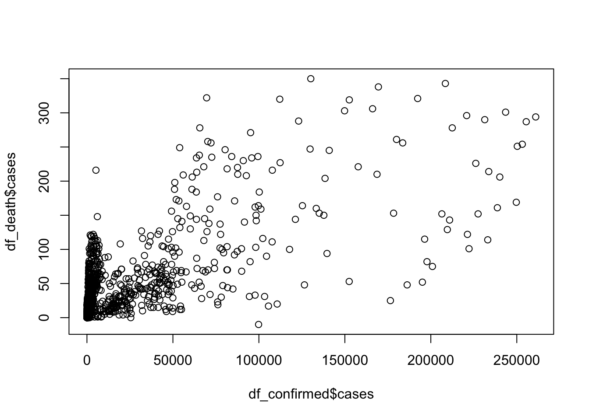
cor(df_confirmed$cases, df_death$cases)## [1] 0.7128247D.2.6.1 Extra
It is better to add the title of the graph and the labels of x-axis and y-axis.
Here we used paste("Comfirmed Cases in",COUNTRY) to automatically paste the chosen country name.
plot(df_confirmed$date, df_confirmed$cases, type = "h",
main = paste("Comfirmed Cases in",COUNTRY),
xlab = "Date", ylab = "Number of Cases")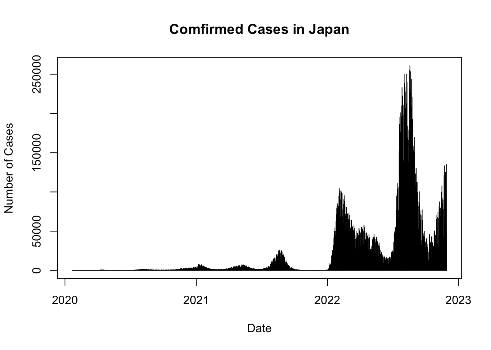
D.2.7 In Addition Set a Period
start_date <- as.Date("2021-07-01")
end_date <- Sys.Date()
df_date <- df[df$date >=start_date & df$date <= end_date,]Apply the same operations on this subset.
D.2.7.1 Setting types
df_date_confirmed <- df_date[df_date$type == "confirmed",]
df_date_death <- df_date[df_date$type == "death",]
df_date_recovery <- df_date[df_date$data_type == "recovery",]
head(df_date_confirmed)## date type cases population
## 175471 2021-07-01 confirmed 1754 126476458
## 175472 2021-07-02 confirmed 1775 126476458
## 175473 2021-07-03 confirmed 1878 126476458
## 175474 2021-07-04 confirmed 1485 126476458
## 175475 2021-07-05 confirmed 1029 126476458
## 175476 2021-07-06 confirmed 1668 126476458head(df_date_death)## date type cases population
## 462737 2021-07-01 death 24 126476458
## 462738 2021-07-02 death 25 126476458
## 462739 2021-07-03 death 9 126476458
## 462740 2021-07-04 death 6 126476458
## 462741 2021-07-05 death 19 126476458
## 462742 2021-07-06 death 22 126476458head(df_date_recovery)## [1] date type cases population
## <0 rows> (or 0-length row.names)D.2.8 Histograms
plot(df_date_confirmed$date, df_date_confirmed$cases, type = "h")plot(df_date_death$date, df_date_death$cases, type = "h")# plot(df_date_recovered$date, df_date_recovered$cases, type = "h") # no data for recoveryD.2.9 List Observations and Questions for Further Exploration
- Q0. Change the values of the location and the period and see the outcomes.
- Q1. What is the correlation between df_confirmed\(cases and df_death\)cases?
- Q2. Do we have a larger correlation value if we shift the dates to implement the time-lag?
- Q3. Do you have any other questions to explore?
D.3 Selection of Several Countries with ggplot2
Let us choose “US”, “Germany”, “India”, “South Africa”, “Korea, South” and “Japan”
Check whether province part is valid in these countries.
df0 <- coronavirus[coronavirus$country %in% c("US", "Germany", "India", "South Africa","Korea, South", "Japan"),]
unique(df0$province)## [1] NAWe keep the country name.
df <- df0[c(1,3,6,7,13)]
str(df)## 'data.frame': 17892 obs. of 5 variables:
## $ date : Date, format: "2020-01-22" "2020-01-23" ...
## $ country : chr "Germany" "Germany" "Germany" "Germany" ...
## $ type : chr "confirmed" "confirmed" "confirmed" "confirmed" ...
## $ cases : int 0 0 0 0 0 1 3 0 0 1 ...
## $ population: num 83783945 83783945 83783945 83783945 83783945 ...head(df)## date country type cases population
## 154071 2020-01-22 Germany confirmed 0 83783945
## 154072 2020-01-23 Germany confirmed 0 83783945
## 154073 2020-01-24 Germany confirmed 0 83783945
## 154074 2020-01-25 Germany confirmed 0 83783945
## 154075 2020-01-26 Germany confirmed 0 83783945
## 154076 2020-01-27 Germany confirmed 1 83783945D.3.1 Set types
df_confirmed <- df[df$type == "confirmed",]
df_death <- df[df$type == "death",]
df_recovery <- df[df$data_type == "recovery",]
head(df_confirmed)## date country type cases population
## 154071 2020-01-22 Germany confirmed 0 83783945
## 154072 2020-01-23 Germany confirmed 0 83783945
## 154073 2020-01-24 Germany confirmed 0 83783945
## 154074 2020-01-25 Germany confirmed 0 83783945
## 154075 2020-01-26 Germany confirmed 0 83783945
## 154076 2020-01-27 Germany confirmed 1 83783945head(df_death)## date country type cases population
## 441337 2020-01-22 Germany death 0 83783945
## 441338 2020-01-23 Germany death 0 83783945
## 441339 2020-01-24 Germany death 0 83783945
## 441340 2020-01-25 Germany death 0 83783945
## 441341 2020-01-26 Germany death 0 83783945
## 441342 2020-01-27 Germany death 0 83783945head(df_recovery)## [1] date country type cases population
## <0 rows> (or 0-length row.names)unique(df_confirmed$population)## [1] 83783945 1380004385 126476458 51269183 59308690 329466283D.3.2 Visualization using ggplot2 package
library(ggplot2)ggplot(df_confirmed) +
geom_line(aes(x = date, y = cases, color = country)) +
labs(x = "Date", y = "Number of Confirmed Cases", title = "Number of Confirmed Cases")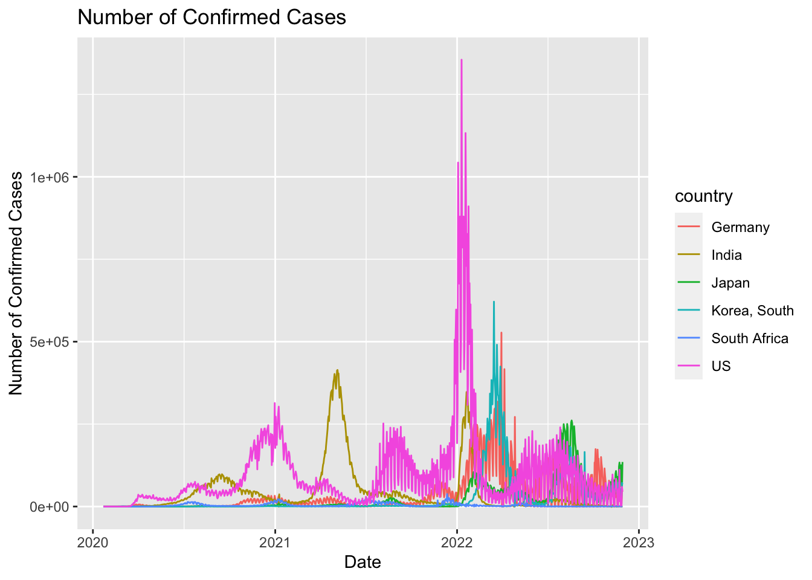
ggplot(df_confirmed) +
geom_line(aes(x = date, y = cases, color = country)) +
facet_wrap(vars(country)) +
labs(x = "Date", y = "Number of Confirmed Cases", title = "Number of Confirmed Cases")
ggplot(df_confirmed) +
geom_boxplot(aes(x = country, y = cases)) +
labs(x = "Date", y = "Number of Confirmed Cases", title = "Number of Confirmed Cases")ggplot(df_confirmed) +
geom_line(aes(x = date, y = (cases*100000/population), color = country)) +
labs(x = "Date", y = "Number of Confirmed Cases per 100,000", title = "Number of Confirmed Cases per 100,000")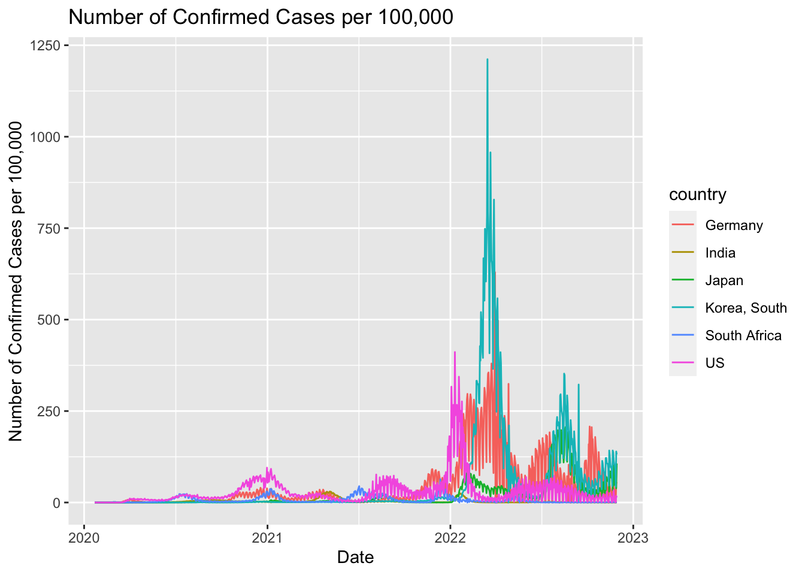
ggplot(df_confirmed) +
geom_line(aes(x = date, y = (cases*100000/population), color = country)) +
facet_wrap(vars(country)) +
labs(x = "Date", y = "Number of Confirmed Cases per 100,000", title = "Number of Confirmed Cases per 100,000")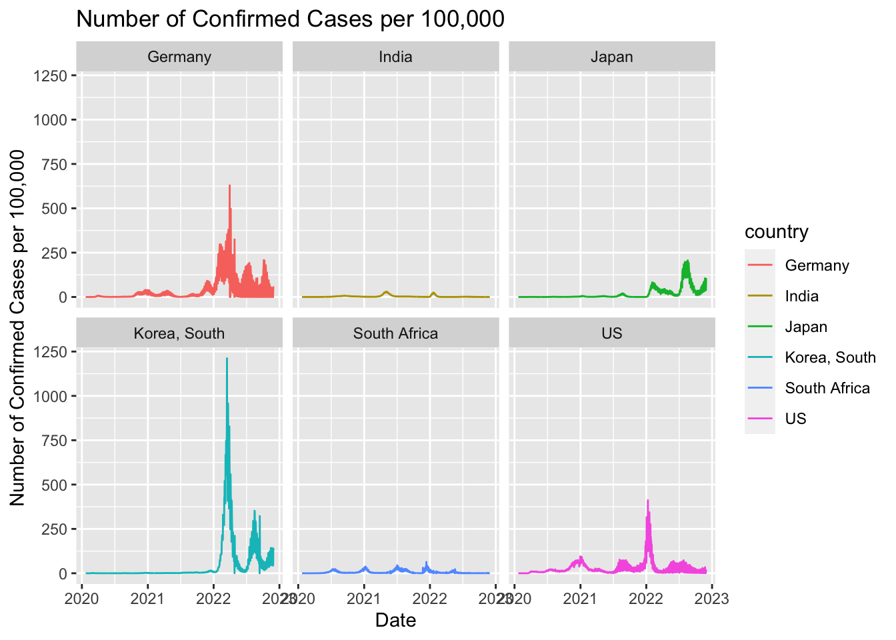
ggplot(df_confirmed) +
geom_boxplot(aes(x = country, y = (cases*100000)/population)) +
labs(x = "Date", y = "Number of Confirmed Cases per 100,000", title = "Number of Confirmed Cases per 100,000")ggplot(df_confirmed) +
geom_boxplot(aes(x = country, y = (cases*100000)/population)) +
scale_y_continuous(trans='log10') +
labs(x = "Date", y = "Number of Confirmed Cases in log10 per 100,000", title = "Number of Confirmed Cases in log10 Scale per 100,000")## Warning in self$trans$transform(x): NaNs produced## Warning: Transformation introduced infinite values in continuous y-axis## Warning: Removed 244 rows containing non-finite values (stat_boxplot).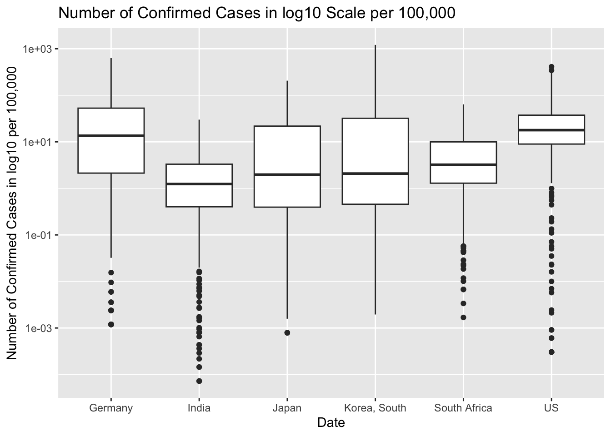
ggplot(df_death) +
geom_line(aes(x = date, y = cases, color = country)) +
labs(x = "Date", y = "Number of Deaths", title = "Number of Deaths")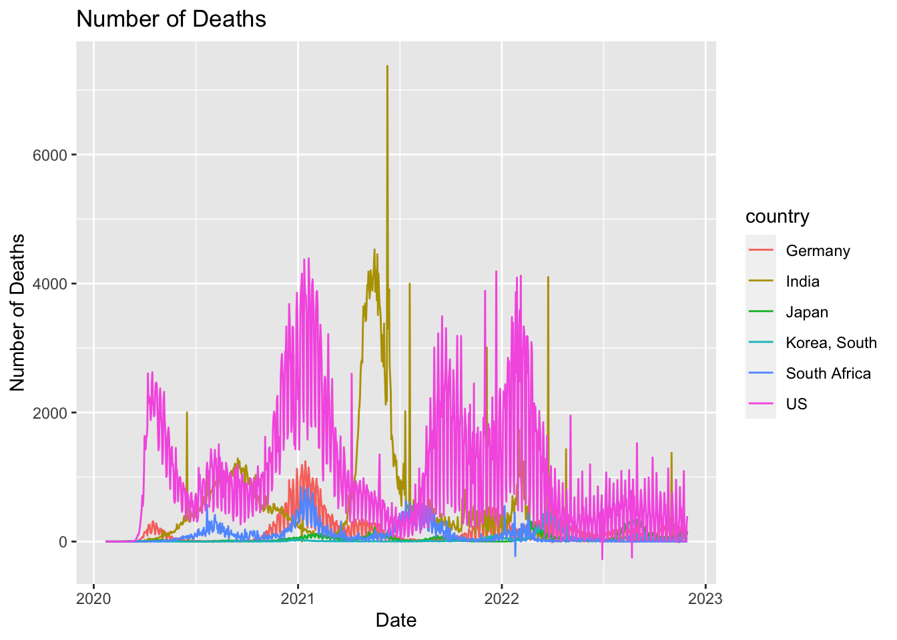
ggplot(df_death) +
geom_line(aes(x = date, y = (cases*100000/population), color = country)) +
labs(x = "Date", y = "Number of Deaths per 100,000", title = "Number of Deaths per 100,000")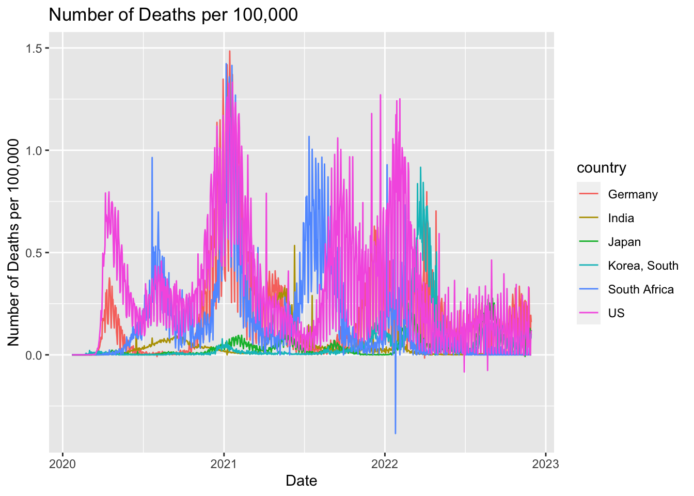
ggplot(df_death) +
geom_line(aes(x = date, y = (cases*100000/population), color = country)) +
facet_wrap(vars(country)) +
labs(x = "Date", y = "Number of Deaths per 100,000", title = "Number of Deaths per 100,000")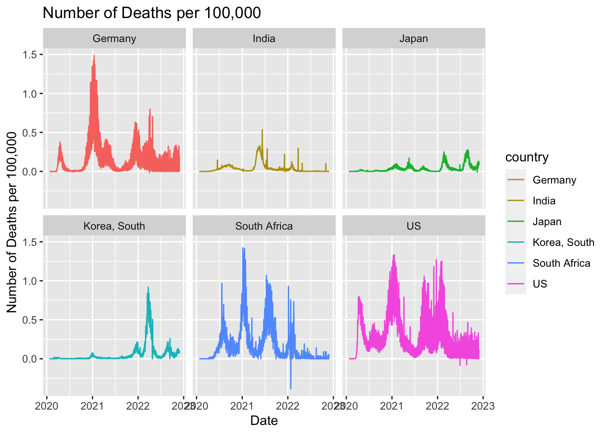
ggplot(df_death) +
geom_boxplot(aes(x = country, y = (cases*100000)/population)) +
scale_y_continuous(trans='log10') +
labs(x = "Date", y = "Number of Deaths in log10 per 100,000", title = "Number of Deaths in log10 Scale per 100,000")## Warning in self$trans$transform(x): NaNs produced## Warning: Transformation introduced infinite values in continuous y-axis## Warning: Removed 573 rows containing non-finite values (stat_boxplot).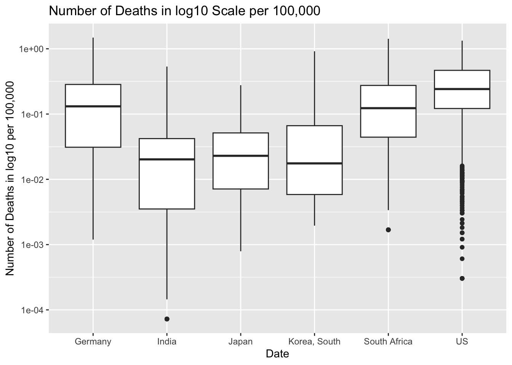
D.3.3 Setting a Period
start_date <- as.Date("2021-07-01")
end_date <- Sys.Date()
df_date <- df[df$date >=start_date & df$date <= end_date,]
df_date_confirmed <- df_date[df_date$type == "confirmed",]
df_date_death <- df_date[df_date$type == "death",]ggplot(df_date_confirmed) +
geom_line(aes(x = date, y = (cases*100000/population), color = country))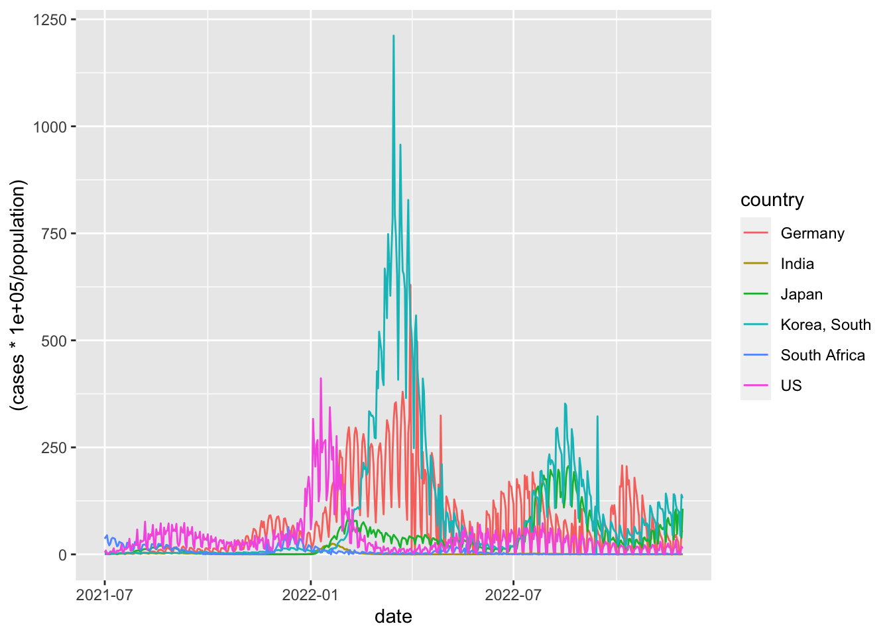
ggplot(df_date_confirmed) +
geom_line(aes(x = date, y = (cases*100000/population), color = country)) +
facet_wrap(vars(country))start_date <- as.Date("2021-11-20")
end_date <- Sys.Date()
df_date <- df[df$date >=start_date & df$date <= end_date & df$country %in% c("Germany", "South Africa", "US"),]
df_date_confirmed <- df_date[df_date$type == "confirmed",]
df_date_death <- df_date[df_date$type == "death",]ggplot(df_date_confirmed) +
geom_line(aes(x = date, y = (cases*100000/population), color = country)) The number of deaths in 100,000.
The number of deaths in 100,000.
ggplot(df_date_death) +
geom_line(aes(x = date, y = (cases*100000/population), color = country))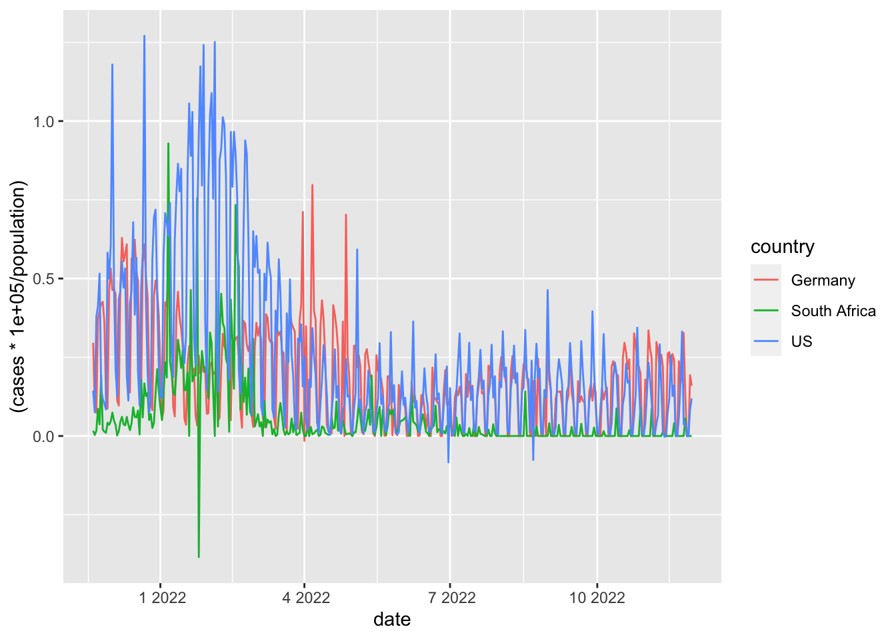
D.4 Importing and Transforming Data with readr and dplyr in tidyverse Packages
D.4.1 Review
- Attaching neccessary packages
- Importing data
- Glimpsing data with
head(),str()and changing types of a column, i.e.,characters to date - Selecting columns of data
- Filtering rows of data
- Mutating data
- Visualizing data by
ggplot()
library(ggplot2)
coronavirus <- read.csv("https://github.com/RamiKrispin/coronavirus/raw/master/csv/coronavirus.csv")
coronavirus$date <- as.Date(coronavirus$date)
df <- coronavirus[c(1,3,6,7,13)]
COUNTRIES <- c("US", "Germany", "India", "South Africa","Korea, South", "Japan")
start_date <- as.Date("2021-07-01")
end_date <- Sys.Date()
df0 <- coronavirus[df$country %in% COUNTRIES,]
df1 <- df0[df0$date >=start_date & df0$date <= end_date,]
df1_confirmed <- df1[df1$type == "confirmed",]
ggplot(df1_confirmed) +
geom_line(aes(x = date, y = (cases*100000/population), color = country)) +
labs(x = "Date", y = "Number of Confirmed Cases per 100,000", title = "Number of Confirmed Cases per 100,000") ### library: Loading/Attaching Packages
### library: Loading/Attaching Packages
To use packages,
- Install packages by
install.packages()only once, e.g.,install.packages("tidyverse"). - Load and attach packages by
library()at each session, e.g.,library(tidyverse).
For library(), see https://www.rdocumentation.org/packages/base/versions/3.6.2/topics/library.
library(tidyverse)D.4.2 Importing data by readr in tidyverse
The goal of readr is to provide a fast and friendly way to read rectangular data (like csv, tsv, and fwf). It is designed to flexibly parse many types of data found in the wild, while still cleanly failing when data unexpectedly changes. If you are new to readr, the best place to start is the data import chapter in R for data science.
To accurately read a rectangular dataset with readr you combine two pieces: a function that parses the overall file, and a column specification. The column specification describes how each column should be converted from a character vector to the most appropriate data type, and in most cases it’s not necessary because readr will guess it for you automatically.
readr supports seven file formats with seven read_ functions:
- read_csv(): comma separated (CSV) files
- read_tsv(): tab separated files
- read_delim(): general delimited files
- read_fwf(): fixed width files
- read_table(): tabular files where columns are separated by white-space.
- read_log(): web log files
coronavirus_tv <- read_csv("https://github.com/RamiKrispin/coronavirus/raw/master/csv/coronavirus.csv")## Rows: 846888 Columns: 15
## ── Column specification ────────────────────────────────────────────────────────────────
## Delimiter: ","
## chr (8): province, country, type, iso2, iso3, combined_key, continent_name,...
## dbl (6): lat, long, cases, uid, code3, population
## date (1): date
##
## ℹ Use `spec()` to retrieve the full column specification for this data.
## ℹ Specify the column types or set `show_col_types = FALSE` to quiet this message.coronavirus_tv## # A tibble: 846,888 × 15
## date province country lat long type cases uid iso2 iso3 code3
## <date> <chr> <chr> <dbl> <dbl> <chr> <dbl> <dbl> <chr> <chr> <dbl>
## 1 2020-01-22 Alberta Canada 53.9 -117. confir… 0 12401 CA CAN 124
## 2 2020-01-23 Alberta Canada 53.9 -117. confir… 0 12401 CA CAN 124
## 3 2020-01-24 Alberta Canada 53.9 -117. confir… 0 12401 CA CAN 124
## 4 2020-01-25 Alberta Canada 53.9 -117. confir… 0 12401 CA CAN 124
## 5 2020-01-26 Alberta Canada 53.9 -117. confir… 0 12401 CA CAN 124
## 6 2020-01-27 Alberta Canada 53.9 -117. confir… 0 12401 CA CAN 124
## 7 2020-01-28 Alberta Canada 53.9 -117. confir… 0 12401 CA CAN 124
## 8 2020-01-29 Alberta Canada 53.9 -117. confir… 0 12401 CA CAN 124
## 9 2020-01-30 Alberta Canada 53.9 -117. confir… 0 12401 CA CAN 124
## 10 2020-01-31 Alberta Canada 53.9 -117. confir… 0 12401 CA CAN 124
## # … with 846,878 more rows, and 4 more variables: combined_key <chr>,
## # population <dbl>, continent_name <chr>, continent_code <chr># print(coronavirus_tv) # same as above- Data is in
tibble, see https://tibble.tidyverse.org. - See thatthe first column is already recognized as date.
glimpseis similar tostrand is like a transposed version ofprint()
glimpse(coronavirus_tv)## Rows: 846,888
## Columns: 15
## $ date <date> 2020-01-22, 2020-01-23, 2020-01-24, 2020-01-25, 2020-0…
## $ province <chr> "Alberta", "Alberta", "Alberta", "Alberta", "Alberta", …
## $ country <chr> "Canada", "Canada", "Canada", "Canada", "Canada", "Cana…
## $ lat <dbl> 53.9333, 53.9333, 53.9333, 53.9333, 53.9333, 53.9333, 5…
## $ long <dbl> -116.5765, -116.5765, -116.5765, -116.5765, -116.5765, …
## $ type <chr> "confirmed", "confirmed", "confirmed", "confirmed", "co…
## $ cases <dbl> 0, 0, 0, 0, 0, 0, 0, 0, 0, 0, 0, 0, 0, 0, 0, 0, 0, 0, 0…
## $ uid <dbl> 12401, 12401, 12401, 12401, 12401, 12401, 12401, 12401,…
## $ iso2 <chr> "CA", "CA", "CA", "CA", "CA", "CA", "CA", "CA", "CA", "…
## $ iso3 <chr> "CAN", "CAN", "CAN", "CAN", "CAN", "CAN", "CAN", "CAN",…
## $ code3 <dbl> 124, 124, 124, 124, 124, 124, 124, 124, 124, 124, 124, …
## $ combined_key <chr> "Alberta, Canada", "Alberta, Canada", "Alberta, Canada"…
## $ population <dbl> 4413146, 4413146, 4413146, 4413146, 4413146, 4413146, 4…
## $ continent_name <chr> "North America", "North America", "North America", "Nor…
## $ continent_code <chr> NA, NA, NA, NA, NA, NA, NA, NA, NA, NA, NA, NA, NA, NA,…download.file()andwrite_csv()
# Don't run repeatedly
DLURL <- "https://github.com/RamiKrispin/coronavirus/raw/master/csv/coronavirus.csv"
DLDATE <- paste0("coronavirus", Sys.Date(), ".csv")
download.file(DLURL, destfile = DLDATE)# Don't run repeatedly
WRITEDATE <- paste0("covid19_", Sys.Date(), ".csv")
write_csv(coronavirus, WRITEDATE)D.4.3 Transforming data by dplyr in tidyverse
dplyr is a grammar of data manipulation, providing a consistent set of verbs that help you solve the most common data manipulation challenges:
- mutate() adds new variables that are functions of existing variables
- select() picks variables based on their names.
- filter() picks cases based on their values.
- summarise() reduces multiple values down to a single summary.
- arrange() changes the ordering of the rows.
These all combine naturally with group_by() which allows you to perform any operation “by group”. You can learn more about them in vignette(“dplyr”). As well as these single-table verbs, dplyr also provides a variety of two-table verbs, which you can learn about in vignette("two-table").
If you are new to dplyr, the best place to start is the data transformation chapter in R for data science.
D.4.3.1 slice(): Subset rows using their positions
slice() lets you index rows by their (integer) locations. It allows you to select, remove, and duplicate rows. It is accompanied by a number of helpers for common use cases:
- slice_head() and slice_tail() select the first or last rows.
- slice_sample() randomly selects rows.
- slice_min() and slice_max() select rows with highest or lowest values of a variable.
The following is similar to head() but it does much more.
slice(coronavirus_tv, 6)## # A tibble: 1 × 15
## date province country lat long type cases uid iso2 iso3 code3
## <date> <chr> <chr> <dbl> <dbl> <chr> <dbl> <dbl> <chr> <chr> <dbl>
## 1 2020-01-27 Alberta Canada 53.9 -117. confirm… 0 12401 CA CAN 124
## # … with 4 more variables: combined_key <chr>, population <dbl>,
## # continent_name <chr>, continent_code <chr>D.4.3.2 select() Subset columns using their names and types
Select (and optionally rename) variables in a data frame, using a concise mini-language that makes it easy to refer to variables based on their name (e.g. a:f selects all columns from a on the left to f on the right). You can also use predicate functions like is.numeric to select variables based on their properties.
| Helper Function | Use | Example |
|---|---|---|
| - | Columns except | select(babynames, -prop) |
| : | Columns between (inclusive) | select(babynames, year:n) |
| contains() | Columns that contains a string | select(babynames, contains(“n”)) |
| ends_with() | Columns that ends with a string | select(babynames, ends_with(“n”)) |
| matches() | Columns that matches a regex | select(babynames, matches(“n”)) |
| num_range() | Columns with a numerical suffix in the range | Not applicable with babynames |
| one_of() | Columns whose name appear in the given set | select(babynames, one_of(c(“sex”, “gender”))) |
| starts_with() | Columns that starts with a string | select(babynames, starts_with(“n”)) |
df_tv <- select(coronavirus_tv, c(date, country, type, cases, population))
df_tv## # A tibble: 846,888 × 5
## date country type cases population
## <date> <chr> <chr> <dbl> <dbl>
## 1 2020-01-22 Canada confirmed 0 4413146
## 2 2020-01-23 Canada confirmed 0 4413146
## 3 2020-01-24 Canada confirmed 0 4413146
## 4 2020-01-25 Canada confirmed 0 4413146
## 5 2020-01-26 Canada confirmed 0 4413146
## 6 2020-01-27 Canada confirmed 0 4413146
## 7 2020-01-28 Canada confirmed 0 4413146
## 8 2020-01-29 Canada confirmed 0 4413146
## 9 2020-01-30 Canada confirmed 0 4413146
## 10 2020-01-31 Canada confirmed 0 4413146
## # … with 846,878 more rowsidentical(df_tv, select(coronavirus_tv, date, country, type, cases, population))## [1] TRUEidentical(df_tv, select(coronavirus_tv, 1, 3, 6, 7, 13))## [1] TRUEidentical(df_tv, select(coronavirus_tv, "date", "country", "type", "cases", "population"))## [1] TRUED.4.3.3 filter() Subset rows using column values
The filter() function is used to subset a data frame, retaining all rows that satisfy your conditions. To be retained, the row must produce a value of TRUE for all conditions. Note that when a condition evaluates to NA the row will be dropped, unlike base subsetting with [.
| Logical operator | tests | Example |
|---|---|---|
| > | Is x greater than y? | x > y |
| >= | Is x greater than or equal to y? | x >= y |
| < | Is x less than y? | x < y |
| <= | Is x less than or equal to y? | x <= y |
| == | Is x equal to y? | x == y |
| != | Is x not equal to y? | x != y |
| is.na() | Is x an NA? | is.na(x) |
| !is.na() | Is x not an NA? | !is.na(x) |
COUNTRIES <- c("US", "Germany", "India", "South Africa","Korea, South", "Japan")
start_date <- as.Date("2021-07-01")
end_date <- Sys.Date() df_tv0 <- filter(df_tv, country %in% COUNTRIES)
df_tv1 <- filter(df_tv0, date >=start_date & df_tv0$date <= end_date)
df_tv1_confirmed <- filter(df_tv1, type == "confirmed")identical(df_tv1_confirmed,
filter(df_tv, (country %in% COUNTRIES) &
(date >=start_date & date <= end_date) &
(type == "confirmed")))## [1] TRUE- Advanced method using piping
df_tv %>% filter(country %in% COUNTRIES) %>%
filter(date >=start_date & df_tv0$date <= end_date) %>%
filter(type == "confirmed") %>%
identical(df_tv1_confirmed)## [1] TRUED.4.3.4 mutate(): Create, modify, and delete columns
mutate() adds new variables and preserves existing ones; transmute() adds new variables and drops existing ones. New variables overwrite existing variables of the same name. Variables can be removed by setting their value to NULL.
df_tv1_confirmed_pp <- mutate(df_tv1_confirmed, confirmed_pp = cases*100000/population)D.4.3.5 ggplot(): Plotting
ggplot2 is a system for declaratively creating graphics, based on The Grammar of Graphics. You provide the data, tell ggplot2 how to map variables to aesthetics, what graphical primitives to use, and it takes care of the details.
ggplot(df_tv1_confirmed_pp) +
geom_line(aes(x = date, y = confirmed_pp, color = country)) +
labs(x = "Date", y = "Number of Confirmed Cases per 100,000",
title = "Number of Confirmed Cases per 100,000")
D.4.3.6 Summary
library(tidyverse)
coronavirus_tv <- read_csv("https://github.com/RamiKrispin/coronavirus/raw/master/csv/coronavirus.csv")## Rows: 846888 Columns: 15
## ── Column specification ────────────────────────────────────────────────────────────────
## Delimiter: ","
## chr (8): province, country, type, iso2, iso3, combined_key, continent_name,...
## dbl (6): lat, long, cases, uid, code3, population
## date (1): date
##
## ℹ Use `spec()` to retrieve the full column specification for this data.
## ℹ Specify the column types or set `show_col_types = FALSE` to quiet this message.COUNTRIES <- c("US", "Germany", "India", "South Africa","Korea, South", "Japan")
start_date <- as.Date("2021-07-01")
end_date <- Sys.Date()
df_tv <- select(coronavirus_tv, c(date, country, type, cases, population))
df_tv0 <- filter(df_tv, country %in% COUNTRIES)
df_tv1 <- filter(df_tv0, date >=start_date & df_tv0$date <= end_date)
df_tv1_confirmed <- filter(df_tv1, type == "confirmed")
df_tv1_confirmed_pp <- mutate(df_tv1_confirmed, confirmed_pp = cases*100000/population)
ggplot(df_tv1_confirmed_pp) +
geom_line(aes(x = date, y = confirmed_pp, color = country)) +
labs(x = "Date", y = "Number of Confirmed Cases per 100,000",
title = "Number of Confirmed Cases per 100,000")
D.4.3.7 Pipes
After importing data and setting parameters; COUNTRIES, start_date and end_date, we can simplify the code block as follows.
coronavirus_tv %>%
select(date, country, type, cases, population) %>%
filter(country %in% COUNTRIES) %>%
filter(date >=start_date & df_tv0$date <= end_date) %>%
filter(type == "confirmed") %>%
mutate(confirmed_pp = cases*100000/population) %>%
ggplot() +
geom_line(aes(x = date, y = confirmed_pp, color = country)) +
labs(x = "Date", y = "Number of Confirmed Cases per 100,000",
title = "Number of Confirmed Cases per 100,000")D.5 Data of Johns Hopkins Universiy and World Bank
D.5.1 Importing Raw Data
We import the original Johns Hopkins Github data.
- COVID-19 Data Repository by the Center for Systems Science and Engineering (CSSE) at Johns Hopkins University: https://github.com/CSSEGISandData/COVID-19
- We use time series data
# IMPORT RAW DATA: Johns Hopkins Github data
confirmedraw <- read_csv("https://raw.githubusercontent.com/CSSEGISandData/COVID-19/master/csse_covid_19_data/csse_covid_19_time_series/time_series_covid19_confirmed_global.csv")## Rows: 289 Columns: 998
## ── Column specification ────────────────────────────────────────────────────────────────
## Delimiter: ","
## chr (2): Province/State, Country/Region
## dbl (996): Lat, Long, 1/22/20, 1/23/20, 1/24/20, 1/25/20, 1/26/20, 1/27/20, ...
##
## ℹ Use `spec()` to retrieve the full column specification for this data.
## ℹ Specify the column types or set `show_col_types = FALSE` to quiet this message.glimpse(confirmedraw)## Rows: 289
## Columns: 998
## $ `Province/State` <chr> NA, NA, NA, NA, NA, NA, NA, NA, NA, "Australian Capit…
## $ `Country/Region` <chr> "Afghanistan", "Albania", "Algeria", "Andorra", "Ango…
## $ Lat <dbl> 33.93911, 41.15330, 28.03390, 42.50630, -11.20270, -7…
## $ Long <dbl> 67.709953, 20.168300, 1.659600, 1.521800, 17.873900, …
## $ `1/22/20` <dbl> 0, 0, 0, 0, 0, 0, 0, 0, 0, 0, 0, 0, 0, 0, 0, 0, 0, 0,…
## $ `1/23/20` <dbl> 0, 0, 0, 0, 0, 0, 0, 0, 0, 0, 0, 0, 0, 0, 0, 0, 0, 0,…
## $ `1/24/20` <dbl> 0, 0, 0, 0, 0, 0, 0, 0, 0, 0, 0, 0, 0, 0, 0, 0, 0, 0,…
## $ `1/25/20` <dbl> 0, 0, 0, 0, 0, 0, 0, 0, 0, 0, 0, 0, 0, 0, 0, 0, 0, 0,…
## $ `1/26/20` <dbl> 0, 0, 0, 0, 0, 0, 0, 0, 0, 0, 3, 0, 0, 0, 0, 1, 0, 0,…
## $ `1/27/20` <dbl> 0, 0, 0, 0, 0, 0, 0, 0, 0, 0, 4, 0, 0, 0, 0, 1, 0, 0,…
## $ `1/28/20` <dbl> 0, 0, 0, 0, 0, 0, 0, 0, 0, 0, 4, 0, 0, 0, 0, 1, 0, 0,…
## $ `1/29/20` <dbl> 0, 0, 0, 0, 0, 0, 0, 0, 0, 0, 4, 0, 1, 0, 0, 1, 0, 0,…
## $ `1/30/20` <dbl> 0, 0, 0, 0, 0, 0, 0, 0, 0, 0, 4, 0, 3, 0, 0, 2, 0, 0,…
## $ `1/31/20` <dbl> 0, 0, 0, 0, 0, 0, 0, 0, 0, 0, 4, 0, 2, 0, 0, 3, 0, 0,…
## $ `2/1/20` <dbl> 0, 0, 0, 0, 0, 0, 0, 0, 0, 0, 4, 0, 3, 1, 0, 4, 0, 0,…
## $ `2/2/20` <dbl> 0, 0, 0, 0, 0, 0, 0, 0, 0, 0, 4, 0, 2, 2, 0, 4, 0, 0,…
## $ `2/3/20` <dbl> 0, 0, 0, 0, 0, 0, 0, 0, 0, 0, 4, 0, 2, 2, 0, 4, 0, 0,…
## $ `2/4/20` <dbl> 0, 0, 0, 0, 0, 0, 0, 0, 0, 0, 4, 0, 3, 2, 0, 4, 0, 0,…
## $ `2/5/20` <dbl> 0, 0, 0, 0, 0, 0, 0, 0, 0, 0, 4, 0, 3, 2, 0, 4, 0, 0,…
## $ `2/6/20` <dbl> 0, 0, 0, 0, 0, 0, 0, 0, 0, 0, 4, 0, 4, 2, 0, 4, 0, 0,…
## $ `2/7/20` <dbl> 0, 0, 0, 0, 0, 0, 0, 0, 0, 0, 4, 0, 5, 2, 0, 4, 0, 0,…
## $ `2/8/20` <dbl> 0, 0, 0, 0, 0, 0, 0, 0, 0, 0, 4, 0, 5, 2, 0, 4, 0, 0,…
## $ `2/9/20` <dbl> 0, 0, 0, 0, 0, 0, 0, 0, 0, 0, 4, 0, 5, 2, 0, 4, 0, 0,…
## $ `2/10/20` <dbl> 0, 0, 0, 0, 0, 0, 0, 0, 0, 0, 4, 0, 5, 2, 0, 4, 0, 0,…
## $ `2/11/20` <dbl> 0, 0, 0, 0, 0, 0, 0, 0, 0, 0, 4, 0, 5, 2, 0, 4, 0, 0,…
## $ `2/12/20` <dbl> 0, 0, 0, 0, 0, 0, 0, 0, 0, 0, 4, 0, 5, 2, 0, 4, 0, 0,…
## $ `2/13/20` <dbl> 0, 0, 0, 0, 0, 0, 0, 0, 0, 0, 4, 0, 5, 2, 0, 4, 0, 0,…
## $ `2/14/20` <dbl> 0, 0, 0, 0, 0, 0, 0, 0, 0, 0, 4, 0, 5, 2, 0, 4, 0, 0,…
## $ `2/15/20` <dbl> 0, 0, 0, 0, 0, 0, 0, 0, 0, 0, 4, 0, 5, 2, 0, 4, 0, 0,…
## $ `2/16/20` <dbl> 0, 0, 0, 0, 0, 0, 0, 0, 0, 0, 4, 0, 5, 2, 0, 4, 0, 0,…
## $ `2/17/20` <dbl> 0, 0, 0, 0, 0, 0, 0, 0, 0, 0, 4, 0, 5, 2, 0, 4, 0, 0,…
## $ `2/18/20` <dbl> 0, 0, 0, 0, 0, 0, 0, 0, 0, 0, 4, 0, 5, 2, 0, 4, 0, 0,…
## $ `2/19/20` <dbl> 0, 0, 0, 0, 0, 0, 0, 0, 0, 0, 4, 0, 5, 2, 0, 4, 0, 0,…
## $ `2/20/20` <dbl> 0, 0, 0, 0, 0, 0, 0, 0, 0, 0, 4, 0, 5, 2, 0, 4, 0, 0,…
## $ `2/21/20` <dbl> 0, 0, 0, 0, 0, 0, 0, 0, 0, 0, 4, 0, 5, 2, 0, 4, 0, 0,…
## $ `2/22/20` <dbl> 0, 0, 0, 0, 0, 0, 0, 0, 0, 0, 4, 0, 5, 2, 0, 4, 0, 0,…
## $ `2/23/20` <dbl> 0, 0, 0, 0, 0, 0, 0, 0, 0, 0, 4, 0, 5, 2, 0, 4, 0, 0,…
## $ `2/24/20` <dbl> 5, 0, 0, 0, 0, 0, 0, 0, 0, 0, 4, 0, 5, 2, 0, 4, 0, 0,…
## $ `2/25/20` <dbl> 5, 0, 1, 0, 0, 0, 0, 0, 0, 0, 4, 0, 5, 2, 0, 4, 0, 2,…
## $ `2/26/20` <dbl> 5, 0, 1, 0, 0, 0, 0, 0, 0, 0, 4, 0, 5, 2, 0, 4, 0, 1,…
## $ `2/27/20` <dbl> 5, 0, 1, 0, 0, 0, 0, 0, 0, 0, 4, 0, 5, 2, 0, 4, 0, 1,…
## $ `2/28/20` <dbl> 5, 0, 1, 0, 0, 0, 0, 0, 0, 0, 4, 0, 5, 2, 0, 4, 0, 1,…
## $ `2/29/20` <dbl> 5, 0, 1, 0, 0, 0, 0, 0, 0, 0, 4, 0, 9, 3, 0, 7, 2, 3,…
## $ `3/1/20` <dbl> 5, 0, 1, 0, 0, 0, 0, 0, 1, 0, 6, 0, 9, 3, 0, 7, 2, 7,…
## $ `3/2/20` <dbl> 5, 0, 3, 1, 0, 0, 0, 0, 1, 0, 6, 0, 9, 3, 1, 9, 2, 8,…
## $ `3/3/20` <dbl> 5, 0, 5, 1, 0, 0, 0, 1, 1, 0, 13, 0, 11, 3, 1, 9, 2, …
## $ `3/4/20` <dbl> 5, 0, 12, 1, 0, 0, 0, 1, 1, 0, 22, 1, 11, 5, 1, 10, 2…
## $ `3/5/20` <dbl> 5, 0, 12, 1, 0, 0, 0, 1, 1, 0, 22, 1, 13, 5, 1, 10, 3…
## $ `3/6/20` <dbl> 5, 0, 17, 1, 0, 0, 0, 2, 1, 0, 26, 0, 13, 7, 1, 10, 3…
## $ `3/7/20` <dbl> 8, 0, 17, 1, 0, 0, 0, 8, 1, 0, 28, 0, 13, 7, 1, 11, 3…
## $ `3/8/20` <dbl> 8, 0, 19, 1, 0, 0, 0, 12, 1, 0, 38, 0, 15, 7, 2, 11, …
## $ `3/9/20` <dbl> 8, 2, 20, 1, 0, 0, 0, 12, 1, 0, 48, 0, 15, 7, 2, 15, …
## $ `3/10/20` <dbl> 8, 10, 20, 1, 0, 0, 0, 17, 1, 0, 55, 1, 18, 7, 2, 18,…
## $ `3/11/20` <dbl> 11, 12, 20, 1, 0, 0, 0, 19, 1, 0, 65, 1, 20, 9, 3, 21…
## $ `3/12/20` <dbl> 11, 23, 24, 1, 0, 0, 0, 19, 4, 0, 65, 1, 20, 9, 3, 21…
## $ `3/13/20` <dbl> 11, 33, 26, 1, 0, 0, 1, 31, 8, 1, 92, 1, 35, 16, 5, 3…
## $ `3/14/20` <dbl> 14, 38, 37, 1, 0, 0, 1, 34, 18, 1, 112, 1, 46, 19, 5,…
## $ `3/15/20` <dbl> 20, 42, 48, 1, 0, 0, 1, 45, 26, 1, 134, 1, 61, 20, 6,…
## $ `3/16/20` <dbl> 25, 51, 54, 2, 0, 0, 1, 56, 52, 2, 171, 1, 68, 29, 7,…
## $ `3/17/20` <dbl> 26, 55, 60, 39, 0, 0, 1, 68, 78, 2, 210, 1, 78, 29, 7…
## $ `3/18/20` <dbl> 26, 59, 74, 39, 0, 0, 1, 79, 84, 3, 267, 1, 94, 37, 1…
## $ `3/19/20` <dbl> 26, 64, 87, 53, 0, 0, 1, 97, 115, 4, 307, 1, 144, 42,…
## $ `3/20/20` <dbl> 24, 70, 90, 75, 1, 0, 1, 128, 136, 6, 353, 3, 184, 50…
## $ `3/21/20` <dbl> 24, 76, 139, 88, 2, 0, 1, 158, 160, 9, 436, 3, 221, 6…
## $ `3/22/20` <dbl> 34, 89, 201, 113, 2, 0, 1, 266, 194, 19, 669, 5, 259,…
## $ `3/23/20` <dbl> 40, 104, 230, 133, 3, 0, 3, 301, 235, 32, 669, 5, 319…
## $ `3/24/20` <dbl> 42, 123, 264, 164, 3, 0, 3, 387, 249, 39, 818, 6, 397…
## $ `3/25/20` <dbl> 74, 146, 302, 188, 3, 0, 3, 387, 265, 39, 1029, 6, 44…
## $ `3/26/20` <dbl> 80, 174, 367, 224, 4, 0, 7, 502, 290, 53, 1219, 12, 4…
## $ `3/27/20` <dbl> 91, 186, 409, 267, 4, 0, 7, 589, 329, 62, 1405, 12, 5…
## $ `3/28/20` <dbl> 106, 197, 454, 308, 5, 0, 7, 690, 407, 71, 1617, 15, …
## $ `3/29/20` <dbl> 114, 212, 511, 334, 7, 0, 7, 745, 424, 77, 1791, 15, …
## $ `3/30/20` <dbl> 114, 223, 584, 370, 7, 0, 7, 820, 482, 78, 2032, 15, …
## $ `3/31/20` <dbl> 166, 243, 716, 376, 7, 0, 7, 1054, 532, 80, 2032, 17,…
## $ `4/1/20` <dbl> 192, 259, 847, 390, 8, 0, 7, 1054, 571, 84, 2182, 19,…
## $ `4/2/20` <dbl> 235, 277, 986, 428, 8, 0, 9, 1133, 663, 87, 2298, 21,…
## $ `4/3/20` <dbl> 269, 304, 1171, 439, 8, 0, 15, 1265, 736, 91, 2389, 2…
## $ `4/4/20` <dbl> 270, 333, 1251, 466, 10, 0, 15, 1451, 770, 93, 2493, …
## $ `4/5/20` <dbl> 299, 361, 1320, 501, 14, 0, 15, 1451, 822, 96, 2580, …
## $ `4/6/20` <dbl> 337, 377, 1423, 525, 16, 0, 15, 1554, 833, 96, 2637, …
## $ `4/7/20` <dbl> 367, 383, 1468, 545, 17, 0, 19, 1628, 853, 96, 2686, …
## $ `4/8/20` <dbl> 423, 400, 1572, 564, 19, 0, 19, 1715, 881, 99, 2734, …
## $ `4/9/20` <dbl> 444, 409, 1666, 583, 19, 0, 19, 1795, 921, 100, 2773,…
## $ `4/10/20` <dbl> 521, 416, 1761, 601, 19, 0, 19, 1975, 937, 103, 2822,…
## $ `4/11/20` <dbl> 521, 433, 1825, 601, 19, 0, 21, 1975, 967, 103, 2857,…
## $ `4/12/20` <dbl> 555, 446, 1914, 638, 19, 0, 21, 2142, 1013, 103, 2857…
## $ `4/13/20` <dbl> 607, 467, 1983, 646, 19, 0, 23, 2208, 1039, 102, 2863…
## $ `4/14/20` <dbl> 665, 475, 2070, 659, 19, 0, 23, 2277, 1067, 103, 2870…
## $ `4/15/20` <dbl> 770, 494, 2160, 673, 19, 0, 23, 2443, 1111, 103, 2886…
## $ `4/16/20` <dbl> 794, 518, 2268, 673, 19, 0, 23, 2571, 1159, 103, 2897…
## $ `4/17/20` <dbl> 845, 539, 2418, 696, 19, 0, 23, 2669, 1201, 103, 2926…
## $ `4/18/20` <dbl> 908, 548, 2534, 704, 24, 0, 23, 2758, 1248, 103, 2936…
## $ `4/19/20` <dbl> 933, 562, 2629, 713, 24, 0, 23, 2839, 1291, 103, 2957…
## $ `4/20/20` <dbl> 996, 584, 2718, 717, 24, 0, 23, 2941, 1339, 104, 2963…
## $ `4/21/20` <dbl> 1026, 609, 2811, 717, 24, 0, 23, 3031, 1401, 104, 296…
## $ `4/22/20` <dbl> 1092, 634, 2910, 723, 25, 0, 24, 3144, 1473, 104, 297…
## $ `4/23/20` <dbl> 1176, 663, 3007, 723, 25, 0, 24, 3435, 1523, 104, 297…
## $ `4/24/20` <dbl> 1226, 678, 3127, 731, 25, 0, 24, 3607, 1596, 105, 298…
## $ `4/25/20` <dbl> 1330, 712, 3256, 738, 25, 0, 24, 3780, 1677, 106, 299…
## $ `4/26/20` <dbl> 1463, 726, 3382, 738, 26, 0, 24, 3892, 1746, 106, 300…
## $ `4/27/20` <dbl> 1531, 736, 3517, 743, 27, 0, 24, 4003, 1808, 106, 300…
## $ `4/28/20` <dbl> 1703, 750, 3649, 743, 27, 0, 24, 4127, 1867, 106, 301…
## $ `4/29/20` <dbl> 1827, 766, 3848, 743, 27, 0, 24, 4285, 1932, 106, 301…
## $ `4/30/20` <dbl> 1827, 773, 4006, 745, 27, 0, 24, 4428, 2066, 106, 302…
## $ `5/1/20` <dbl> 2171, 782, 4154, 745, 30, 0, 25, 4532, 2148, 106, 303…
## $ `5/2/20` <dbl> 2469, 789, 4295, 747, 35, 0, 25, 4681, 2273, 106, 303…
## $ `5/3/20` <dbl> 2469, 795, 4474, 748, 35, 0, 25, 4783, 2386, 106, 303…
## $ `5/4/20` <dbl> 2469, 803, 4648, 750, 35, 0, 25, 4887, 2507, 107, 303…
## $ `5/5/20` <dbl> 2469, 820, 4838, 751, 36, 0, 25, 5020, 2619, 107, 304…
## $ `5/6/20` <dbl> 3224, 832, 4997, 751, 36, 0, 25, 5208, 2782, 107, 304…
## $ `5/7/20` <dbl> 3392, 842, 5182, 752, 36, 0, 25, 5371, 2884, 107, 304…
## $ `5/8/20` <dbl> 3563, 850, 5369, 752, 43, 0, 25, 5611, 3029, 107, 305…
## $ `5/9/20` <dbl> 3563, 856, 5558, 754, 43, 0, 25, 5776, 3175, 107, 305…
## $ `5/10/20` <dbl> 4402, 868, 5723, 755, 45, 0, 25, 6034, 3313, 107, 305…
## $ `5/11/20` <dbl> 4664, 872, 5891, 755, 45, 0, 25, 6278, 3392, 107, 305…
## $ `5/12/20` <dbl> 4967, 876, 6067, 758, 45, 0, 25, 6563, 3538, 107, 305…
## $ `5/13/20` <dbl> 4967, 880, 6253, 760, 45, 0, 25, 6879, 3718, 107, 306…
## $ `5/14/20` <dbl> 5339, 898, 6442, 761, 48, 0, 25, 7134, 3860, 107, 307…
## $ `5/15/20` <dbl> 6053, 916, 6629, 761, 48, 0, 25, 7479, 4044, 107, 307…
## $ `5/16/20` <dbl> 6402, 933, 6821, 761, 48, 0, 25, 7805, 4283, 107, 307…
## $ `5/17/20` <dbl> 6635, 946, 7019, 761, 48, 0, 25, 8068, 4472, 107, 307…
## $ `5/18/20` <dbl> 7072, 948, 7201, 761, 50, 0, 25, 8371, 4823, 107, 307…
## $ `5/19/20` <dbl> 7655, 949, 7377, 761, 52, 0, 25, 8809, 5041, 107, 308…
## $ `5/20/20` <dbl> 8145, 964, 7542, 762, 52, 0, 25, 9283, 5271, 107, 308…
## $ `5/21/20` <dbl> 8676, 969, 7728, 762, 58, 0, 25, 9931, 5606, 107, 308…
## $ `5/22/20` <dbl> 9216, 981, 7918, 762, 60, 0, 25, 10649, 5928, 107, 30…
## $ `5/23/20` <dbl> 9952, 989, 8113, 762, 61, 0, 25, 11353, 6302, 107, 30…
## $ `5/24/20` <dbl> 10668, 998, 8306, 762, 69, 0, 25, 12076, 6661, 107, 3…
## $ `5/25/20` <dbl> 11180, 1004, 8503, 763, 70, 0, 25, 12628, 7113, 107, …
## $ `5/26/20` <dbl> 11917, 1029, 8697, 763, 70, 0, 25, 13228, 7402, 107, …
## $ `5/27/20` <dbl> 12465, 1050, 8857, 763, 71, 0, 25, 13933, 7774, 107, …
## $ `5/28/20` <dbl> 13102, 1076, 8997, 763, 74, 0, 25, 14702, 8216, 107, …
## $ `5/29/20` <dbl> 13745, 1099, 9134, 764, 81, 0, 25, 15419, 8676, 107, …
## $ `5/30/20` <dbl> 14529, 1122, 9267, 764, 84, 0, 25, 16214, 8927, 107, …
## $ `5/31/20` <dbl> 15180, 1137, 9394, 764, 86, 0, 26, 16851, 9282, 107, …
## $ `6/1/20` <dbl> 15836, 1143, 9513, 765, 86, 0, 26, 17415, 9492, 107, …
## $ `6/2/20` <dbl> 16578, 1164, 9626, 844, 86, 0, 26, 18319, 10009, 107,…
## $ `6/3/20` <dbl> 17353, 1184, 9733, 851, 86, 0, 26, 19268, 10524, 107,…
## $ `6/4/20` <dbl> 17977, 1197, 9831, 852, 86, 0, 26, 20197, 11221, 107,…
## $ `6/5/20` <dbl> 19055, 1212, 9935, 852, 86, 0, 26, 21037, 11817, 107,…
## $ `6/6/20` <dbl> 19637, 1232, 10050, 852, 88, 0, 26, 22020, 12364, 108…
## $ `6/7/20` <dbl> 20428, 1246, 10154, 852, 91, 0, 26, 22794, 13130, 108…
## $ `6/8/20` <dbl> 21003, 1263, 10265, 852, 92, 0, 26, 23620, 13325, 108…
## $ `6/9/20` <dbl> 21308, 1299, 10382, 852, 96, 0, 26, 24761, 13675, 108…
## $ `6/10/20` <dbl> 22228, 1341, 10484, 852, 113, 0, 26, 25987, 14103, 10…
## $ `6/11/20` <dbl> 22976, 1385, 10589, 852, 118, 0, 26, 27373, 14669, 10…
## $ `6/12/20` <dbl> 23632, 1416, 10698, 853, 130, 0, 26, 28764, 15281, 10…
## $ `6/13/20` <dbl> 24188, 1464, 10810, 853, 138, 0, 26, 30295, 16004, 10…
## $ `6/14/20` <dbl> 24852, 1521, 10919, 853, 140, 0, 26, 31577, 16667, 10…
## $ `6/15/20` <dbl> 25613, 1590, 11031, 853, 142, 0, 26, 32785, 17064, 10…
## $ `6/16/20` <dbl> 25719, 1672, 11147, 854, 148, 0, 26, 34159, 17489, 10…
## $ `6/17/20` <dbl> 26960, 1722, 11268, 854, 155, 0, 26, 35552, 18033, 10…
## $ `6/18/20` <dbl> 27423, 1788, 11385, 855, 166, 0, 26, 37510, 18698, 10…
## $ `6/19/20` <dbl> 27964, 1838, 11504, 855, 172, 0, 26, 39570, 19157, 10…
## $ `6/20/20` <dbl> 28383, 1891, 11631, 855, 176, 0, 26, 41204, 19708, 10…
## $ `6/21/20` <dbl> 28919, 1962, 11771, 855, 183, 0, 26, 42785, 20268, 10…
## $ `6/22/20` <dbl> 29229, 1995, 11920, 855, 186, 0, 26, 44931, 20588, 10…
## $ `6/23/20` <dbl> 29567, 2047, 12076, 855, 189, 0, 26, 47203, 21006, 10…
## $ `6/24/20` <dbl> 29726, 2114, 12248, 855, 197, 0, 26, 49851, 21717, 10…
## $ `6/25/20` <dbl> 30261, 2192, 12445, 855, 212, 0, 65, 52457, 22488, 10…
## $ `6/26/20` <dbl> 30346, 2269, 12685, 855, 212, 0, 65, 55343, 23247, 10…
## $ `6/27/20` <dbl> 30702, 2330, 12968, 855, 259, 0, 65, 57744, 23909, 10…
## $ `6/28/20` <dbl> 31053, 2402, 13273, 855, 267, 0, 69, 59933, 24645, 10…
## $ `6/29/20` <dbl> 31324, 2466, 13571, 855, 276, 0, 69, 62268, 25127, 10…
## $ `6/30/20` <dbl> 31445, 2535, 13907, 855, 284, 0, 69, 64530, 25542, 10…
## $ `7/1/20` <dbl> 31848, 2580, 14272, 855, 291, 0, 69, 67197, 26065, 10…
## $ `7/2/20` <dbl> 32108, 2662, 14657, 855, 315, 0, 69, 69941, 26658, 10…
## $ `7/3/20` <dbl> 32410, 2752, 15070, 855, 328, 0, 68, 72786, 27320, 10…
## $ `7/4/20` <dbl> 32758, 2819, 15500, 855, 346, 0, 68, 75376, 27900, 10…
## $ `7/5/20` <dbl> 33037, 2893, 15941, 855, 346, 0, 68, 77815, 28606, 10…
## $ `7/6/20` <dbl> 33150, 2964, 16404, 855, 346, 0, 70, 80447, 28936, 10…
## $ `7/7/20` <dbl> 33470, 3038, 16879, 855, 386, 0, 70, 83426, 29285, 11…
## $ `7/8/20` <dbl> 33680, 3106, 17348, 855, 386, 0, 70, 87030, 29820, 11…
## $ `7/9/20` <dbl> 33739, 3188, 17808, 855, 396, 0, 73, 90693, 30346, 11…
## $ `7/10/20` <dbl> 34280, 3278, 18242, 855, 458, 0, 74, 94060, 30903, 11…
## $ `7/11/20` <dbl> 34437, 3371, 18712, 855, 462, 0, 74, 97509, 31392, 11…
## $ `7/12/20` <dbl> 34537, 3454, 19195, 855, 506, 0, 74, 100166, 31969, 1…
## $ `7/13/20` <dbl> 34541, 3571, 19689, 858, 525, 0, 74, 103265, 32151, 1…
## $ `7/14/20` <dbl> 34826, 3667, 20216, 861, 541, 0, 74, 106910, 32490, 1…
## $ `7/15/20` <dbl> 35026, 3752, 20770, 862, 576, 0, 74, 111146, 33005, 1…
## $ `7/16/20` <dbl> 35156, 3851, 21355, 877, 607, 0, 74, 114783, 33559, 1…
## $ `7/17/20` <dbl> 35315, 3906, 21948, 880, 638, 0, 76, 119301, 34001, 1…
## $ `7/18/20` <dbl> 35375, 4008, 22549, 880, 687, 0, 76, 122524, 34462, 1…
## $ `7/19/20` <dbl> 35561, 4090, 23084, 880, 705, 0, 76, 126755, 34877, 1…
## $ `7/20/20` <dbl> 35595, 4171, 23691, 884, 749, 0, 76, 130774, 34981, 1…
## $ `7/21/20` <dbl> 35701, 4290, 24278, 884, 779, 0, 76, 136118, 35254, 1…
## $ `7/22/20` <dbl> 35813, 4358, 24872, 889, 812, 0, 76, 141900, 35693, 1…
## $ `7/23/20` <dbl> 36001, 4466, 25484, 889, 851, 0, 76, 148027, 36162, 1…
## $ `7/24/20` <dbl> 36067, 4570, 26159, 897, 880, 0, 82, 153520, 36613, 1…
## $ `7/25/20` <dbl> 36122, 4637, 26764, 897, 916, 0, 82, 158334, 36996, 1…
## $ `7/26/20` <dbl> 36243, 4763, 27357, 897, 932, 0, 82, 162526, 37317, 1…
## $ `7/27/20` <dbl> 36349, 4880, 27973, 907, 950, 0, 86, 167416, 37390, 1…
## $ `7/28/20` <dbl> 36454, 4997, 28615, 907, 1000, 0, 86, 173355, 37629, …
## $ `7/29/20` <dbl> 36557, 5105, 29229, 918, 1078, 0, 91, 178996, 37937, …
## $ `7/30/20` <dbl> 36628, 5197, 29831, 922, 1109, 0, 91, 185373, 38196, …
## $ `7/31/20` <dbl> 36628, 5276, 30394, 925, 1148, 0, 91, 191302, 38550, …
## $ `8/1/20` <dbl> 36796, 5396, 30950, 925, 1164, 0, 91, 196543, 38841, …
## $ `8/2/20` <dbl> 36796, 5519, 31465, 925, 1199, 0, 91, 201919, 39050, …
## $ `8/3/20` <dbl> 36796, 5620, 31972, 937, 1280, 0, 92, 206743, 39102, …
## $ `8/4/20` <dbl> 36833, 5750, 32504, 939, 1344, 0, 92, 213535, 39298, …
## $ `8/5/20` <dbl> 36915, 5889, 33055, 939, 1395, 0, 92, 220682, 39586, …
## $ `8/6/20` <dbl> 36982, 6016, 33626, 944, 1483, 0, 92, 228195, 39819, …
## $ `8/7/20` <dbl> 37023, 6151, 34155, 955, 1538, 0, 92, 235677, 39985, …
## $ `8/8/20` <dbl> 37101, 6275, 34693, 955, 1572, 0, 92, 241811, 40185, …
## $ `8/9/20` <dbl> 37140, 6411, 35160, 955, 1672, 0, 92, 246499, 40410, …
## $ `8/10/20` <dbl> 37140, 6536, 35712, 963, 1679, 0, 92, 253868, 40433, …
## $ `8/11/20` <dbl> 37355, 6676, 36204, 963, 1735, 0, 92, 260911, 40593, …
## $ `8/12/20` <dbl> 37431, 6817, 36699, 977, 1762, 0, 92, 268574, 40794, …
## $ `8/13/20` <dbl> 37510, 6971, 37187, 981, 1815, 0, 92, 276072, 41023, …
## $ `8/14/20` <dbl> 37517, 7117, 37664, 989, 1852, 0, 93, 282437, 41299, …
## $ `8/15/20` <dbl> 37637, 7260, 38133, 989, 1879, 0, 93, 289100, 41495, …
## $ `8/16/20` <dbl> 37682, 7380, 38583, 989, 1906, 0, 93, 294569, 41663, …
## $ `8/17/20` <dbl> 37682, 7499, 39025, 1005, 1935, 0, 93, 299126, 41701,…
## $ `8/18/20` <dbl> 37685, 7654, 39444, 1005, 1966, 0, 93, 305966, 41846,…
## $ `8/19/20` <dbl> 37685, 7812, 39847, 1024, 2015, 0, 94, 312659, 42056,…
## $ `8/20/20` <dbl> 37845, 7967, 40258, 1024, 2044, 0, 94, 320884, 42319,…
## $ `8/21/20` <dbl> 37942, 8119, 40667, 1045, 2068, 0, 94, 329043, 42477,…
## $ `8/22/20` <dbl> 37980, 8275, 41068, 1045, 2134, 0, 94, 336802, 42616,…
## $ `8/23/20` <dbl> 38039, 8427, 41460, 1045, 2171, 0, 94, 342154, 42792,…
## $ `8/24/20` <dbl> 38085, 8605, 41858, 1060, 2222, 0, 94, 350867, 42825,…
## $ `8/25/20` <dbl> 38156, 8759, 42228, 1060, 2283, 0, 94, 359638, 42936,…
## $ `8/26/20` <dbl> 38199, 8927, 42619, 1098, 2332, 0, 94, 370188, 43067,…
## $ `8/27/20` <dbl> 38215, 9083, 43016, 1098, 2415, 0, 94, 380292, 43270,…
## $ `8/28/20` <dbl> 38226, 9195, 43403, 1124, 2471, 0, 94, 392009, 43451,…
## $ `8/29/20` <dbl> 38229, 9279, 43781, 1124, 2551, 0, 94, 401239, 43626,…
## $ `8/30/20` <dbl> 38229, 9380, 44146, 1124, 2624, 0, 94, 408426, 43750,…
## $ `8/31/20` <dbl> 38248, 9513, 44494, 1176, 2654, 0, 94, 417735, 43781,…
## $ `9/1/20` <dbl> 38282, 9606, 44833, 1184, 2729, 0, 94, 428239, 43878,…
## $ `9/2/20` <dbl> 38329, 9728, 45158, 1199, 2777, 0, 94, 439172, 44075,…
## $ `9/3/20` <dbl> 38374, 9844, 45469, 1199, 2805, 0, 95, 451198, 44271,…
## $ `9/4/20` <dbl> 38374, 9967, 45773, 1215, 2876, 0, 95, 461882, 44461,…
## $ `9/5/20` <dbl> 38390, 10102, 46071, 1215, 2935, 0, 95, 471806, 44649…
## $ `9/6/20` <dbl> 38484, 10255, 46364, 1215, 2965, 0, 95, 478792, 44783…
## $ `9/7/20` <dbl> 38580, 10406, 46653, 1261, 2981, 0, 95, 488007, 44845…
## $ `9/8/20` <dbl> 38606, 10553, 46938, 1261, 3033, 0, 95, 500034, 44953…
## $ `9/9/20` <dbl> 38630, 10704, 47216, 1301, 3092, 0, 95, 512293, 45152…
## $ `9/10/20` <dbl> 38658, 10860, 47488, 1301, 3217, 0, 95, 524198, 45326…
## $ `9/11/20` <dbl> 38692, 11021, 47752, 1344, 3279, 0, 95, 535705, 45503…
## $ `9/12/20` <dbl> 38727, 11185, 48007, 1344, 3335, 0, 95, 546481, 45675…
## $ `9/13/20` <dbl> 38802, 11353, 48254, 1344, 3388, 0, 95, 555537, 45862…
## $ `9/14/20` <dbl> 38858, 11520, 48496, 1438, 3439, 0, 95, 565446, 45969…
## $ `9/15/20` <dbl> 38901, 11672, 48734, 1438, 3569, 0, 95, 577338, 46119…
## $ `9/16/20` <dbl> 38941, 11816, 48966, 1483, 3675, 0, 95, 589012, 46376…
## $ `9/17/20` <dbl> 38958, 11948, 49194, 1483, 3789, 0, 95, 601713, 46671…
## $ `9/18/20` <dbl> 38969, 12073, 49413, 1564, 3848, 0, 95, 613658, 46910…
## $ `9/19/20` <dbl> 39005, 12226, 49623, 1564, 3901, 0, 96, 622934, 47154…
## $ `9/20/20` <dbl> 39130, 12385, 49826, 1564, 3991, 0, 96, 631365, 47431…
## $ `9/21/20` <dbl> 39160, 12535, 50023, 1681, 4117, 0, 96, 640147, 47552…
## $ `9/22/20` <dbl> 39182, 12666, 50214, 1681, 4236, 0, 96, 652174, 47667…
## $ `9/23/20` <dbl> 39231, 12787, 50400, 1753, 4363, 0, 97, 664799, 47877…
## $ `9/24/20` <dbl> 39256, 12921, 50579, 1753, 4475, 0, 97, 678266, 48251…
## $ `9/25/20` <dbl> 39272, 13045, 50754, 1836, 4590, 0, 98, 691235, 48643…
## $ `9/26/20` <dbl> 39278, 13153, 50914, 1836, 4672, 0, 98, 702484, 49072…
## $ `9/27/20` <dbl> 39313, 13259, 51067, 1836, 4718, 0, 101, 711325, 4940…
## $ `9/28/20` <dbl> 39325, 13391, 51213, 1966, 4797, 0, 101, 723132, 4957…
## $ `9/29/20` <dbl> 39340, 13518, 51368, 1966, 4905, 0, 101, 736609, 4990…
## $ `9/30/20` <dbl> 39354, 13649, 51530, 2050, 4972, 0, 101, 751001, 5035…
## $ `10/1/20` <dbl> 39371, 13806, 51690, 2050, 5114, 0, 101, 765002, 5085…
## $ `10/2/20` <dbl> 39376, 13965, 51847, 2110, 5211, 0, 106, 779689, 5138…
## $ `10/3/20` <dbl> 39383, 14117, 51995, 2110, 5370, 0, 107, 790818, 5192…
## $ `10/4/20` <dbl> 39427, 14266, 52136, 2110, 5402, 0, 107, 798486, 5249…
## $ `10/5/20` <dbl> 39508, 14410, 52270, 2370, 5530, 0, 107, 809728, 5267…
## $ `10/6/20` <dbl> 39572, 14568, 52399, 2370, 5725, 0, 107, 824468, 5308…
## $ `10/7/20` <dbl> 39634, 14730, 52520, 2568, 5725, 0, 108, 840915, 5375…
## $ `10/8/20` <dbl> 39702, 14899, 52658, 2568, 5958, 0, 111, 856369, 5447…
## $ `10/9/20` <dbl> 39779, 15066, 52804, 2696, 6031, 0, 111, 871468, 5508…
## $ `10/10/20` <dbl> 39789, 15231, 52940, 2696, 6246, 0, 111, 883882, 5573…
## $ `10/11/20` <dbl> 39885, 15399, 53072, 2696, 6366, 0, 111, 894206, 5645…
## $ `10/12/20` <dbl> 39956, 15570, 53325, 2995, 6488, 0, 111, 903730, 5682…
## $ `10/13/20` <dbl> 40014, 15752, 53399, 2995, 6680, 0, 111, 917035, 5756…
## $ `10/14/20` <dbl> 40080, 15955, 53584, 3190, 6846, 0, 112, 931967, 5862…
## $ `10/15/20` <dbl> 40112, 16212, 53777, 3190, 7096, 0, 112, 949063, 5999…
## $ `10/16/20` <dbl> 40159, 16501, 53998, 3377, 7222, 0, 112, 965609, 6146…
## $ `10/17/20` <dbl> 40227, 16774, 54203, 3377, 7462, 0, 119, 979119, 6300…
## $ `10/18/20` <dbl> 40286, 17055, 54402, 3377, 7622, 0, 119, 989680, 6469…
## $ `10/19/20` <dbl> 40373, 17350, 54616, 3623, 7829, 0, 119, 1002662, 654…
## $ `10/20/20` <dbl> 40461, 17651, 54829, 3623, 8049, 0, 119, 1018999, 666…
## $ `10/21/20` <dbl> 40461, 17948, 55081, 3811, 8338, 0, 122, 1037325, 685…
## $ `10/22/20` <dbl> 40510, 18250, 55357, 3811, 8582, 0, 122, 1053650, 708…
## $ `10/23/20` <dbl> 40626, 18556, 55630, 4038, 8829, 0, 122, 1069368, 733…
## $ `10/24/20` <dbl> 40687, 18858, 55880, 4038, 9026, 0, 124, 1081336, 755…
## $ `10/25/20` <dbl> 40768, 19157, 56143, 4038, 9381, 0, 124, 1090589, 778…
## $ `10/26/20` <dbl> 40833, 19445, 56419, 4325, 9644, 0, 124, 1102301, 788…
## $ `10/27/20` <dbl> 40937, 19729, 56706, 4410, 9871, 0, 124, 1116609, 804…
## $ `10/28/20` <dbl> 41032, 20040, 57026, 4517, 10074, 0, 124, 1130533, 82…
## $ `10/29/20` <dbl> 41145, 20315, 57332, 4567, 10269, 0, 124, 1143800, 85…
## $ `10/30/20` <dbl> 41268, 20634, 57651, 4665, 10558, 0, 127, 1157179, 87…
## $ `10/31/20` <dbl> 41334, 20875, 57942, 4756, 10805, 0, 128, 1166924, 89…
## $ `11/1/20` <dbl> 41425, 21202, 58272, 4825, 11035, 0, 128, 1173533, 92…
## $ `11/2/20` <dbl> 41501, 21523, 58574, 4888, 11228, 0, 128, 1183131, 93…
## $ `11/3/20` <dbl> 41633, 21904, 58979, 4910, 11577, 0, 128, 1195276, 94…
## $ `11/4/20` <dbl> 41728, 22300, 59527, 5045, 11813, 0, 130, 1205928, 97…
## $ `11/5/20` <dbl> 41814, 22721, 60169, 5135, 12102, 0, 130, 1217028, 99…
## $ `11/6/20` <dbl> 41935, 23210, 60800, 5135, 12223, 0, 130, 1228814, 10…
## $ `11/7/20` <dbl> 41975, 23705, 61381, 5319, 12335, 0, 131, 1236851, 10…
## $ `11/8/20` <dbl> 42033, 24206, 62051, 5383, 12433, 0, 131, 1242182, 10…
## $ `11/9/20` <dbl> 42159, 24731, 62693, 5437, 12680, 0, 131, 1250499, 10…
## $ `11/10/20` <dbl> 42297, 25294, 63446, 5477, 12816, 0, 131, 1262476, 10…
## $ `11/11/20` <dbl> 42463, 25801, 64257, 5567, 12953, 0, 131, 1273356, 11…
## $ `11/12/20` <dbl> 42609, 26211, 65108, 5616, 13053, 0, 131, 1284519, 11…
## $ `11/13/20` <dbl> 42795, 26701, 65975, 5725, 13228, 0, 133, 1296378, 11…
## $ `11/14/20` <dbl> 42969, 27233, 66819, 5725, 13374, 0, 134, 1304846, 11…
## $ `11/15/20` <dbl> 43035, 27830, 67679, 5872, 13451, 0, 134, 1310491, 11…
## $ `11/16/20` <dbl> 43240, 28432, 68589, 5914, 13615, 0, 134, 1318384, 11…
## $ `11/17/20` <dbl> 43403, 29126, 69591, 5951, 13818, 0, 134, 1329005, 11…
## $ `11/18/20` <dbl> 43628, 29837, 70629, 6018, 13922, 0, 139, 1339337, 12…
## $ `11/19/20` <dbl> 43851, 30623, 71652, 6066, 14134, 0, 139, 1349434, 12…
## $ `11/20/20` <dbl> 44228, 31459, 72755, 6142, 14267, 0, 139, 1359042, 12…
## $ `11/21/20` <dbl> 44443, 32196, 73774, 6207, 14413, 0, 139, 1366182, 12…
## $ `11/22/20` <dbl> 44503, 32761, 74862, 6256, 14493, 0, 139, 1370366, 12…
## $ `11/23/20` <dbl> 44706, 33556, 75867, 6304, 14634, 0, 139, 1374631, 12…
## $ `11/24/20` <dbl> 44988, 34300, 77000, 6351, 14742, 0, 139, 1381795, 12…
## $ `11/25/20` <dbl> 45278, 34944, 78025, 6428, 14821, 0, 140, 1390388, 12…
## $ `11/26/20` <dbl> 45490, 35600, 79110, 6534, 14920, 0, 141, 1399431, 13…
## $ `11/27/20` <dbl> 45716, 36245, 80168, 6610, 15008, 0, 141, 1407277, 13…
## $ `11/28/20` <dbl> 45839, 36790, 81212, 6610, 15087, 0, 141, 1413375, 13…
## $ `11/29/20` <dbl> 45966, 37625, 82221, 6712, 15103, 0, 141, 1418807, 13…
## $ `11/30/20` <dbl> 46215, 38182, 83199, 6745, 15139, 0, 141, 1424533, 13…
## $ `12/1/20` <dbl> 46498, 39014, 84152, 6790, 15251, 0, 142, 1432570, 13…
## $ `12/2/20` <dbl> 46717, 39719, 85084, 6842, 15319, 0, 144, 1440103, 13…
## $ `12/3/20` <dbl> 46980, 40501, 85927, 6904, 15361, 0, 144, 1447732, 13…
## $ `12/4/20` <dbl> 47258, 41302, 86730, 6955, 15493, 0, 144, 1454631, 13…
## $ `12/5/20` <dbl> 47388, 42148, 87502, 7005, 15536, 0, 144, 1459832, 14…
## $ `12/6/20` <dbl> 47641, 42988, 88252, 7050, 15591, 0, 144, 1463110, 14…
## $ `12/7/20` <dbl> 47901, 43683, 88825, 7084, 15648, 0, 146, 1466309, 14…
## $ `12/8/20` <dbl> 48136, 44436, 89416, 7127, 15729, 0, 146, 1469919, 14…
## $ `12/9/20` <dbl> 48366, 45188, 90014, 7162, 15804, 0, 146, 1475222, 14…
## $ `12/10/20` <dbl> 48540, 46061, 90579, 7190, 15925, 0, 146, 1482216, 14…
## $ `12/11/20` <dbl> 48753, 46863, 91121, 7236, 16061, 0, 147, 1489328, 14…
## $ `12/12/20` <dbl> 48826, 47742, 91638, 7288, 16161, 0, 148, 1494602, 14…
## $ `12/13/20` <dbl> 48952, 48530, 92102, 7338, 16188, 0, 148, 1498160, 14…
## $ `12/14/20` <dbl> 49273, 49191, 92597, 7382, 16277, 0, 148, 1503222, 14…
## $ `12/15/20` <dbl> 49484, 50000, 93065, 7382, 16362, 0, 148, 1510203, 14…
## $ `12/16/20` <dbl> 49703, 50637, 93507, 7446, 16407, 0, 151, 1517046, 15…
## $ `12/17/20` <dbl> 49927, 51424, 93933, 7466, 16484, 0, 151, 1524372, 15…
## $ `12/18/20` <dbl> 50202, 52004, 94371, 7519, 16562, 0, 152, 1531374, 15…
## $ `12/19/20` <dbl> 50456, 52542, 94781, 7560, 16626, 0, 152, 1537169, 15…
## $ `12/20/20` <dbl> 50536, 53003, 95203, 7577, 16644, 0, 153, 1541285, 15…
## $ `12/21/20` <dbl> 50678, 53425, 95659, 7602, 16686, 0, 153, 1547138, 15…
## $ `12/22/20` <dbl> 50888, 53814, 96069, 7633, 16802, 0, 153, 1555279, 15…
## $ `12/23/20` <dbl> 51070, 54317, 96549, 7669, 16931, 0, 154, 1563865, 15…
## $ `12/24/20` <dbl> 51357, 54827, 97007, 7699, 17029, 0, 154, 1563865, 15…
## $ `12/25/20` <dbl> 51595, 55380, 97441, 7756, 17099, 0, 155, 1574554, 15…
## $ `12/26/20` <dbl> 51764, 55755, 97857, 7806, 17149, 0, 155, 1578267, 15…
## $ `12/27/20` <dbl> 51848, 56254, 98249, 7821, 17240, 0, 155, 1583297, 15…
## $ `12/28/20` <dbl> 52007, 56572, 98631, 7875, 17296, 0, 158, 1590513, 15…
## $ `12/29/20` <dbl> 52147, 57146, 98988, 7919, 17371, 0, 158, 1602163, 15…
## $ `12/30/20` <dbl> 52330, 57727, 99311, 7983, 17433, 0, 158, 1613928, 15…
## $ `12/31/20` <dbl> 52330, 58316, 99610, 8049, 17553, 0, 159, 1625514, 15…
## $ `1/1/21` <dbl> 52513, 58316, 99897, 8117, 17568, 0, 159, 1629594, 15…
## $ `1/2/21` <dbl> 52586, 58991, 100159, 8166, 17608, 0, 159, 1634834, 1…
## $ `1/3/21` <dbl> 52709, 59438, 100408, 8192, 17642, 0, 160, 1640718, 1…
## $ `1/4/21` <dbl> 52909, 59623, 100645, 8249, 17684, 0, 160, 1648940, 1…
## $ `1/5/21` <dbl> 53011, 60283, 100873, 8308, 17756, 0, 160, 1662730, 1…
## $ `1/6/21` <dbl> 53105, 61008, 101120, 8348, 17864, 0, 163, 1676171, 1…
## $ `1/7/21` <dbl> 53207, 61705, 101382, 8348, 17974, 0, 163, 1690006, 1…
## $ `1/8/21` <dbl> 53332, 62378, 101657, 8489, 18066, 0, 167, 1703352, 1…
## $ `1/9/21` <dbl> 53400, 63033, 101913, 8586, 18156, 0, 169, 1714409, 1…
## $ `1/10/21` <dbl> 53489, 63595, 102144, 8586, 18193, 0, 176, 1722217, 1…
## $ `1/11/21` <dbl> 53538, 63971, 102369, 8586, 18254, 0, 176, 1730921, 1…
## $ `1/12/21` <dbl> 53584, 64627, 102641, 8682, 18343, 0, 176, 1744704, 1…
## $ `1/13/21` <dbl> 53690, 65334, 102860, 8818, 18425, 0, 176, 1757429, 1…
## $ `1/14/21` <dbl> 53775, 65994, 103127, 8868, 18613, 0, 184, 1770715, 1…
## $ `1/15/21` <dbl> 53831, 66635, 103381, 8946, 18679, 0, 184, 1783047, 1…
## $ `1/16/21` <dbl> 53938, 67216, 103611, 9038, 18765, 0, 187, 1791979, 1…
## $ `1/17/21` <dbl> 53984, 67690, 103833, 9083, 18875, 0, 189, 1799243, 1…
## $ `1/18/21` <dbl> 54062, 67982, 104092, 9083, 18926, 0, 189, 1807428, 1…
## $ `1/19/21` <dbl> 54141, 68568, 104341, 9194, 19011, 0, 190, 1819569, 1…
## $ `1/20/21` <dbl> 54278, 69238, 104606, 9308, 19093, 0, 190, 1831681, 1…
## $ `1/21/21` <dbl> 54403, 69916, 104852, 9379, 19177, 0, 192, 1843077, 1…
## $ `1/22/21` <dbl> 54483, 70655, 105124, 9416, 19269, 0, 195, 1853830, 1…
## $ `1/23/21` <dbl> 54559, 71441, 105369, 9499, 19367, 0, 195, 1862192, 1…
## $ `1/24/21` <dbl> 54595, 72274, 105596, 9549, 19399, 0, 198, 1867223, 1…
## $ `1/25/21` <dbl> 54672, 72812, 105854, 9596, 19476, 0, 201, 1874801, 1…
## $ `1/26/21` <dbl> 54750, 73691, 106097, 9638, 19553, 0, 201, 1885210, 1…
## $ `1/27/21` <dbl> 54854, 74567, 106359, 9716, 19580, 0, 215, 1896053, 1…
## $ `1/28/21` <dbl> 54891, 75454, 106610, 9779, 19672, 0, 215, 1905524, 1…
## $ `1/29/21` <dbl> 54939, 76350, 106887, 9837, 19723, 0, 218, 1915362, 1…
## $ `1/30/21` <dbl> 55008, 77251, 107122, 9885, 19782, 0, 218, 1922264, 1…
## $ `1/31/21` <dbl> 55023, 78127, 107339, 9937, 19796, 0, 234, 1927239, 1…
## $ `2/1/21` <dbl> 55059, 78992, 107578, 9972, 19829, 0, 234, 1933853, 1…
## $ `2/2/21` <dbl> 55121, 79934, 107841, 10017, 19900, 0, 249, 1943548, …
## $ `2/3/21` <dbl> 55174, 80941, 108116, 10070, 19937, 0, 249, 1952744, …
## $ `2/4/21` <dbl> 55231, 81993, 108381, 10137, 19996, 0, 268, 1961635, …
## $ `2/5/21` <dbl> 55265, 83082, 108629, 10172, 20030, 0, 277, 1970009, …
## $ `2/6/21` <dbl> 55330, 84212, 108629, 10206, 20062, 0, 288, 1976689, …
## $ `2/7/21` <dbl> 55335, 85336, 109088, 10251, 20086, 0, 299, 1980347, …
## $ `2/8/21` <dbl> 55359, 86289, 109313, 10275, 20112, 0, 316, 1985501, …
## $ `2/9/21` <dbl> 55384, 87528, 109559, 10312, 20163, 0, 316, 1993295, …
## $ `2/10/21` <dbl> 55402, 88671, 109782, 10352, 20210, 0, 350, 2001034, …
## $ `2/11/21` <dbl> 55420, 89776, 110049, 10391, 20261, 0, 381, 2008345, …
## $ `2/12/21` <dbl> 55445, 90835, 110303, 10427, 20294, 0, 419, 2015496, …
## $ `2/13/21` <dbl> 55473, 91987, 110513, 10463, 20329, 0, 427, 2021553, …
## $ `2/14/21` <dbl> 55492, 93075, 110711, 10503, 20366, 0, 427, 2025798, …
## $ `2/15/21` <dbl> 55514, 93850, 110894, 10538, 20381, 0, 443, 2029057, …
## $ `2/16/21` <dbl> 55518, 94651, 111069, 10555, 20389, 0, 443, 2033060, …
## $ `2/17/21` <dbl> 55540, 95726, 111247, 10583, 20400, 0, 525, 2039124, …
## $ `2/18/21` <dbl> 55557, 96838, 111418, 10610, 20452, 0, 548, 2046795, …
## $ `2/19/21` <dbl> 55575, 97909, 111600, 10645, 20478, 0, 548, 2054681, …
## $ `2/20/21` <dbl> 55580, 99062, 111764, 10672, 20499, 0, 598, 2060625, …
## $ `2/21/21` <dbl> 55604, 100246, 111917, 10699, 20519, 0, 598, 2064334,…
## $ `2/22/21` <dbl> 55617, 101285, 112094, 10712, 20548, 0, 614, 2069751,…
## $ `2/23/21` <dbl> 55646, 102306, 112279, 10739, 20584, 0, 636, 2077228,…
## $ `2/24/21` <dbl> 55664, 103327, 112461, 10775, 20640, 0, 646, 2085411,…
## $ `2/25/21` <dbl> 55680, 104313, 112622, 10799, 20695, 0, 701, 2093645,…
## $ `2/26/21` <dbl> 55696, 105229, 112805, 10822, 20759, 0, 701, 2098728,…
## $ `2/27/21` <dbl> 55707, 106215, 112960, 10849, 20782, 0, 726, 2104197,…
## $ `2/28/21` <dbl> 55714, 107167, 113092, 10866, 20807, 0, 730, 2107365,…
## $ `3/1/21` <dbl> 55733, 107931, 113255, 10889, 20854, 0, 769, 2112023,…
## $ `3/2/21` <dbl> 55759, 108823, 113430, 10908, 20882, 0, 769, 2118676,…
## $ `3/3/21` <dbl> 55770, 109674, 113593, 10948, 20923, 0, 769, 2126531,…
## $ `3/4/21` <dbl> 55775, 110521, 113761, 10976, 20981, 0, 813, 2133963,…
## $ `3/5/21` <dbl> 55827, 111301, 113948, 10998, 21026, 0, 813, 2141854,…
## $ `3/6/21` <dbl> 55840, 112078, 114104, 11019, 21055, 0, 813, 2146714,…
## $ `3/7/21` <dbl> 55847, 112897, 114234, 11042, 21086, 0, 848, 2149636,…
## $ `3/8/21` <dbl> 55876, 113580, 114382, 11069, 21108, 0, 848, 2154694,…
## $ `3/9/21` <dbl> 55876, 114209, 114543, 11089, 21114, 0, 862, 2162001,…
## $ `3/10/21` <dbl> 55894, 114840, 114681, 11130, 21161, 0, 882, 2169694,…
## $ `3/11/21` <dbl> 55917, 115442, 114851, 11130, 21205, 0, 882, 2177898,…
## $ `3/12/21` <dbl> 55959, 116123, 115008, 11199, 21265, 0, 945, 2185747,…
## $ `3/13/21` <dbl> 55959, 116821, 115143, 11228, 21323, 0, 962, 2192025,…
## $ `3/14/21` <dbl> 55985, 117474, 115265, 11266, 21380, 0, 963, 2195722,…
## $ `3/15/21` <dbl> 55985, 118017, 115410, 11289, 21407, 0, 963, 2201886,…
## $ `3/16/21` <dbl> 55995, 118492, 115540, 11319, 21446, 0, 992, 2210121,…
## $ `3/17/21` <dbl> 56016, 118938, 115688, 11360, 21489, 0, 992, 2218425,…
## $ `3/18/21` <dbl> 56044, 119528, 115842, 11393, 21558, 0, 1008, 2226753…
## $ `3/19/21` <dbl> 56069, 120022, 115970, 11431, 21642, 0, 1011, 2234913…
## $ `3/20/21` <dbl> 56093, 120541, 116066, 11481, 21696, 0, 1033, 2241739…
## $ `3/21/21` <dbl> 56103, 121200, 116157, 11517, 21733, 0, 1033, 2245771…
## $ `3/22/21` <dbl> 56153, 121544, 116255, 11545, 21757, 0, 1072, 2252172…
## $ `3/23/21` <dbl> 56177, 121847, 116349, 11591, 21774, 0, 1080, 2261577…
## $ `3/24/21` <dbl> 56192, 122295, 116438, 11638, 21836, 0, 1080, 2269877…
## $ `3/25/21` <dbl> 56226, 122767, 116543, 11687, 21914, 0, 1103, 2278115…
## $ `3/26/21` <dbl> 56254, 123216, 116657, 11732, 21961, 0, 1122, 2291051…
## $ `3/27/21` <dbl> 56290, 123641, 116750, 11809, 22031, 0, 1122, 2301389…
## $ `3/28/21` <dbl> 56294, 124134, 116836, 11850, 22063, 0, 1128, 2308597…
## $ `3/29/21` <dbl> 56322, 124419, 116946, 11888, 22132, 0, 1136, 2322611…
## $ `3/30/21` <dbl> 56384, 124723, 117061, 11944, 22182, 0, 1136, 2332765…
## $ `3/31/21` <dbl> 56454, 125157, 117192, 12010, 22311, 0, 1136, 2348821…
## $ `4/1/21` <dbl> 56517, 125506, 117304, 12053, 22399, 0, 1147, 2363251…
## $ `4/2/21` <dbl> 56572, 125842, 117429, 12115, 22467, 0, 1152, 2373153…
## $ `4/3/21` <dbl> 56595, 126183, 117524, 12174, 22579, 0, 1170, 2383537…
## $ `4/4/21` <dbl> 56676, 126531, 117622, 12231, 22631, 0, 1170, 2393492…
## $ `4/5/21` <dbl> 56717, 126795, 117739, 12286, 22717, 0, 1173, 2407159…
## $ `4/6/21` <dbl> 56779, 126936, 117879, 12328, 22885, 0, 1173, 2428029…
## $ `4/7/21` <dbl> 56873, 127192, 118004, 12363, 23010, 0, 1177, 2450068…
## $ `4/8/21` <dbl> 56943, 127509, 118116, 12409, 23108, 0, 1180, 2473751…
## $ `4/9/21` <dbl> 57019, 127795, 118251, 12456, 23242, 0, 1182, 2497881…
## $ `4/10/21` <dbl> 57144, 128155, 118378, 12497, 23331, 0, 1197, 2517300…
## $ `4/11/21` <dbl> 57160, 128393, 118516, 12545, 23457, 0, 1198, 2532562…
## $ `4/12/21` <dbl> 57242, 128518, 118645, 12581, 23549, 0, 1198, 2551999…
## $ `4/13/21` <dbl> 57364, 128752, 118799, 12614, 23697, 0, 1201, 2579000…
## $ `4/14/21` <dbl> 57492, 128959, 118975, 12641, 23841, 0, 1201, 2604157…
## $ `4/15/21` <dbl> 57534, 129128, 119142, 12641, 23951, 0, 1209, 2629156…
## $ `4/16/21` <dbl> 57612, 129307, 119323, 12712, 24122, 0, 1213, 2658628…
## $ `4/17/21` <dbl> 57721, 129456, 119486, 12771, 24300, 0, 1216, 2677747…
## $ `4/18/21` <dbl> 57793, 129594, 119642, 12805, 24389, 0, 1216, 2694014…
## $ `4/19/21` <dbl> 57898, 129694, 119805, 12805, 24518, 0, 1217, 2714475…
## $ `4/20/21` <dbl> 58037, 129842, 119992, 12874, 24661, 0, 1217, 2743620…
## $ `4/21/21` <dbl> 58214, 129980, 120174, 12917, 24883, 0, 1217, 2769552…
## $ `4/22/21` <dbl> 58312, 130114, 120363, 12942, 25051, 0, 1217, 2796768…
## $ `4/23/21` <dbl> 58542, 130270, 120562, 13007, 25279, 0, 1222, 2824652…
## $ `4/24/21` <dbl> 58730, 130409, 120736, 13024, 25492, 0, 1227, 2845872…
## $ `4/25/21` <dbl> 58843, 130537, 120922, 13060, 25609, 0, 1227, 2860884…
## $ `4/26/21` <dbl> 59015, 130606, 121112, 13083, 25710, 0, 1228, 2879677…
## $ `4/27/21` <dbl> 59225, 130736, 121344, 13121, 25942, 0, 1232, 2905172…
## $ `4/28/21` <dbl> 59370, 130859, 121580, 13148, 26168, 0, 1232, 2928890…
## $ `4/29/21` <dbl> 59576, 130977, 121866, 13198, 26431, 0, 1232, 2954943…
## $ `4/30/21` <dbl> 59745, 131085, 122108, 13232, 26652, 0, 1232, 2977363…
## $ `5/1/21` <dbl> 59939, 131185, 122311, 13232, 26815, 0, 1232, 2993865…
## $ `5/2/21` <dbl> 60122, 131238, 122522, 13282, 26993, 0, 1232, 3005259…
## $ `5/3/21` <dbl> 60300, 131276, 122717, 13295, 27133, 0, 1232, 3021179…
## $ `5/4/21` <dbl> 60563, 131327, 122999, 13316, 27284, 0, 1232, 3047417…
## $ `5/5/21` <dbl> 60797, 131419, 123272, 13340, 27529, 0, 1232, 3071496…
## $ `5/6/21` <dbl> 61162, 131510, 123473, 13363, 27921, 0, 1232, 3095582…
## $ `5/7/21` <dbl> 61455, 131577, 123692, 13390, 28201, 0, 1232, 3118134…
## $ `5/8/21` <dbl> 61755, 131666, 123900, 13406, 28477, 0, 1232, 3136158…
## $ `5/9/21` <dbl> 61842, 131723, 124104, 13423, 28740, 0, 1231, 3147740…
## $ `5/10/21` <dbl> 62063, 131753, 124288, 13429, 28875, 0, 1237, 3165121…
## $ `5/11/21` <dbl> 62403, 131803, 124483, 13447, 29146, 0, 1238, 3191097…
## $ `5/12/21` <dbl> 62718, 131845, 124682, 13470, 29405, 0, 1240, 3215572…
## $ `5/13/21` <dbl> 63045, 131890, 124889, 13470, 29695, 0, 1240, 3242103…
## $ `5/14/21` <dbl> 63355, 131939, 125059, 13510, 30030, 0, 1240, 3269466…
## $ `5/15/21` <dbl> 63412, 131978, 125194, 13510, 30354, 0, 1241, 3290935…
## $ `5/16/21` <dbl> 63484, 132015, 125311, 13510, 30637, 0, 1241, 3307285…
## $ `5/17/21` <dbl> 63598, 132032, 125485, 13555, 30787, 0, 1251, 3335965…
## $ `5/18/21` <dbl> 63819, 132071, 125693, 13569, 31045, 0, 1251, 3371508…
## $ `5/19/21` <dbl> 64122, 132095, 125896, 13569, 31438, 0, 1252, 3411160…
## $ `5/20/21` <dbl> 64575, 132118, 126156, 13569, 31661, 0, 1255, 3447044…
## $ `5/21/21` <dbl> 65080, 132153, 126434, 13569, 31909, 0, 1255, 3482512…
## $ `5/22/21` <dbl> 65486, 132176, 126651, 13569, 32149, 0, 1257, 3514683…
## $ `5/23/21` <dbl> 65728, 132209, 126860, 13569, 32441, 0, 1257, 3539484…
## $ `5/24/21` <dbl> 66275, 132215, 127107, 13569, 32623, 0, 1258, 3562135…
## $ `5/25/21` <dbl> 66903, 132229, 127361, 13664, 32933, 0, 1258, 3586736…
## $ `5/26/21` <dbl> 67743, 132244, 127646, 13671, 33338, 0, 1258, 3622135…
## $ `5/27/21` <dbl> 68366, 132264, 127926, 13682, 33607, 0, 1258, 3663215…
## $ `5/28/21` <dbl> 69130, 132285, 128198, 13693, 33944, 0, 1259, 3702422…
## $ `5/29/21` <dbl> 70111, 132297, 128456, 13693, 34180, 0, 1259, 3732263…
## $ `5/30/21` <dbl> 70761, 132309, 128725, 13693, 34366, 0, 1259, 3753609…
## $ `5/31/21` <dbl> 71838, 132315, 128913, 13727, 34551, 0, 1260, 3781784…
## $ `6/1/21` <dbl> 72977, 132337, 129218, 13729, 34752, 0, 1260, 3817139…
## $ `6/2/21` <dbl> 74026, 132351, 129640, 13744, 34960, 0, 1262, 3852156…
## $ `6/3/21` <dbl> 75119, 132360, 129976, 13752, 35140, 0, 1262, 3884447…
## $ `6/4/21` <dbl> 76628, 132372, 130361, 13758, 35307, 0, 1263, 3915397…
## $ `6/5/21` <dbl> 77963, 132374, 130681, 13758, 35594, 0, 1263, 3939024…
## $ `6/6/21` <dbl> 79224, 132379, 130958, 13758, 35772, 0, 1263, 3955439…
## $ `6/7/21` <dbl> 80841, 132384, 131283, 13777, 35854, 0, 1263, 3977634…
## $ `6/8/21` <dbl> 82326, 132397, 131647, 13781, 36004, 0, 1263, 4008771…
## $ `6/9/21` <dbl> 84050, 132415, 132034, 13791, 36115, 0, 1263, 4038528…
## $ `6/10/21` <dbl> 85892, 132426, 132355, 13805, 36325, 0, 1263, 4066156…
## $ `6/11/21` <dbl> 87716, 132437, 132727, 13813, 36455, 0, 1263, 4093090…
## $ `6/12/21` <dbl> 88740, 132449, 133070, 13813, 36600, 0, 1263, 4111147…
## $ `6/13/21` <dbl> 89861, 132459, 133388, 13813, 36705, 0, 1263, 4124190…
## $ `6/14/21` <dbl> 91458, 132461, 133742, 13826, 36790, 0, 1263, 4145482…
## $ `6/15/21` <dbl> 93272, 132469, 134115, 13828, 36921, 0, 1263, 4172742…
## $ `6/16/21` <dbl> 93288, 132476, 134458, 13836, 37094, 0, 1263, 4198620…
## $ `6/17/21` <dbl> 96531, 132481, 134840, 13839, 37289, 0, 1263, 4222400…
## $ `6/18/21` <dbl> 98734, 132484, 135219, 13842, 37467, 0, 1263, 4242763…
## $ `6/19/21` <dbl> 100521, 132488, 135586, 13842, 37604, 0, 1263, 425839…
## $ `6/20/21` <dbl> 101906, 132490, 135821, 13842, 37678, 0, 1263, 426878…
## $ `6/21/21` <dbl> 103902, 132490, 136294, 13864, 37748, 0, 1263, 427739…
## $ `6/22/21` <dbl> 105749, 132496, 136679, 13864, 37874, 0, 1263, 429878…
## $ `6/23/21` <dbl> 107957, 132497, 137049, 13873, 38002, 0, 1263, 432610…
## $ `6/24/21` <dbl> 109532, 132499, 137403, 13877, 38091, 0, 1263, 435056…
## $ `6/25/21` <dbl> 111592, 132506, 137772, 13882, 38371, 0, 1263, 437458…
## $ `6/26/21` <dbl> 113124, 132509, 138113, 13882, 38528, 0, 1263, 439314…
## $ `6/27/21` <dbl> 114220, 132512, 138465, 13882, 38556, 0, 1263, 440524…
## $ `6/28/21` <dbl> 115751, 132513, 138840, 13882, 38613, 0, 1263, 442363…
## $ `6/29/21` <dbl> 117158, 132514, 139229, 13900, 38682, 0, 1263, 444770…
## $ `6/30/21` <dbl> 118659, 132521, 139626, 13911, 38849, 0, 1263, 447037…
## $ `7/1/21` <dbl> 120216, 132523, 140075, 13918, 38965, 0, 1264, 449155…
## $ `7/2/21` <dbl> 122156, 132526, 140550, 13918, 39089, 0, 1264, 451243…
## $ `7/3/21` <dbl> 123485, 132534, 141007, 13918, 39172, 0, 1264, 452647…
## $ `7/4/21` <dbl> 124748, 132535, 141471, 13918, 39230, 0, 1264, 453547…
## $ `7/5/21` <dbl> 125937, 132537, 141966, 13918, 39300, 0, 1264, 455275…
## $ `7/6/21` <dbl> 127464, 132544, 142447, 13991, 39375, 0, 1265, 457434…
## $ `7/7/21` <dbl> 129021, 132557, 143032, 14021, 39491, 0, 1265, 459376…
## $ `7/8/21` <dbl> 130113, 132565, 143652, 14050, 39593, 0, 1266, 461301…
## $ `7/9/21` <dbl> 131586, 132580, 144483, 14075, 39791, 0, 1266, 462753…
## $ `7/10/21` <dbl> 132777, 132587, 145296, 14075, 39881, 0, 1266, 463909…
## $ `7/11/21` <dbl> 133578, 132592, 146064, 14075, 39958, 0, 1266, 464794…
## $ `7/12/21` <dbl> 134653, 132597, 146942, 14155, 40055, 0, 1266, 466293…
## $ `7/13/21` <dbl> 135889, 132608, 147883, 14167, 40138, 0, 1266, 468296…
## $ `7/14/21` <dbl> 136643, 132616, 148797, 14167, 40327, 0, 1267, 470265…
## $ `7/15/21` <dbl> 137853, 132629, 149906, 14239, 40530, 0, 1267, 471995…
## $ `7/16/21` <dbl> 139051, 132647, 151103, 14273, 40631, 0, 1268, 473721…
## $ `7/17/21` <dbl> 140224, 132665, 152210, 14273, 40707, 0, 1268, 474944…
## $ `7/18/21` <dbl> 140602, 132686, 153309, 14273, 40805, 0, 1268, 475637…
## $ `7/19/21` <dbl> 141499, 132697, 154486, 14359, 40906, 0, 1275, 476914…
## $ `7/20/21` <dbl> 142414, 132740, 155784, 14379, 41061, 0, 1275, 478421…
## $ `7/21/21` <dbl> 142762, 132763, 157005, 14379, 41227, 0, 1275, 479885…
## $ `7/22/21` <dbl> 143183, 132797, 158213, 14464, 41405, 0, 1277, 481235…
## $ `7/23/21` <dbl> 143439, 132828, 159563, 14498, 41629, 0, 1277, 482797…
## $ `7/24/21` <dbl> 143666, 132853, 160868, 14498, 41736, 0, 1280, 483910…
## $ `7/25/21` <dbl> 143871, 132875, 162155, 14498, 41780, 0, 1280, 484661…
## $ `7/26/21` <dbl> 144285, 132891, 163660, 14577, 41879, 0, 1280, 485917…
## $ `7/27/21` <dbl> 145008, 132922, 165204, 14586, 42110, 0, 1288, 487592…
## $ `7/28/21` <dbl> 145552, 132952, 167131, 14586, 42288, 0, 1288, 489181…
## $ `7/29/21` <dbl> 145996, 132999, 168668, 14655, 42486, 0, 1295, 490592…
## $ `7/30/21` <dbl> 146523, 133036, 170189, 14678, 42646, 0, 1303, 491940…
## $ `7/31/21` <dbl> 147154, 133081, 171392, 14678, 42777, 0, 1303, 492976…
## $ `8/1/21` <dbl> 147501, 133121, 172564, 14678, 42815, 0, 1303, 493584…
## $ `8/2/21` <dbl> 147985, 133146, 173922, 14747, 42970, 0, 1303, 494703…
## $ `8/3/21` <dbl> 148572, 133211, 175229, 14766, 43070, 0, 1303, 496188…
## $ `8/4/21` <dbl> 148933, 133310, 176724, 14797, 43158, 0, 1311, 497561…
## $ `8/5/21` <dbl> 149361, 133442, 178013, 14809, 43269, 0, 1320, 498940…
## $ `8/6/21` <dbl> 149810, 133591, 179216, 14836, 43487, 0, 1328, 500295…
## $ `8/7/21` <dbl> 150240, 133730, 180356, 14836, 43592, 0, 1328, 501275…
## $ `8/8/21` <dbl> 150458, 133912, 181376, 14836, 43662, 0, 1338, 501889…
## $ `8/9/21` <dbl> 150778, 133981, 182368, 14836, 43747, 0, 1348, 502907…
## $ `8/10/21` <dbl> 151013, 134201, 183347, 14873, 43890, 0, 1348, 504148…
## $ `8/11/21` <dbl> 151291, 134487, 184191, 14891, 43998, 0, 1372, 505288…
## $ `8/12/21` <dbl> 151563, 134761, 185042, 14908, 44174, 0, 1372, 506625…
## $ `8/13/21` <dbl> 151770, 135140, 185902, 14924, 44328, 0, 1372, 507472…
## $ `8/14/21` <dbl> 151941, 135550, 186655, 14924, 44534, 0, 1378, 508090…
## $ `8/15/21` <dbl> 152033, 135947, 187258, 14924, 44617, 0, 1397, 508463…
## $ `8/16/21` <dbl> 152142, 136147, 187968, 14954, 44739, 0, 1397, 508827…
## $ `8/17/21` <dbl> 152243, 136598, 188663, 14960, 44972, 0, 1397, 509644…
## $ `8/18/21` <dbl> 152363, 137075, 189384, 14976, 45175, 0, 1421, 510620…
## $ `8/19/21` <dbl> 152411, 137597, 190078, 14981, 45325, 0, 1421, 511680…
## $ `8/20/21` <dbl> 152448, 138132, 190656, 14988, 45583, 0, 1447, 512496…
## $ `8/21/21` <dbl> 152497, 138790, 191171, 14988, 45817, 0, 1490, 513085…
## $ `8/22/21` <dbl> 152511, 139324, 191583, 14988, 45945, 0, 1490, 513383…
## $ `8/23/21` <dbl> 152583, 139721, 192089, 15002, 46076, 0, 1540, 513996…
## $ `8/24/21` <dbl> 152660, 140521, 192626, 15003, 46340, 0, 1540, 514808…
## $ `8/25/21` <dbl> 152722, 141365, 193171, 15014, 46539, 0, 1598, 515507…
## $ `8/26/21` <dbl> 152822, 142253, 193674, 15016, 46726, 0, 1598, 516192…
## $ `8/27/21` <dbl> 152960, 143174, 194186, 15025, 46929, 0, 1598, 516773…
## $ `8/28/21` <dbl> 153007, 144079, 194671, 15025, 47079, 0, 1638, 517145…
## $ `8/29/21` <dbl> 153033, 144847, 195162, 15025, 47168, 0, 1651, 517353…
## $ `8/30/21` <dbl> 153148, 145333, 195574, 15032, 47331, 0, 1713, 517888…
## $ `8/31/21` <dbl> 153220, 146387, 196080, 15033, 47544, 0, 1715, 518562…
## $ `9/1/21` <dbl> 153260, 147369, 196527, 15046, 47781, 0, 1719, 519094…
## $ `9/2/21` <dbl> 153306, 148222, 196915, 15052, 48004, 0, 1742, 519560…
## $ `9/3/21` <dbl> 153375, 149117, 197308, 15055, 48261, 0, 1750, 519991…
## $ `9/4/21` <dbl> 153395, 150101, 197659, 15055, 48475, 0, 1759, 520240…
## $ `9/5/21` <dbl> 153423, 150997, 198004, 15055, 48656, 0, 1870, 520380…
## $ `9/6/21` <dbl> 153534, 151499, 198313, 15069, 48790, 0, 1878, 520769…
## $ `9/7/21` <dbl> 153626, 152239, 198645, 15070, 49114, 0, 1960, 521180…
## $ `9/8/21` <dbl> 153736, 153318, 198962, 15070, 49349, 0, 1974, 521533…
## $ `9/9/21` <dbl> 153840, 154316, 199275, 15078, 49628, 0, 2059, 521899…
## $ `9/10/21` <dbl> 153962, 155293, 199560, 15083, 49943, 0, 2059, 522180…
## $ `9/11/21` <dbl> 153982, 156162, 199822, 15083, 50348, 0, 2166, 522360…
## $ `9/12/21` <dbl> 153990, 157026, 200068, 15083, 50446, 0, 2166, 522453…
## $ `9/13/21` <dbl> 154094, 157436, 200301, 15096, 50738, 0, 2297, 522683…
## $ `9/14/21` <dbl> 154180, 158431, 200528, 15099, 51047, 0, 2304, 522984…
## $ `9/15/21` <dbl> 154283, 159423, 200770, 15108, 51407, 0, 2304, 523235…
## $ `9/16/21` <dbl> 154361, 160365, 200989, 15113, 51827, 0, 2304, 523485…
## $ `9/17/21` <dbl> 154487, 161324, 201224, 15124, 52208, 0, 2603, 523715…
## $ `9/18/21` <dbl> 154487, 162173, 201425, 15124, 52307, 0, 2603, 523861…
## $ `9/19/21` <dbl> 154487, 162953, 201600, 15124, 52307, 0, 2603, 523923…
## $ `9/20/21` <dbl> 154585, 163404, 201766, 15140, 52644, 0, 2603, 524139…
## $ `9/21/21` <dbl> 154712, 164276, 201948, 15140, 52968, 0, 2603, 524323…
## $ `9/22/21` <dbl> 154757, 165096, 202122, 15153, 53387, 0, 2625, 524526…
## $ `9/23/21` <dbl> 154800, 165864, 202283, 15156, 53840, 0, 2815, 524699…
## $ `9/24/21` <dbl> 154960, 166690, 202449, 15167, 54280, 0, 2815, 524884…
## $ `9/25/21` <dbl> 154960, 167354, 202574, 15167, 54795, 0, 2902, 524984…
## $ `9/26/21` <dbl> 154960, 167893, 202722, 15167, 55121, 0, 2923, 525040…
## $ `9/27/21` <dbl> 155072, 168188, 202877, 15189, 55583, 0, 2923, 525194…
## $ `9/28/21` <dbl> 155093, 168782, 203045, 15192, 56040, 0, 3160, 525376…
## $ `9/29/21` <dbl> 155128, 169462, 203198, 15209, 56583, 0, 3188, 525526…
## $ `9/30/21` <dbl> 155174, 170131, 203359, 15222, 56583, 0, 3231, 525690…
## $ `10/1/21` <dbl> 155191, 170778, 203517, 15222, 58076, 0, 3336, 525846…
## $ `10/2/21` <dbl> 155191, 171327, 203657, 15222, 58603, 0, 3403, 525935…
## $ `10/3/21` <dbl> 155191, 171794, 203789, 15222, 58943, 0, 3503, 525973…
## $ `10/4/21` <dbl> 155287, 171794, 203915, 15267, 58943, 0, 3503, 526071…
## $ `10/5/21` <dbl> 155309, 172618, 204046, 15271, 59895, 0, 3518, 526193…
## $ `10/6/21` <dbl> 155380, 173190, 204171, 15284, 60448, 0, 3581, 526321…
## $ `10/7/21` <dbl> 155429, 173723, 204276, 15288, 60803, 0, 3663, 526430…
## $ `10/8/21` <dbl> 155448, 174168, 204388, 15291, 61023, 0, 3678, 526505…
## $ `10/9/21` <dbl> 155466, 174643, 204490, 15291, 61245, 0, 3738, 526552…
## $ `10/10/21` <dbl> 155508, 174968, 204597, 15291, 61378, 0, 3750, 526585…
## $ `10/11/21` <dbl> 155540, 175163, 204695, 15307, 61580, 0, 3750, 526627…
## $ `10/12/21` <dbl> 155599, 175664, 204790, 15307, 61794, 0, 3772, 526733…
## $ `10/13/21` <dbl> 155627, 176172, 204900, 15314, 62143, 0, 3817, 526865…
## $ `10/14/21` <dbl> 155682, 176667, 205005, 15326, 62385, 0, 3830, 527000…
## $ `10/15/21` <dbl> 155688, 177108, 205106, 15338, 62606, 0, 3858, 527136…
## $ `10/16/21` <dbl> 155739, 177536, 205199, 15338, 62789, 0, 3888, 527215…
## $ `10/17/21` <dbl> 155764, 177971, 205286, 15338, 62842, 0, 3888, 527255…
## $ `10/18/21` <dbl> 155776, 178188, 205364, 15367, 63012, 0, 3918, 527346…
## $ `10/19/21` <dbl> 155801, 178804, 205453, 15369, 63197, 0, 3918, 527476…
## $ `10/20/21` <dbl> 155859, 179463, 205529, 15382, 63340, 0, 3939, 527598…
## $ `10/21/21` <dbl> 155891, 180029, 205599, 15382, 63567, 0, 3984, 527752…
## $ `10/22/21` <dbl> 155931, 180623, 205683, 15404, 63691, 0, 3994, 527891…
## $ `10/23/21` <dbl> 155940, 181252, 205750, 15404, 63775, 0, 4019, 527981…
## $ `10/24/21` <dbl> 155944, 181696, 205822, 15404, 63861, 0, 4019, 528035…
## $ `10/25/21` <dbl> 156040, 181960, 205903, 15425, 63930, 0, 4031, 528158…
## $ `10/26/21` <dbl> 156071, 182610, 205990, 15425, 64033, 0, 4031, 528300…
## $ `10/27/21` <dbl> 156124, 183282, 206069, 15462, 64126, 0, 4036, 528448…
## $ `10/28/21` <dbl> 156166, 183873, 206160, 15505, 64226, 0, 4040, 528607…
## $ `10/29/21` <dbl> 156196, 184340, 206270, 15516, 64301, 0, 4040, 528744…
## $ `10/30/21` <dbl> 156210, 184887, 206358, 15516, 64374, 0, 4058, 528825…
## $ `10/31/21` <dbl> 156250, 185300, 206452, 15516, 64433, 0, 4058, 528880…
## $ `11/1/21` <dbl> 156284, 185497, 206566, 15516, 64458, 0, 4062, 528994…
## $ `11/2/21` <dbl> 156307, 186222, 206649, 15516, 64487, 0, 4069, 529128…
## $ `11/3/21` <dbl> 156323, 186793, 206754, 15572, 64533, 0, 4069, 529254…
## $ `11/4/21` <dbl> 156363, 187363, 206878, 15618, 64583, 0, 4072, 529398…
## $ `11/5/21` <dbl> 156392, 187994, 206995, 15618, 64612, 0, 4078, 529526…
## $ `11/6/21` <dbl> 156397, 187994, 207079, 15618, 64654, 0, 4091, 529618…
## $ `11/7/21` <dbl> 156397, 189125, 207156, 15618, 64674, 0, 4091, 529678…
## $ `11/8/21` <dbl> 156397, 189355, 207254, 15705, 64724, 0, 4091, 529806…
## $ `11/9/21` <dbl> 156397, 190125, 207385, 15717, 64762, 0, 4091, 529941…
## $ `11/10/21` <dbl> 156414, 190815, 207509, 15744, 64815, 0, 4102, 530098…
## $ `11/11/21` <dbl> 156456, 191440, 207624, 15744, 64857, 0, 4102, 530244…
## $ `11/12/21` <dbl> 156487, 192013, 207764, 15819, 64875, 0, 4106, 530405…
## $ `11/13/21` <dbl> 156510, 192600, 207873, 15819, 64899, 0, 4118, 530515…
## $ `11/14/21` <dbl> 156552, 193075, 207970, 15819, 64913, 0, 4118, 530574…
## $ `11/15/21` <dbl> 156610, 193269, 208104, 15907, 64913, 0, 4118, 530715…
## $ `11/16/21` <dbl> 156649, 193856, 208245, 15929, 64940, 0, 4122, 530878…
## $ `11/17/21` <dbl> 156739, 194472, 208380, 15972, 64968, 0, 4129, 531033…
## $ `11/18/21` <dbl> 156739, 195021, 208532, 16035, 64985, 0, 4129, 531208…
## $ `11/19/21` <dbl> 156812, 195523, 208695, 16086, 64997, 0, 4131, 531360…
## $ `11/20/21` <dbl> 156864, 195988, 208839, 16086, 65011, 0, 4135, 531470…
## $ `11/21/21` <dbl> 156896, 195988, 208952, 16086, 65024, 0, 4135, 531534…
## $ `11/22/21` <dbl> 156911, 196611, 209111, 16299, 65033, 0, 4136, 531598…
## $ `11/23/21` <dbl> 157015, 197167, 209283, 16342, 65061, 0, 4138, 531763…
## $ `11/24/21` <dbl> 157032, 197776, 209463, 16426, 65080, 0, 4138, 531986…
## $ `11/25/21` <dbl> 157144, 198292, 209624, 16566, 65105, 0, 4141, 532212…
## $ `11/26/21` <dbl> 157171, 198732, 209817, 16712, 65130, 0, 4141, 532403…
## $ `11/27/21` <dbl> 157190, 199137, 209980, 16712, 65139, 0, 4141, 532556…
## $ `11/28/21` <dbl> 157218, 199555, 210152, 16712, 65144, 0, 4141, 532644…
## $ `11/29/21` <dbl> 157260, 199750, 210344, 16712, 65155, 0, 4141, 532841…
## $ `11/30/21` <dbl> 157289, 199945, 210531, 17115, 65168, 0, 4141, 533074…
## $ `12/1/21` <dbl> 157359, 200173, 210723, 17426, 65183, 0, 4141, 533262…
## $ `12/2/21` <dbl> 157387, 200639, 210921, 17658, 65208, 0, 4141, 533531…
## $ `12/3/21` <dbl> 157412, 201045, 211112, 18010, 65223, 0, 4146, 533769…
## $ `12/4/21` <dbl> 157431, 201402, 211297, 18010, 65244, 0, 4147, 533938…
## $ `12/5/21` <dbl> 157454, 201730, 211469, 18010, 65259, 0, 4147, 534067…
## $ `12/6/21` <dbl> 157499, 201902, 211662, 18631, 65259, 0, 4148, 534315…
## $ `12/7/21` <dbl> 157508, 202295, 211859, 18815, 65301, 0, 4148, 534624…
## $ `12/8/21` <dbl> 157542, 202641, 212047, 18815, 65332, 0, 4151, 534812…
## $ `12/9/21` <dbl> 157585, 202863, 212224, 19272, 65346, 0, 4151, 535086…
## $ `12/10/21` <dbl> 157603, 203215, 212434, 19440, 65371, 0, 4159, 535444…
## $ `12/11/21` <dbl> 157611, 203524, 212652, 19440, 65397, 0, 4159, 535688…
## $ `12/12/21` <dbl> 157633, 203787, 212848, 19440, 65404, 0, 4162, 535845…
## $ `12/13/21` <dbl> 157648, 203925, 213058, 19440, 65404, 0, 4162, 536196…
## $ `12/14/21` <dbl> 157660, 204301, 213288, 20136, 65431, 11, 4177, 53665…
## $ `12/15/21` <dbl> 157665, 204627, 213533, 20136, 65565, 11, 4177, 53713…
## $ `12/16/21` <dbl> 157725, 204928, 213745, 20549, 65648, 11, 4178, 53766…
## $ `12/17/21` <dbl> 157734, 205224, 214044, 20549, 65760, 11, 4186, 53822…
## $ `12/18/21` <dbl> 157745, 205549, 214330, 20549, 65868, 11, 4198, 53864…
## $ `12/19/21` <dbl> 157787, 205777, 214592, 20549, 65938, 11, 4198, 53897…
## $ `12/20/21` <dbl> 157797, 205897, 214835, 21062, 66086, 11, 4198, 53950…
## $ `12/21/21` <dbl> 157816, 206273, 215145, 21062, 66566, 11, 4201, 54043…
## $ `12/22/21` <dbl> 157841, 206616, 215430, 21372, 67199, 11, 4205, 54155…
## $ `12/23/21` <dbl> 157878, 206935, 215723, 21571, 68362, 11, 4216, 54289…
## $ `12/24/21` <dbl> 157887, 207221, 216098, 21730, 70221, 11, 4216, 54452…
## $ `12/25/21` <dbl> 157895, 207542, 216376, 21730, 71142, 11, 4236, 54524…
## $ `12/26/21` <dbl> 157951, 207709, 216637, 21730, 71752, 11, 4236, 54600…
## $ `12/27/21` <dbl> 157967, 207709, 216930, 22332, 71752, 11, 4259, 54803…
## $ `12/28/21` <dbl> 157998, 208352, 217265, 22540, 76787, 11, 4259, 55142…
## $ `12/29/21` <dbl> 158037, 208899, 217647, 22823, 78475, 11, 4259, 55562…
## $ `12/30/21` <dbl> 158056, 208899, 218037, 23122, 79871, 11, 4283, 56067…
## $ `12/31/21` <dbl> 158084, 210224, 218432, 23740, 81593, 11, 4283, 56544…
## $ `1/1/22` <dbl> 158107, 210224, 218818, 23740, 82398, 11, 4283, 56744…
## $ `1/2/22` <dbl> 158189, 210885, 219159, 23740, 82920, 11, 4283, 56949…
## $ `1/3/22` <dbl> 158183, 210885, 219532, 24502, 83764, 11, 4283, 57393…
## $ `1/4/22` <dbl> 158205, 212021, 219953, 24802, 84666, 11, 4486, 58205…
## $ `1/5/22` <dbl> 158245, 212021, 220415, 25289, 86636, 11, 4486, 59156…
## $ `1/6/22` <dbl> 158275, 213257, 220825, 25289, 87625, 11, 4715, 60253…
## $ `1/7/22` <dbl> 158300, 214905, 221316, 26408, 88775, 11, 4715, 61358…
## $ `1/8/22` <dbl> 158309, 214905, 221742, 26408, 89251, 11, 4844, 62375…
## $ `1/9/22` <dbl> 158381, 219694, 222157, 26408, 89718, 11, 5058, 63108…
## $ `1/10/22` <dbl> 158394, 220487, 222639, 27983, 90316, 11, 5058, 63991…
## $ `1/11/22` <dbl> 158471, 222664, 223196, 28542, 91148, 11, 5058, 65336…
## $ `1/12/22` <dbl> 158511, 224569, 223806, 28899, 91907, 11, 5214, 66647…
## $ `1/13/22` <dbl> 158602, 226598, 224383, 28899, 92581, 11, 5214, 67931…
## $ `1/14/22` <dbl> 158639, 228777, 224979, 29888, 93302, 11, 5246, 69329…
## $ `1/15/22` <dbl> 158678, 230940, 225484, 29888, 93524, 11, 5321, 70296…
## $ `1/16/22` <dbl> 158717, 232637, 226057, 29888, 93694, 11, 5321, 70948…
## $ `1/17/22` <dbl> 158826, 233654, 226749, 29888, 93974, 11, 5321, 71973…
## $ `1/18/22` <dbl> 158974, 236486, 227559, 29888, 94275, 11, 5346, 73183…
## $ `1/19/22` <dbl> 159070, 239129, 228918, 29888, 94779, 11, 5741, 74466…
## $ `1/20/22` <dbl> 159303, 241512, 230470, 32201, 95220, 11, 5741, 75763…
## $ `1/21/22` <dbl> 159516, 244182, 232325, 33025, 95676, 11, 5815, 76945…
## $ `1/22/22` <dbl> 159548, 246412, 234536, 33025, 95902, 11, 5931, 77926…
## $ `1/23/22` <dbl> 159649, 248070, 236670, 33025, 96582, 11, 5931, 78625…
## $ `1/24/22` <dbl> 159896, 248070, 238885, 33025, 97263, 11, 6023, 79406…
## $ `1/25/22` <dbl> 160252, 248859, 241406, 34701, 97594, 11, 6023, 80415…
## $ `1/26/22` <dbl> 160692, 251015, 243568, 35028, 97812, 11, 6442, 81300…
## $ `1/27/22` <dbl> 161004, 252577, 245698, 35028, 97901, 11, 6524, 82077…
## $ `1/28/22` <dbl> 161057, 254126, 247568, 35556, 98029, 11, 6558, 82716…
## $ `1/29/22` <dbl> 161290, 254126, 249310, 35556, 98057, 11, 6558, 83136…
## $ `1/30/22` <dbl> 162111, 255741, 250774, 35556, 98076, 11, 6558, 83351…
## $ `1/31/22` <dbl> 162926, 258543, 252117, 35958, 98116, 11, 6627, 83786…
## $ `2/1/22` <dbl> 163555, 258543, 253520, 35958, 98226, 11, 6627, 84277…
## $ `2/2/22` <dbl> 164190, 261240, 254885, 36315, 98267, 11, 6732, 84728…
## $ `2/3/22` <dbl> 164727, 261240, 255836, 36470, 98319, 11, 6732, 85152…
## $ `2/4/22` <dbl> 165358, 263172, 256806, 36599, 98340, 11, 6732, 85553…
## $ `2/5/22` <dbl> 165711, 263172, 257598, 36599, 98351, 11, 6732, 85772…
## $ `2/6/22` <dbl> 166191, 264624, 257976, 36599, 98364, 11, 6853, 85898…
## $ `2/7/22` <dbl> 166924, 264875, 258478, 36808, 98409, 11, 6853, 86152…
## $ `2/8/22` <dbl> 167739, 265716, 259088, 36808, 98424, 11, 6853, 86480…
## $ `2/9/22` <dbl> 168550, 266416, 259673, 36989, 98453, 11, 6853, 86753…
## $ `2/10/22` <dbl> 169448, 267020, 260191, 37074, 98474, 11, 7321, 87004…
## $ `2/11/22` <dbl> 169940, 267020, 260723, 37140, 98501, 11, 7331, 87169…
## $ `2/12/22` <dbl> 170152, 267551, 261226, 37140, 98514, 11, 7331, 87282…
## $ `2/13/22` <dbl> 170604, 268008, 261752, 37140, 98514, 11, 7331, 87345…
## $ `2/14/22` <dbl> 171246, 268304, 262165, 37277, 98514, 11, 7331, 87476…
## $ `2/15/22` <dbl> 171422, 268491, 262570, 37361, 98555, 11, 7342, 87661…
## $ `2/16/22` <dbl> 171519, 268940, 262994, 37452, 98568, 11, 7395, 87832…
## $ `2/17/22` <dbl> 171673, 269301, 263369, 37522, 98585, 11, 7395, 87998…
## $ `2/18/22` <dbl> 171857, 269601, 263685, 37589, 98605, 11, 7400, 88152…
## $ `2/19/22` <dbl> 171931, 269904, 263936, 37589, 98617, 11, 7408, 88230…
## $ `2/20/22` <dbl> 172205, 270164, 264054, 37589, 98638, 11, 7408, 88275…
## $ `2/21/22` <dbl> 172441, 270370, 264201, 37589, 98658, 11, 7408, 88386…
## $ `2/22/22` <dbl> 172716, 270455, 264365, 37820, 98671, 11, 7408, 88556…
## $ `2/23/22` <dbl> 172901, 270734, 264488, 37901, 98698, 11, 7429, 88681…
## $ `2/24/22` <dbl> 173047, 270947, 264603, 37958, 98701, 11, 7435, 88784…
## $ `2/25/22` <dbl> 173084, 271141, 264706, 37999, 98701, 11, 7437, 88879…
## $ `2/26/22` <dbl> 173146, 271141, 264778, 37999, 98701, 11, 7437, 88935…
## $ `2/27/22` <dbl> 173395, 271527, 264855, 37999, 98701, 11, 7437, 88971…
## $ `2/28/22` <dbl> 173659, 271563, 264936, 37999, 98741, 11, 7437, 89006…
## $ `3/1/22` <dbl> 173879, 271702, 265010, 38165, 98746, 11, 7447, 89041…
## $ `3/2/22` <dbl> 174073, 271825, 265079, 38249, 98746, 11, 7449, 89123…
## $ `3/3/22` <dbl> 174214, 271825, 265130, 38342, 98746, 11, 7449, 89215…
## $ `3/4/22` <dbl> 174214, 272030, 265186, 38434, 98796, 11, 7449, 89298…
## $ `3/5/22` <dbl> 174331, 272030, 265227, 38434, 98796, 11, 7455, 89343…
## $ `3/6/22` <dbl> 174582, 272210, 265265, 38434, 98806, 11, 7455, 89366…
## $ `3/7/22` <dbl> 175000, 272250, 265297, 38620, 98806, 11, 7455, 89428…
## $ `3/8/22` <dbl> 175353, 272337, 265323, 38710, 98829, 11, 7455, 89493…
## $ `3/9/22` <dbl> 175525, 272412, 265346, 38794, 98855, 11, 7461, 89554…
## $ `3/10/22` <dbl> 175893, 272479, 265366, 38794, 98855, 11, 7461, 89615…
## $ `3/11/22` <dbl> 175974, 272552, 265391, 38794, 98855, 11, 7466, 89672…
## $ `3/12/22` <dbl> 176039, 272621, 265410, 38794, 98909, 11, 7466, 89701…
## $ `3/13/22` <dbl> 176201, 272663, 265432, 38794, 98927, 11, 7466, 89714…
## $ `3/14/22` <dbl> 176409, 272689, 265457, 38794, 98931, 11, 7466, 89760…
## $ `3/15/22` <dbl> 176571, 272711, 265478, 38794, 98956, 11, 7470, 89811…
## $ `3/16/22` <dbl> 176743, 272804, 265496, 38794, 98985, 11, 7470, 89858…
## $ `3/17/22` <dbl> 176918, 272885, 265511, 39234, 99003, 11, 7470, 89904…
## $ `3/18/22` <dbl> 176983, 272961, 265524, 39234, 99003, 11, 7470, 90048…
## $ `3/19/22` <dbl> 177039, 273040, 265539, 39234, 99003, 11, 7473, 90065…
## $ `3/20/22` <dbl> 177093, 273088, 265550, 39234, 99003, 11, 7473, 90077…
## $ `3/21/22` <dbl> 177191, 273088, 265562, 39234, 99010, 11, 7473, 90113…
## $ `3/22/22` <dbl> 177255, 273146, 265573, 39234, 99058, 11, 7473, 90160…
## $ `3/23/22` <dbl> 177321, 273164, 265585, 39713, 99058, 11, 7482, 90196…
## $ `3/24/22` <dbl> 177321, 273257, 265599, 39713, 99081, 11, 7482, 90212…
## $ `3/25/22` <dbl> 177321, 273318, 265612, 39713, 99102, 11, 7482, 90238…
## $ `3/26/22` <dbl> 177321, 273387, 265621, 39713, 99106, 11, 7482, 90252…
## $ `3/27/22` <dbl> 177520, 273432, 265629, 39713, 99115, 11, 7485, 90260…
## $ `3/28/22` <dbl> 177602, 273432, 265641, 39713, 99115, 11, 7491, 90287…
## $ `3/29/22` <dbl> 177658, 273529, 265651, 39713, 99138, 11, 7491, 90321…
## $ `3/30/22` <dbl> 177716, 273608, 265662, 40024, 99138, 11, 7491, 90351…
## $ `3/31/22` <dbl> 177747, 273677, 265671, 40024, 99169, 11, 7491, 90379…
## $ `4/1/22` <dbl> 177782, 273759, 265679, 40024, 99194, 11, 7493, 90398…
## $ `4/2/22` <dbl> 177803, 273823, 265684, 40024, 99194, 11, 7493, 90406…
## $ `4/3/22` <dbl> 177827, 273870, 265691, 40024, 99194, 11, 7493, 90411…
## $ `4/4/22` <dbl> 177897, 273913, 265694, 40024, 99194, 11, 7493, 90430…
## $ `4/5/22` <dbl> 177932, 274000, 265699, 40024, 99194, 11, 7493, 90453…
## $ `4/6/22` <dbl> 177974, 274055, 265705, 40024, 99194, 11, 7493, 90474…
## $ `4/7/22` <dbl> 177974, 274108, 265707, 40328, 99194, 11, 7511, 90492…
## $ `4/8/22` <dbl> 177974, 274136, 265714, 40328, 99194, 11, 7511, 90512…
## $ `4/9/22` <dbl> 177974, 274191, 265720, 40328, 99194, 11, 7511, 90520…
## $ `4/10/22` <dbl> 177974, 274219, 265724, 40328, 99194, 11, 7511, 90525…
## $ `4/11/22` <dbl> 178141, 274219, 265727, 40328, 99194, 11, 7511, 90541…
## $ `4/12/22` <dbl> 178257, 274272, 265730, 40328, 99194, 11, 7523, 90562…
## $ `4/13/22` <dbl> 178295, 274320, 265731, 40709, 99194, 11, 7523, 90579…
## $ `4/14/22` <dbl> 178352, 274376, 265733, 40709, 99194, 11, 7535, 90593…
## $ `4/15/22` <dbl> 178373, 274429, 265738, 40709, 99194, 11, 7535, 90599…
## $ `4/16/22` <dbl> 178387, 274462, 265739, 40709, 99194, 11, 7535, 90604…
## $ `4/17/22` <dbl> 178418, 274504, 265739, 40709, 99194, 11, 7539, 90609…
## $ `4/18/22` <dbl> 178457, 274520, 265741, 40709, 99194, 11, 7539, 90609…
## $ `4/19/22` <dbl> 178513, 274535, 265746, 40709, 99287, 11, 7539, 90609…
## $ `4/20/22` <dbl> 178574, 274606, 265746, 41013, 99287, 11, 7567, 90609…
## $ `4/21/22` <dbl> 178611, 274606, 265754, 41013, 99287, 11, 7567, 90609…
## $ `4/22/22` <dbl> 178638, 274737, 265761, 41013, 99287, 11, 7571, 90609…
## $ `4/23/22` <dbl> 178648, 274791, 265761, 41013, 99287, 11, 7571, 90609…
## $ `4/24/22` <dbl> 178689, 274828, 265767, 41013, 99287, 11, 7571, 90609…
## $ `4/25/22` <dbl> 178745, 274828, 265771, 41013, 99287, 11, 7571, 90722…
## $ `4/26/22` <dbl> 178769, 274862, 265772, 41013, 99287, 11, 7571, 90722…
## $ `4/27/22` <dbl> 178809, 274929, 265773, 41013, 99287, 11, 7571, 90722…
## $ `4/28/22` <dbl> 178850, 275002, 265776, 41349, 99287, 11, 7604, 90722…
## $ `4/29/22` <dbl> 178873, 275055, 265779, 41349, 99287, 11, 7626, 90722…
## $ `4/30/22` <dbl> 178879, 275107, 265780, 41349, 99287, 11, 7626, 90722…
## $ `5/1/22` <dbl> 178899, 275167, 265782, 41349, 99287, 11, 7626, 90836…
## $ `5/2/22` <dbl> 178901, 275177, 265782, 41349, 99287, 11, 7626, 90836…
## $ `5/3/22` <dbl> 178901, 275191, 265782, 41349, 99287, 11, 7626, 90836…
## $ `5/4/22` <dbl> 178901, 275211, 265782, 41717, 99287, 11, 7654, 90836…
## $ `5/5/22` <dbl> 178905, 275266, 265786, 41717, 99287, 11, 7663, 90836…
## $ `5/6/22` <dbl> 178919, 275310, 265791, 41717, 99287, 11, 7663, 90836…
## $ `5/7/22` <dbl> 178922, 275341, 265794, 41717, 99287, 11, 7663, 90836…
## $ `5/8/22` <dbl> 178981, 275366, 265798, 41717, 99287, 11, 7663, 91013…
## $ `5/9/22` <dbl> 179010, 275372, 265800, 41717, 99287, 11, 7663, 91013…
## $ `5/10/22` <dbl> 179017, 275416, 265804, 41717, 99287, 11, 7663, 91013…
## $ `5/11/22` <dbl> 179131, 275440, 265806, 41717, 99287, 11, 7721, 91013…
## $ `5/12/22` <dbl> 179169, 275485, 265808, 42156, 99287, 11, 7721, 91013…
## $ `5/13/22` <dbl> 179203, 275534, 265814, 42156, 99287, 11, 7721, 91013…
## $ `5/14/22` <dbl> 179242, 275574, 265816, 42156, 99287, 11, 7721, 91013…
## $ `5/15/22` <dbl> 179267, 275615, 265818, 42156, 99287, 11, 7721, 91353…
## $ `5/16/22` <dbl> 179321, 275621, 265823, 42156, 99287, 11, 7795, 91353…
## $ `5/17/22` <dbl> 179328, 275688, 265828, 42156, 99287, 11, 7795, 91353…
## $ `5/18/22` <dbl> 179477, 275732, 265834, 42572, 99287, 11, 7855, 91353…
## $ `5/19/22` <dbl> 179597, 275732, 265841, 42572, 99287, 11, 7910, 91353…
## $ `5/20/22` <dbl> 179624, 275732, 265847, 42572, 99287, 11, 7910, 91353…
## $ `5/21/22` <dbl> 179674, 275838, 265851, 42572, 99287, 11, 7942, 91353…
## $ `5/22/22` <dbl> 179716, 275864, 265854, 42572, 99287, 11, 7942, 91787…
## $ `5/23/22` <dbl> 179716, 275881, 265855, 42572, 99287, 11, 7982, 91787…
## $ `5/24/22` <dbl> 179771, 275939, 265860, 42572, 99433, 11, 7982, 91787…
## $ `5/25/22` <dbl> 179835, 275985, 265862, 42894, 99527, 11, 8062, 91787…
## $ `5/26/22` <dbl> 179835, 276012, 265864, 42894, 99527, 11, 8119, 91787…
## $ `5/27/22` <dbl> 180086, 276048, 265870, 42894, 99527, 11, 8119, 91787…
## $ `5/28/22` <dbl> 180122, 276081, 265873, 42894, 99527, 11, 8119, 91787…
## $ `5/29/22` <dbl> 180174, 276101, 265873, 42894, 99527, 11, 8119, 92305…
## $ `5/30/22` <dbl> 180259, 276101, 265877, 42894, 99761, 11, 8163, 92305…
## $ `5/31/22` <dbl> 180347, 276101, 265884, 42894, 99761, 11, 8253, 92305…
## $ `6/1/22` <dbl> 180419, 276221, 265887, 42894, 99761, 11, 8253, 92305…
## $ `6/2/22` <dbl> 180520, 276221, 265889, 42894, 99761, 11, 8295, 92305…
## $ `6/3/22` <dbl> 180584, 276310, 265889, 43067, 99761, 11, 8295, 92305…
## $ `6/4/22` <dbl> 180615, 276342, 265889, 43067, 99761, 11, 8378, 92305…
## $ `6/5/22` <dbl> 180615, 276401, 265897, 43067, 99761, 11, 8378, 92766…
## $ `6/6/22` <dbl> 180688, 276415, 265900, 43067, 99761, 11, 8378, 92766…
## $ `6/7/22` <dbl> 180741, 276468, 265904, 43067, 99761, 11, 8378, 92766…
## $ `6/8/22` <dbl> 180784, 276518, 265909, 43224, 99761, 11, 8378, 92766…
## $ `6/9/22` <dbl> 180864, 276583, 265920, 43224, 99761, 11, 8406, 92766…
## $ `6/10/22` <dbl> 180864, 276638, 265925, 43224, 99761, 11, 8479, 92766…
## $ `6/11/22` <dbl> 180864, 276690, 265925, 43224, 99761, 11, 8479, 92766…
## $ `6/12/22` <dbl> 180864, 276731, 265927, 43224, 99761, 11, 8492, 92766…
## $ `6/13/22` <dbl> 181120, 276731, 265937, 43224, 99761, 11, 8531, 92766…
## $ `6/14/22` <dbl> 181178, 276821, 265943, 43224, 99761, 11, 8537, 93134…
## $ `6/15/22` <dbl> 181236, 276821, 265952, 43449, 99761, 11, 8537, 93134…
## $ `6/16/22` <dbl> 181465, 276821, 265964, 43449, 99761, 11, 8537, 93134…
## $ `6/17/22` <dbl> 181534, 277141, 265968, 43449, 99761, 11, 8555, 93134…
## $ `6/18/22` <dbl> 181574, 277141, 265971, 43449, 99761, 11, 8581, 93134…
## $ `6/19/22` <dbl> 181666, 277409, 265975, 43449, 99761, 11, 8581, 93414…
## $ `6/20/22` <dbl> 181725, 277444, 265985, 43449, 99761, 11, 8581, 93414…
## $ `6/21/22` <dbl> 181808, 277663, 265993, 43449, 99761, 11, 8581, 93414…
## $ `6/22/22` <dbl> 181912, 277940, 266006, 43774, 99761, 11, 8590, 93414…
## $ `6/23/22` <dbl> 181987, 278211, 266015, 43774, 99761, 11, 8590, 93414…
## $ `6/24/22` <dbl> 182033, 278504, 266025, 43774, 99761, 11, 8625, 93414…
## $ `6/25/22` <dbl> 182072, 278793, 266030, 43774, 99761, 11, 8625, 93414…
## $ `6/26/22` <dbl> 182149, 279077, 266038, 43774, 99761, 11, 8625, 93671…
## $ `6/27/22` <dbl> 182228, 279077, 266049, 43774, 99761, 11, 8625, 93671…
## $ `6/28/22` <dbl> 182324, 279167, 266062, 43774, 101320, 11, 8625, 9367…
## $ `6/29/22` <dbl> 182403, 280298, 266073, 43774, 101320, 11, 8625, 9367…
## $ `6/30/22` <dbl> 182528, 280851, 266087, 43774, 101320, 11, 8641, 9367…
## $ `7/1/22` <dbl> 182594, 281470, 266105, 44177, 101320, 11, 8656, 9367…
## $ `7/2/22` <dbl> 182643, 282141, 266115, 44177, 101320, 11, 8665, 9367…
## $ `7/3/22` <dbl> 182724, 282690, 266128, 44177, 101320, 11, 8665, 9394…
## $ `7/4/22` <dbl> 182793, 282690, 266173, 44177, 101320, 11, 8665, 9394…
## $ `7/5/22` <dbl> 182793, 282690, 266173, 44177, 101320, 11, 8665, 9394…
## $ `7/6/22` <dbl> 182979, 283811, 266181, 44671, 101320, 11, 8668, 9394…
## $ `7/7/22` <dbl> 183084, 284758, 266202, 44671, 101320, 11, 8681, 9394…
## $ `7/8/22` <dbl> 183221, 285731, 266228, 44671, 101320, 11, 8686, 9394…
## $ `7/9/22` <dbl> 183235, 286732, 266246, 44671, 101320, 11, 8686, 9394…
## $ `7/10/22` <dbl> 183265, 287984, 266257, 44671, 101320, 11, 8686, 9426…
## $ `7/11/22` <dbl> 183268, 288176, 266274, 44671, 101320, 11, 8686, 9426…
## $ `7/12/22` <dbl> 183272, 289391, 266303, 44671, 101320, 11, 8686, 9426…
## $ `7/13/22` <dbl> 183285, 290954, 266328, 44671, 101320, 11, 8686, 9426…
## $ `7/14/22` <dbl> 183358, 290954, 266356, 44671, 101600, 11, 8704, 9426…
## $ `7/15/22` <dbl> 183407, 293917, 266392, 44671, 101901, 11, 8704, 9426…
## $ `7/16/22` <dbl> 183445, 295243, 266424, 44671, 101901, 11, 8712, 9426…
## $ `7/17/22` <dbl> 183572, 296305, 266445, 44671, 101901, 11, 8712, 9465…
## $ `7/18/22` <dbl> 183687, 296732, 266487, 45061, 102209, 11, 8712, 9465…
## $ `7/19/22` <dbl> 183908, 298578, 266542, 45061, 102209, 11, 8712, 9465…
## $ `7/20/22` <dbl> 184038, 300058, 266591, 45061, 102209, 11, 8712, 9465…
## $ `7/21/22` <dbl> 184224, 301394, 266654, 45326, 102209, 11, 8712, 9465…
## $ `7/22/22` <dbl> 184360, 302767, 266700, 45326, 102301, 11, 8736, 9465…
## $ `7/23/22` <dbl> 184473, 303925, 266772, 45326, 102301, 11, 8736, 9465…
## $ `7/24/22` <dbl> 184587, 304890, 266839, 45326, 102301, 11, 8736, 9507…
## $ `7/25/22` <dbl> 184819, 305123, 266916, 45326, 102301, 11, 8736, 9507…
## $ `7/26/22` <dbl> 185086, 306789, 267010, 45326, 102301, 11, 8741, 9507…
## $ `7/27/22` <dbl> 185272, 308050, 267096, 45326, 102301, 11, 8741, 9507…
## $ `7/28/22` <dbl> 185393, 309278, 267194, 45508, 102301, 11, 8741, 9507…
## $ `7/29/22` <dbl> 185481, 310362, 267287, 45508, 102301, 11, 8741, 9507…
## $ `7/30/22` <dbl> 185552, 311381, 267374, 45508, 102301, 11, 8773, 9507…
## $ `7/31/22` <dbl> 185749, 312097, 267454, 45508, 102301, 11, 8773, 9560…
## $ `8/1/22` <dbl> 185930, 312375, 267546, 45508, 102301, 11, 8773, 9560…
## $ `8/2/22` <dbl> 186120, 313582, 267657, 45508, 102301, 11, 8773, 9560…
## $ `8/3/22` <dbl> 186393, 314561, 267777, 45793, 102301, 11, 8773, 9560…
## $ `8/4/22` <dbl> 186697, 315337, 267902, 45793, 102301, 11, 8773, 9560…
## $ `8/5/22` <dbl> 187037, 316145, 268033, 45793, 102636, 11, 8773, 9560…
## $ `8/6/22` <dbl> 187109, 316976, 268141, 45793, 102636, 11, 8773, 9560…
## $ `8/7/22` <dbl> 187442, 317514, 268254, 45793, 102636, 11, 8787, 9602…
## $ `8/8/22` <dbl> 187685, 317681, 268356, 45793, 102636, 11, 8809, 9602…
## $ `8/9/22` <dbl> 187966, 318638, 268478, 45793, 102636, 11, 8809, 9602…
## $ `8/10/22` <dbl> 188202, 319444, 268584, 45899, 102636, 11, 8809, 9602…
## $ `8/11/22` <dbl> 188506, 320086, 268718, 45899, 102636, 11, 8809, 9602…
## $ `8/12/22` <dbl> 188704, 320781, 268866, 45899, 102636, 11, 8820, 9602…
## $ `8/13/22` <dbl> 188820, 321345, 269008, 45899, 102636, 11, 8820, 9602…
## $ `8/14/22` <dbl> 189045, 321804, 269141, 45899, 102636, 11, 8820, 9633…
## $ `8/15/22` <dbl> 189343, 322125, 269269, 45899, 102636, 11, 8851, 9633…
## $ `8/16/22` <dbl> 189477, 322837, 269381, 45899, 102636, 11, 8851, 9633…
## $ `8/17/22` <dbl> 189710, 323282, 269473, 45975, 102636, 11, 8851, 9633…
## $ `8/18/22` <dbl> 190010, 323829, 269556, 45975, 102636, 11, 8895, 9633…
## $ `8/19/22` <dbl> 190254, 325241, 269650, 45975, 102636, 11, 8895, 9633…
## $ `8/20/22` <dbl> 190435, 325736, 269731, 45975, 102636, 11, 8895, 9633…
## $ `8/21/22` <dbl> 190643, 326077, 269805, 45975, 102636, 11, 8895, 9658…
## $ `8/22/22` <dbl> 191040, 326181, 269894, 45975, 102636, 11, 8895, 9658…
## $ `8/23/22` <dbl> 191247, 326787, 269971, 45975, 102636, 11, 8895, 9658…
## $ `8/24/22` <dbl> 191585, 327232, 270043, 46027, 102636, 11, 8949, 9658…
## $ `8/25/22` <dbl> 191967, 327607, 270097, 46027, 102636, 11, 8949, 9658…
## $ `8/26/22` <dbl> 191967, 327961, 270145, 46027, 102636, 11, 8949, 9658…
## $ `8/27/22` <dbl> 191967, 328299, 270175, 46027, 102636, 11, 8949, 9658…
## $ `8/28/22` <dbl> 192463, 328515, 270194, 46027, 102636, 11, 8949, 9678…
## $ `8/29/22` <dbl> 192906, 328571, 270235, 46027, 102636, 11, 8949, 9678…
## $ `8/30/22` <dbl> 193004, 329017, 270272, 46027, 102636, 11, 8974, 9678…
## $ `8/31/22` <dbl> 193250, 329352, 270304, 46027, 102636, 11, 8974, 9678…
## $ `9/1/22` <dbl> 193520, 329615, 270359, 46027, 102636, 11, 8974, 9678…
## $ `9/2/22` <dbl> 193520, 329862, 270405, 46027, 102636, 11, 8974, 9678…
## $ `9/3/22` <dbl> 193912, 330062, 270426, 46027, 102636, 11, 8974, 9678…
## $ `9/4/22` <dbl> 194163, 330193, 270443, 46027, 102636, 11, 8974, 9689…
## $ `9/5/22` <dbl> 194355, 330221, 270461, 46027, 102636, 11, 8974, 9689…
## $ `9/6/22` <dbl> 194614, 330283, 270476, 46027, 102636, 11, 8974, 9689…
## $ `9/7/22` <dbl> 195012, 330516, 270489, 46113, 102636, 11, 8974, 9689…
## $ `9/8/22` <dbl> 195298, 330687, 270507, 46113, 102636, 11, 8974, 9689…
## $ `9/9/22` <dbl> 195471, 330842, 270522, 46113, 103131, 11, 8974, 9689…
## $ `9/10/22` <dbl> 195631, 330948, 270532, 46113, 103131, 11, 8974, 9689…
## $ `9/11/22` <dbl> 195925, 331036, 270539, 46113, 103131, 11, 8974, 9697…
## $ `9/12/22` <dbl> 196182, 331053, 270551, 46113, 103131, 11, 8974, 9697…
## $ `9/13/22` <dbl> 196404, 331191, 270551, 46113, 103131, 11, 8974, 9697…
## $ `9/14/22` <dbl> 196751, 331295, 270570, 46147, 103131, 11, 9008, 9697…
## $ `9/15/22` <dbl> 196870, 331384, 270584, 46147, 103131, 11, 9008, 9697…
## $ `9/16/22` <dbl> 196992, 331459, 270599, 46147, 103131, 11, 9008, 9697…
## $ `9/17/22` <dbl> 197066, 331540, 270606, 46147, 103131, 11, 9008, 9697…
## $ `9/18/22` <dbl> 197240, 331583, 270609, 46147, 103131, 11, 9008, 9703…
## $ `9/19/22` <dbl> 197434, 331601, 270612, 46147, 103131, 11, 9008, 9703…
## $ `9/20/22` <dbl> 197608, 331715, 270612, 46147, 103131, 11, 9008, 9703…
## $ `9/21/22` <dbl> 197788, 331810, 270619, 46147, 103131, 11, 9008, 9703…
## $ `9/22/22` <dbl> 198023, 331861, 270625, 46147, 103131, 11, 9008, 9703…
## $ `9/23/22` <dbl> 198163, 331908, 270631, 46147, 103131, 11, 9008, 9703…
## $ `9/24/22` <dbl> 198244, 331953, 270637, 46147, 103131, 11, 9008, 9703…
## $ `9/25/22` <dbl> 198416, 331976, 270641, 46147, 103131, 11, 9008, 9708…
## $ `9/26/22` <dbl> 198543, 331987, 270649, 46147, 103131, 11, 9089, 9708…
## $ `9/27/22` <dbl> 198750, 332066, 270654, 46147, 103131, 11, 9089, 9708…
## $ `9/28/22` <dbl> 198876, 332129, 270662, 46227, 103131, 11, 9089, 9708…
## $ `9/29/22` <dbl> 199067, 332173, 270668, 46227, 103131, 11, 9098, 9708…
## $ `9/30/22` <dbl> 199188, 332221, 270673, 46227, 103131, 11, 9098, 9708…
## $ `10/1/22` <dbl> 199310, 332263, 270676, 46227, 103131, 11, 9098, 9708…
## $ `10/2/22` <dbl> 199386, 332285, 270679, 46227, 103131, 11, 9098, 9711…
## $ `10/3/22` <dbl> 199545, 332290, 270682, 46227, 103131, 11, 9098, 9711…
## $ `10/4/22` <dbl> 199690, 332337, 270690, 46227, 103131, 11, 9098, 9711…
## $ `10/5/22` <dbl> 199845, 332372, 270693, 46227, 103131, 11, 9098, 9711…
## $ `10/6/22` <dbl> 199994, 332410, 270697, 46275, 103131, 11, 9098, 9711…
## $ `10/7/22` <dbl> 200130, 332443, 270701, 46275, 103131, 11, 9098, 9711…
## $ `10/8/22` <dbl> 200202, 332472, 270701, 46275, 103131, 11, 9098, 9711…
## $ `10/9/22` <dbl> 200372, 332494, 270707, 46275, 103131, 11, 9098, 9713…
## $ `10/10/22` <dbl> 200469, 332503, 270713, 46275, 103131, 11, 9098, 9713…
## $ `10/11/22` <dbl> 200626, 332534, 270716, 46275, 103131, 11, 9098, 9713…confirmedraw # %>% datatable() # Check latest date at the end of data as tibble## # A tibble: 289 × 998
## Provin…¹ Count…² Lat Long 1/22/…³ 1/23/…⁴ 1/24/…⁵ 1/25/…⁶ 1/26/…⁷ 1/27/…⁸
## <chr> <chr> <dbl> <dbl> <dbl> <dbl> <dbl> <dbl> <dbl> <dbl>
## 1 <NA> Afghan… 33.9 67.7 0 0 0 0 0 0
## 2 <NA> Albania 41.2 20.2 0 0 0 0 0 0
## 3 <NA> Algeria 28.0 1.66 0 0 0 0 0 0
## 4 <NA> Andorra 42.5 1.52 0 0 0 0 0 0
## 5 <NA> Angola -11.2 17.9 0 0 0 0 0 0
## 6 <NA> Antarc… -71.9 23.3 0 0 0 0 0 0
## 7 <NA> Antigu… 17.1 -61.8 0 0 0 0 0 0
## 8 <NA> Argent… -38.4 -63.6 0 0 0 0 0 0
## 9 <NA> Armenia 40.1 45.0 0 0 0 0 0 0
## 10 Austral… Austra… -35.5 149. 0 0 0 0 0 0
## # … with 279 more rows, 988 more variables: `1/28/20` <dbl>, `1/29/20` <dbl>,
## # `1/30/20` <dbl>, `1/31/20` <dbl>, `2/1/20` <dbl>, `2/2/20` <dbl>,
## # `2/3/20` <dbl>, `2/4/20` <dbl>, `2/5/20` <dbl>, `2/6/20` <dbl>,
## # `2/7/20` <dbl>, `2/8/20` <dbl>, `2/9/20` <dbl>, `2/10/20` <dbl>,
## # `2/11/20` <dbl>, `2/12/20` <dbl>, `2/13/20` <dbl>, `2/14/20` <dbl>,
## # `2/15/20` <dbl>, `2/16/20` <dbl>, `2/17/20` <dbl>, `2/18/20` <dbl>,
## # `2/19/20` <dbl>, `2/20/20` <dbl>, `2/21/20` <dbl>, `2/22/20` <dbl>, …deathsraw <- read_csv("https://raw.githubusercontent.com/CSSEGISandData/COVID-19/master/csse_covid_19_data/csse_covid_19_time_series/time_series_covid19_deaths_global.csv")## Rows: 289 Columns: 998
## ── Column specification ────────────────────────────────────────────────────────────────
## Delimiter: ","
## chr (2): Province/State, Country/Region
## dbl (996): Lat, Long, 1/22/20, 1/23/20, 1/24/20, 1/25/20, 1/26/20, 1/27/20, ...
##
## ℹ Use `spec()` to retrieve the full column specification for this data.
## ℹ Specify the column types or set `show_col_types = FALSE` to quiet this message.deathsraw # %>% datatable()## # A tibble: 289 × 998
## Provin…¹ Count…² Lat Long 1/22/…³ 1/23/…⁴ 1/24/…⁵ 1/25/…⁶ 1/26/…⁷ 1/27/…⁸
## <chr> <chr> <dbl> <dbl> <dbl> <dbl> <dbl> <dbl> <dbl> <dbl>
## 1 <NA> Afghan… 33.9 67.7 0 0 0 0 0 0
## 2 <NA> Albania 41.2 20.2 0 0 0 0 0 0
## 3 <NA> Algeria 28.0 1.66 0 0 0 0 0 0
## 4 <NA> Andorra 42.5 1.52 0 0 0 0 0 0
## 5 <NA> Angola -11.2 17.9 0 0 0 0 0 0
## 6 <NA> Antarc… -71.9 23.3 0 0 0 0 0 0
## 7 <NA> Antigu… 17.1 -61.8 0 0 0 0 0 0
## 8 <NA> Argent… -38.4 -63.6 0 0 0 0 0 0
## 9 <NA> Armenia 40.1 45.0 0 0 0 0 0 0
## 10 Austral… Austra… -35.5 149. 0 0 0 0 0 0
## # … with 279 more rows, 988 more variables: `1/28/20` <dbl>, `1/29/20` <dbl>,
## # `1/30/20` <dbl>, `1/31/20` <dbl>, `2/1/20` <dbl>, `2/2/20` <dbl>,
## # `2/3/20` <dbl>, `2/4/20` <dbl>, `2/5/20` <dbl>, `2/6/20` <dbl>,
## # `2/7/20` <dbl>, `2/8/20` <dbl>, `2/9/20` <dbl>, `2/10/20` <dbl>,
## # `2/11/20` <dbl>, `2/12/20` <dbl>, `2/13/20` <dbl>, `2/14/20` <dbl>,
## # `2/15/20` <dbl>, `2/16/20` <dbl>, `2/17/20` <dbl>, `2/18/20` <dbl>,
## # `2/19/20` <dbl>, `2/20/20` <dbl>, `2/21/20` <dbl>, `2/22/20` <dbl>, …recoveredraw <- read_csv("https://raw.githubusercontent.com/CSSEGISandData/COVID-19/master/csse_covid_19_data/csse_covid_19_time_series/time_series_covid19_recovered_global.csv")## Rows: 274 Columns: 998
## ── Column specification ────────────────────────────────────────────────────────────────
## Delimiter: ","
## chr (2): Province/State, Country/Region
## dbl (996): Lat, Long, 1/22/20, 1/23/20, 1/24/20, 1/25/20, 1/26/20, 1/27/20, ...
##
## ℹ Use `spec()` to retrieve the full column specification for this data.
## ℹ Specify the column types or set `show_col_types = FALSE` to quiet this message.recoveredraw # %>% datatable()## # A tibble: 274 × 998
## Provin…¹ Count…² Lat Long 1/22/…³ 1/23/…⁴ 1/24/…⁵ 1/25/…⁶ 1/26/…⁷ 1/27/…⁸
## <chr> <chr> <dbl> <dbl> <dbl> <dbl> <dbl> <dbl> <dbl> <dbl>
## 1 <NA> Afghan… 33.9 67.7 0 0 0 0 0 0
## 2 <NA> Albania 41.2 20.2 0 0 0 0 0 0
## 3 <NA> Algeria 28.0 1.66 0 0 0 0 0 0
## 4 <NA> Andorra 42.5 1.52 0 0 0 0 0 0
## 5 <NA> Angola -11.2 17.9 0 0 0 0 0 0
## 6 <NA> Antarc… -71.9 23.3 0 0 0 0 0 0
## 7 <NA> Antigu… 17.1 -61.8 0 0 0 0 0 0
## 8 <NA> Argent… -38.4 -63.6 0 0 0 0 0 0
## 9 <NA> Armenia 40.1 45.0 0 0 0 0 0 0
## 10 Austral… Austra… -35.5 149. 0 0 0 0 0 0
## # … with 264 more rows, 988 more variables: `1/28/20` <dbl>, `1/29/20` <dbl>,
## # `1/30/20` <dbl>, `1/31/20` <dbl>, `2/1/20` <dbl>, `2/2/20` <dbl>,
## # `2/3/20` <dbl>, `2/4/20` <dbl>, `2/5/20` <dbl>, `2/6/20` <dbl>,
## # `2/7/20` <dbl>, `2/8/20` <dbl>, `2/9/20` <dbl>, `2/10/20` <dbl>,
## # `2/11/20` <dbl>, `2/12/20` <dbl>, `2/13/20` <dbl>, `2/14/20` <dbl>,
## # `2/15/20` <dbl>, `2/16/20` <dbl>, `2/17/20` <dbl>, `2/18/20` <dbl>,
## # `2/19/20` <dbl>, `2/20/20` <dbl>, `2/21/20` <dbl>, `2/22/20` <dbl>, …# Note differences in the number of rows/columnsD.5.2 Tidying and Combining: To create country level and global combined data
D.5.2.1 Convert each data set from wide to long
confirmed <- confirmedraw %>%
dplyr::rename(province = "Province/State", country = "Country/Region", lat = "Lat", long = "Long") %>%
pivot_longer(-c(province, country, lat, long), names_to = "date", values_to ="confirmed") %>%
mutate(date = as.Date(date, "%m/%d/%y")) %>%
group_by(province, country) %>% arrange(date) %>%
mutate(confirmed = confirmed - lag(confirmed)) %>%
slice(-1) %>% ungroup() %>%
relocate(date, .before = province) %>%
group_by(country, province) %>%
arrange(province, date) Check the data.
confirmed %>% filter(country == "Japan") %>% ggplot() + geom_line(aes(x = date, y = confirmed))df_tv %>% filter(country == "Japan") %>% filter(type == "confirmed") %>% ggplot() + geom_line(aes(x = date, y = cases))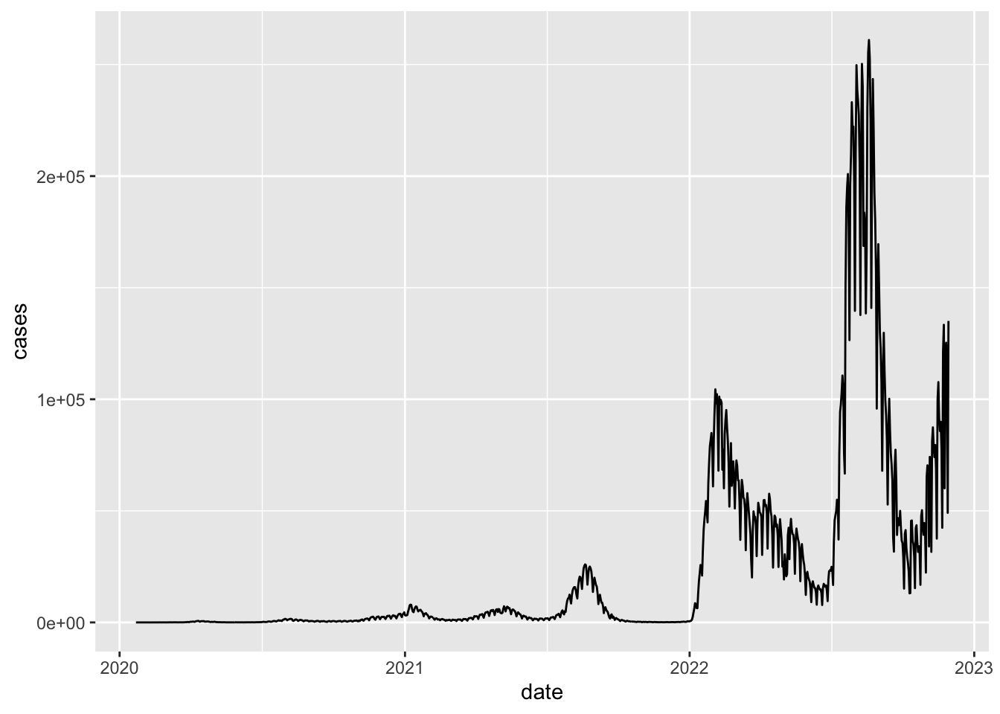
The dplyr::rename seems to have conflict with other rename function.
deaths <- deathsraw %>%
dplyr::rename(province = "Province/State", country = "Country/Region", lat = Lat, long = Long) %>%
pivot_longer(-c(province, country, lat, long), names_to = "date", values_to ="death") %>%
mutate(date = as.Date(date, "%m/%d/%y")) %>%
group_by(province, country) %>% arrange(date) %>%
mutate(death = death - lag(death)) %>%
slice(-1) %>% ungroup() %>%
relocate(date, .before = province) %>%
arrange(province, date) recovered <- recoveredraw %>%
dplyr::rename(province = "Province/State", country = "Country/Region", lat = Lat, long = Long) %>%
pivot_longer(-c(province, country, lat, long), names_to = "date", values_to ="recovered") %>%
mutate(date = as.Date(date, "%m/%d/%y")) %>%
group_by(province, country) %>% arrange(date) %>%
mutate(recovered = recovered - lag(recovered)) %>%
slice(-1) %>% ungroup() %>%
relocate(date, .before = province) %>%
arrange(province, date)D.5.2.2 Final data: combine all three
coronavirus_jhu <- full_join(confirmed, deaths) %>% full_join(recovered) %>%
pivot_longer(c(confirmed, death, recovered), names_to = "cases") %>%
arrange(cases, province, country, date)## Joining, by = c("date", "province", "country", "lat", "long")
## Joining, by = c("date", "province", "country", "lat", "long")coronavirus_jhu # %>% datatable()## # A tibble: 878,805 × 7
## # Groups: country, province [290]
## date province country lat long cases value
## <date> <chr> <chr> <dbl> <dbl> <chr> <dbl>
## 1 2020-01-23 Alberta Canada 53.9 -117. confirmed 0
## 2 2020-01-24 Alberta Canada 53.9 -117. confirmed 0
## 3 2020-01-25 Alberta Canada 53.9 -117. confirmed 0
## 4 2020-01-26 Alberta Canada 53.9 -117. confirmed 0
## 5 2020-01-27 Alberta Canada 53.9 -117. confirmed 0
## 6 2020-01-28 Alberta Canada 53.9 -117. confirmed 0
## 7 2020-01-29 Alberta Canada 53.9 -117. confirmed 0
## 8 2020-01-30 Alberta Canada 53.9 -117. confirmed 0
## 9 2020-01-31 Alberta Canada 53.9 -117. confirmed 0
## 10 2020-02-01 Alberta Canada 53.9 -117. confirmed 0
## # … with 878,795 more rowsD.5.3 Aggregated by Countries
The list of countries classified in provinces.
coronavirus_jhu %>% filter(!is.na(province)) %>% distinct(country)## # A tibble: 91 × 2
## # Groups: country, province [91]
## province country
## <chr> <chr>
## 1 Alberta Canada
## 2 Anguilla United Kingdom
## 3 Anhui China
## 4 Aruba Netherlands
## 5 Australian Capital Territory Australia
## 6 Beijing China
## 7 Bermuda United Kingdom
## 8 Bonaire, Sint Eustatius and Saba Netherlands
## 9 British Columbia Canada
## 10 British Virgin Islands United Kingdom
## # … with 81 more rowsCheck the data associated with provinces.
If we are only interested in coutries, the following is a possibility.
coronavirus_jhu_country <- coronavirus_jhu %>%
group_by(date, country, cases) %>%
summarize(value = sum(value)) %>%
arrange(cases, country, date)## `summarise()` has grouped output by 'date', 'country'. You can override using the
## `.groups` argument.coronavirus_jhu_country # %>% datatable()## # A tibble: 598,779 × 4
## # Groups: date, country [199,593]
## date country cases value
## <date> <chr> <chr> <dbl>
## 1 2020-01-23 Afghanistan confirmed 0
## 2 2020-01-24 Afghanistan confirmed 0
## 3 2020-01-25 Afghanistan confirmed 0
## 4 2020-01-26 Afghanistan confirmed 0
## 5 2020-01-27 Afghanistan confirmed 0
## 6 2020-01-28 Afghanistan confirmed 0
## 7 2020-01-29 Afghanistan confirmed 0
## 8 2020-01-30 Afghanistan confirmed 0
## 9 2020-01-31 Afghanistan confirmed 0
## 10 2020-02-01 Afghanistan confirmed 0
## # … with 598,769 more rowsD.5.4 Population of 2019
library(WDI)population <- WDI(
country = "all",
indicator = "SP.POP.TOTL",
start = 2019,
end = 2019,
extra = TRUE,
cache = NULL,
latest = NULL,
language = "en"
) %>%
select(country, iso2c, iso3c, region, income, population = SP.POP.TOTL)
population # %>% datatable()## country iso2c iso3c
## 1 Arab World 1A ARB
## 2 World 1W WLD
## 3 East Asia & Pacific (excluding high income) 4E EAP
## 4 Europe & Central Asia (excluding high income) 7E ECA
## 5 South Asia 8S SAS
## 6 Andorra AD AND
## 7 United Arab Emirates AE ARE
## 8 Afghanistan AF AFG
## 9 Antigua and Barbuda AG ATG
## 10 Albania AL ALB
## 11 Armenia AM ARM
## 12 Angola AO AGO
## 13 Argentina AR ARG
## 14 American Samoa AS ASM
## 15 Austria AT AUT
## 16 Australia AU AUS
## 17 Aruba AW ABW
## 18 Azerbaijan AZ AZE
## 19 Central Europe and the Baltics B8 CEB
## 20 Bosnia and Herzegovina BA BIH
## 21 Barbados BB BRB
## 22 Bangladesh BD BGD
## 23 Belgium BE BEL
## 24 Burkina Faso BF BFA
## 25 Bulgaria BG BGR
## 26 Bahrain BH BHR
## 27 Burundi BI BDI
## 28 Benin BJ BEN
## 29 Bermuda BM BMU
## 30 Brunei Darussalam BN BRN
## 31 Bolivia BO BOL
## 32 Brazil BR BRA
## 33 Bahamas, The BS BHS
## 34 Bhutan BT BTN
## 35 Botswana BW BWA
## 36 Belarus BY BLR
## 37 Belize BZ BLZ
## 38 Canada CA CAN
## 39 Congo, Dem. Rep. CD COD
## 40 Central African Republic CF CAF
## 41 Congo, Rep. CG COG
## 42 Switzerland CH CHE
## 43 Cote d'Ivoire CI CIV
## 44 Chile CL CHL
## 45 Cameroon CM CMR
## 46 China CN CHN
## 47 Colombia CO COL
## 48 Costa Rica CR CRI
## 49 Cuba CU CUB
## 50 Cabo Verde CV CPV
## 51 Curacao CW CUW
## 52 Cyprus CY CYP
## 53 Czechia CZ <NA>
## 54 Germany DE DEU
## 55 Djibouti DJ DJI
## 56 Denmark DK DNK
## 57 Dominica DM DMA
## 58 Dominican Republic DO DOM
## 59 Algeria DZ DZA
## 60 Ecuador EC ECU
## 61 Estonia EE EST
## 62 Egypt, Arab Rep. EG EGY
## 63 Eritrea ER ERI
## 64 Spain ES ESP
## 65 Ethiopia ET ETH
## 66 European Union EU EUU
## 67 Fragile and conflict affected situations F1 FCS
## 68 Finland FI FIN
## 69 Fiji FJ FJI
## 70 Micronesia, Fed. Sts. FM FSM
## 71 Faroe Islands FO FRO
## 72 France FR FRA
## 73 Gabon GA GAB
## 74 United Kingdom GB GBR
## 75 Grenada GD GRD
## 76 Georgia GE GEO
## 77 Ghana GH GHA
## 78 Gibraltar GI GIB
## 79 Greenland GL GRL
## 80 Gambia, The GM GMB
## 81 Guinea GN GIN
## 82 Equatorial Guinea GQ GNQ
## 83 Greece GR GRC
## 84 Guatemala GT GTM
## 85 Guam GU GUM
## 86 Guinea-Bissau GW GNB
## 87 Guyana GY GUY
## 88 Hong Kong SAR, China HK HKG
## 89 Honduras HN HND
## 90 Croatia HR HRV
## 91 Haiti HT HTI
## 92 Hungary HU HUN
## 93 Indonesia ID IDN
## 94 Ireland IE IRL
## 95 Israel IL ISR
## 96 Isle of Man IM IMN
## 97 India IN IND
## 98 Iraq IQ IRQ
## 99 Iran, Islamic Rep. IR IRN
## 100 Iceland IS ISL
## 101 Italy IT ITA
## 102 Channel Islands JG CHI
## 103 Jamaica JM JAM
## 104 Jordan JO JOR
## 105 Japan JP JPN
## 106 Kenya KE KEN
## 107 Kyrgyz Republic KG KGZ
## 108 Cambodia KH KHM
## 109 Kiribati KI KIR
## 110 Comoros KM COM
## 111 St. Kitts and Nevis KN KNA
## 112 Korea, Dem. People's Rep. KP PRK
## 113 Korea, Rep. KR KOR
## 114 Kuwait KW KWT
## 115 Cayman Islands KY CYM
## 116 Kazakhstan KZ KAZ
## 117 Lao PDR LA LAO
## 118 Lebanon LB LBN
## 119 St. Lucia LC LCA
## 120 Liechtenstein LI LIE
## 121 Sri Lanka LK LKA
## 122 Liberia LR LBR
## 123 Lesotho LS LSO
## 124 Lithuania LT LTU
## 125 Luxembourg LU LUX
## 126 Latvia LV LVA
## 127 Libya LY LBY
## 128 Morocco MA MAR
## 129 Monaco MC MCO
## 130 Moldova MD MDA
## 131 Montenegro ME MNE
## 132 St. Martin (French part) MF MAF
## 133 Madagascar MG MDG
## 134 Marshall Islands MH MHL
## 135 North Macedonia MK MKD
## 136 Mali ML MLI
## 137 Myanmar MM MMR
## 138 Mongolia MN MNG
## 139 Macao SAR, China MO MAC
## 140 Northern Mariana Islands MP MNP
## 141 Mauritania MR MRT
## 142 Malta MT MLT
## 143 Mauritius MU MUS
## 144 Maldives MV MDV
## 145 Malawi MW MWI
## 146 Mexico MX MEX
## 147 Malaysia MY MYS
## 148 Mozambique MZ MOZ
## 149 Namibia NA NAM
## 150 New Caledonia NC NCL
## 151 Niger NE NER
## 152 Nigeria NG NGA
## 153 Nicaragua NI NIC
## 154 Netherlands NL NLD
## 155 Norway NO NOR
## 156 Nepal NP NPL
## 157 Nauru NR NRU
## 158 New Zealand NZ NZL
## 159 OECD members OE OED
## 160 Oman OM OMN
## 161 Panama PA PAN
## 162 Peru PE PER
## 163 French Polynesia PF PYF
## 164 Papua New Guinea PG PNG
## 165 Philippines PH PHL
## 166 Pakistan PK PAK
## 167 Poland PL POL
## 168 Puerto Rico PR PRI
## 169 West Bank and Gaza PS PSE
## 170 Portugal PT PRT
## 171 Palau PW PLW
## 172 Paraguay PY PRY
## 173 Qatar QA QAT
## 174 Romania RO ROU
## 175 Serbia RS SRB
## 176 Russian Federation RU RUS
## 177 Rwanda RW RWA
## 178 Small states S1 SST
## 179 Pacific island small states S2 PSS
## 180 Caribbean small states S3 CSS
## 181 Other small states S4 OSS
## 182 Saudi Arabia SA SAU
## 183 Solomon Islands SB SLB
## 184 Seychelles SC SYC
## 185 Sudan SD SDN
## 186 Sweden SE SWE
## 187 Singapore SG SGP
## 188 Slovenia SI SVN
## 189 Slovak Republic SK SVK
## 190 Sierra Leone SL SLE
## 191 San Marino SM SMR
## 192 Senegal SN SEN
## 193 Somalia SO SOM
## 194 Suriname SR SUR
## 195 South Sudan SS SSD
## 196 Sao Tome and Principe ST STP
## 197 El Salvador SV SLV
## 198 Sint Maarten (Dutch part) SX SXM
## 199 Syrian Arab Republic SY SYR
## 200 Eswatini SZ SWZ
## 201 Latin America & the Caribbean (IDA & IBRD countries) T2 TLA
## 202 Middle East & North Africa (IDA & IBRD countries) T3 TMN
## 203 East Asia & Pacific (IDA & IBRD countries) T4 TEA
## 204 South Asia (IDA & IBRD) T5 TSA
## 205 Sub-Saharan Africa (IDA & IBRD countries) T6 TSS
## 206 Europe & Central Asia (IDA & IBRD countries) T7 TEC
## 207 Turks and Caicos Islands TC TCA
## 208 Chad TD TCD
## 209 Togo TG TGO
## 210 Thailand TH THA
## 211 Tajikistan TJ TJK
## 212 Timor-Leste TL TLS
## 213 Turkmenistan TM TKM
## 214 Tunisia TN TUN
## 215 Tonga TO TON
## 216 Turkiye TR TUR
## 217 Trinidad and Tobago TT TTO
## 218 Tuvalu TV TUV
## 219 Tanzania TZ TZA
## 220 Ukraine UA UKR
## 221 Uganda UG UGA
## 222 United States US USA
## 223 Uruguay UY URY
## 224 Uzbekistan UZ UZB
## 225 Pre-demographic dividend V1 PRE
## 226 Early-demographic dividend V2 EAR
## 227 Late-demographic dividend V3 LTE
## 228 Post-demographic dividend V4 PST
## 229 St. Vincent and the Grenadines VC VCT
## 230 Venezuela, RB VE VEN
## 231 British Virgin Islands VG VGB
## 232 Virgin Islands (U.S.) VI VIR
## 233 Vietnam VN VNM
## 234 Vanuatu VU VUT
## 235 Samoa WS WSM
## 236 Euro area XC EMU
## 237 High income XD HIC
## 238 Heavily indebted poor countries (HIPC) XE HPC
## 239 IBRD only XF IBD
## 240 IDA total XG IDA
## 241 IDA blend XH IDB
## 242 IDA only XI IDX
## 243 Latin America & Caribbean (excluding high income) XJ LAC
## 244 Kosovo XK XKX
## 245 Least developed countries: UN classification XL LDC
## 246 Low income XM LIC
## 247 Lower middle income XN LMC
## 248 Low & middle income XO LMY
## 249 Middle income XP MIC
## 250 Middle East & North Africa (excluding high income) XQ MNA
## 251 Upper middle income XT UMC
## 252 North America XU NAC
## 253 Not classified XY INX
## 254 Yemen, Rep. YE YEM
## 255 East Asia & Pacific Z4 EAS
## 256 Europe & Central Asia Z7 ECS
## 257 South Africa ZA ZAF
## 258 Sub-Saharan Africa (excluding high income) ZF SSA
## 259 Sub-Saharan Africa ZG <NA>
## 260 Africa Eastern and Southern ZH AFE
## 261 Africa Western and Central ZI AFW
## 262 Latin America & Caribbean ZJ <NA>
## 263 Zambia ZM ZMB
## 264 Middle East & North Africa ZQ MEA
## 265 IDA & IBRD total ZT IBT
## 266 Zimbabwe ZW ZWE
## region income population
## 1 Aggregates Aggregates 427870273
## 2 Aggregates Aggregates 7683806444
## 3 Aggregates Aggregates 2103723076
## 4 Aggregates Aggregates 399386100
## 5 Aggregates Aggregates 1835776769
## 6 Europe & Central Asia High income 77146
## 7 Middle East & North Africa High income 9770526
## 8 South Asia Low income 38041757
## 9 Latin America & Caribbean High income 97115
## 10 Europe & Central Asia Upper middle income 2854191
## 11 Europe & Central Asia Upper middle income 2957728
## 12 Sub-Saharan Africa Lower middle income 31825299
## 13 Latin America & Caribbean Upper middle income 44938712
## 14 East Asia & Pacific Upper middle income 55312
## 15 Europe & Central Asia High income 8879920
## 16 East Asia & Pacific High income 25365745
## 17 Latin America & Caribbean High income 106310
## 18 Europe & Central Asia Upper middle income 10024283
## 19 Aggregates Aggregates 102398494
## 20 Europe & Central Asia Upper middle income 3300998
## 21 Latin America & Caribbean High income 287021
## 22 South Asia Lower middle income 163046173
## 23 Europe & Central Asia High income 11488980
## 24 Sub-Saharan Africa Low income 20321383
## 25 Europe & Central Asia Upper middle income 6975761
## 26 Middle East & North Africa High income 1641164
## 27 Sub-Saharan Africa Low income 11530577
## 28 Sub-Saharan Africa Lower middle income 11801151
## 29 North America High income 63911
## 30 East Asia & Pacific High income 433296
## 31 Latin America & Caribbean Lower middle income 11513102
## 32 Latin America & Caribbean Upper middle income 211049519
## 33 Latin America & Caribbean High income 389486
## 34 South Asia Lower middle income 763094
## 35 Sub-Saharan Africa Upper middle income 2303703
## 36 Europe & Central Asia Upper middle income 9419758
## 37 Latin America & Caribbean Upper middle income 390351
## 38 North America High income 37601230
## 39 Sub-Saharan Africa Low income 86790568
## 40 Sub-Saharan Africa Low income 4745179
## 41 Sub-Saharan Africa Lower middle income 5380504
## 42 Europe & Central Asia High income 8575280
## 43 Sub-Saharan Africa Lower middle income 25716554
## 44 Latin America & Caribbean High income 18952035
## 45 Sub-Saharan Africa Lower middle income 25876387
## 46 East Asia & Pacific Upper middle income 1407745000
## 47 Latin America & Caribbean Upper middle income 50339443
## 48 Latin America & Caribbean Upper middle income 5047561
## 49 Latin America & Caribbean Upper middle income 11333484
## 50 Sub-Saharan Africa Lower middle income 549936
## 51 Latin America & Caribbean High income 157441
## 52 Europe & Central Asia High income 1198574
## 53 <NA> <NA> 10671870
## 54 Europe & Central Asia High income 83092962
## 55 Middle East & North Africa Lower middle income 973557
## 56 Europe & Central Asia High income 5814422
## 57 Latin America & Caribbean Upper middle income 71808
## 58 Latin America & Caribbean Upper middle income 10738957
## 59 Middle East & North Africa Lower middle income 43053054
## 60 Latin America & Caribbean Upper middle income 17373657
## 61 Europe & Central Asia High income 1326855
## 62 Middle East & North Africa Lower middle income 100388076
## 63 Sub-Saharan Africa Low income NA
## 64 Europe & Central Asia High income 47134837
## 65 Sub-Saharan Africa Low income 112078727
## 66 Aggregates Aggregates 447197811
## 67 Aggregates Aggregates 940026046
## 68 Europe & Central Asia High income 5521606
## 69 East Asia & Pacific Upper middle income 889955
## 70 East Asia & Pacific Lower middle income 113811
## 71 Europe & Central Asia High income 48677
## 72 Europe & Central Asia High income 67248926
## 73 Sub-Saharan Africa Upper middle income 2172578
## 74 Europe & Central Asia High income 66836327
## 75 Latin America & Caribbean Upper middle income 112002
## 76 Europe & Central Asia Upper middle income 3720161
## 77 Sub-Saharan Africa Lower middle income 30417858
## 78 Europe & Central Asia High income 33706
## 79 Europe & Central Asia High income 56225
## 80 Sub-Saharan Africa Low income 2347696
## 81 Sub-Saharan Africa Low income 12771246
## 82 Sub-Saharan Africa Upper middle income 1355982
## 83 Europe & Central Asia High income 10721582
## 84 Latin America & Caribbean Upper middle income 16604026
## 85 East Asia & Pacific High income 167295
## 86 Sub-Saharan Africa Low income 1920917
## 87 Latin America & Caribbean Upper middle income 782775
## 88 East Asia & Pacific High income 7507900
## 89 Latin America & Caribbean Lower middle income 9746115
## 90 Europe & Central Asia High income 4065253
## 91 Latin America & Caribbean Lower middle income 11263079
## 92 Europe & Central Asia High income 9771141
## 93 East Asia & Pacific Lower middle income 270625567
## 94 Europe & Central Asia High income 4934340
## 95 Middle East & North Africa High income 9054000
## 96 Europe & Central Asia High income 84589
## 97 South Asia Lower middle income 1366417756
## 98 Middle East & North Africa Upper middle income 39309789
## 99 Middle East & North Africa Lower middle income 82913893
## 100 Europe & Central Asia High income 360563
## 101 Europe & Central Asia High income 59729081
## 102 Europe & Central Asia High income 172264
## 103 Latin America & Caribbean Upper middle income 2948277
## 104 Middle East & North Africa Upper middle income 10101697
## 105 East Asia & Pacific High income 126633000
## 106 Sub-Saharan Africa Lower middle income 52573967
## 107 Europe & Central Asia Lower middle income 6456200
## 108 East Asia & Pacific Lower middle income 16486542
## 109 East Asia & Pacific Lower middle income 117608
## 110 Sub-Saharan Africa Lower middle income 850891
## 111 Latin America & Caribbean High income 52834
## 112 East Asia & Pacific Low income 25666158
## 113 East Asia & Pacific High income 51764822
## 114 Middle East & North Africa High income 4207077
## 115 Latin America & Caribbean High income 64948
## 116 Europe & Central Asia Upper middle income 18513673
## 117 East Asia & Pacific Lower middle income 7169456
## 118 Middle East & North Africa Lower middle income 6855709
## 119 Latin America & Caribbean Upper middle income 182795
## 120 Europe & Central Asia High income 38020
## 121 South Asia Lower middle income 21803000
## 122 Sub-Saharan Africa Low income 4937374
## 123 Sub-Saharan Africa Lower middle income 2125267
## 124 Europe & Central Asia High income 2794137
## 125 Europe & Central Asia High income 620001
## 126 Europe & Central Asia High income 1913822
## 127 Middle East & North Africa Upper middle income 6777453
## 128 Middle East & North Africa Lower middle income 36471766
## 129 Europe & Central Asia High income 38967
## 130 Europe & Central Asia Upper middle income 2664974
## 131 Europe & Central Asia Upper middle income 622028
## 132 Latin America & Caribbean High income 38002
## 133 Sub-Saharan Africa Low income 26969306
## 134 East Asia & Pacific Upper middle income 58791
## 135 Europe & Central Asia Upper middle income 2076694
## 136 Sub-Saharan Africa Low income 19658023
## 137 East Asia & Pacific Lower middle income 54045422
## 138 East Asia & Pacific Lower middle income 3225166
## 139 East Asia & Pacific High income 640446
## 140 East Asia & Pacific High income 57213
## 141 Sub-Saharan Africa Lower middle income 4525698
## 142 Middle East & North Africa High income 504062
## 143 Sub-Saharan Africa Upper middle income 1265711
## 144 South Asia Upper middle income 530957
## 145 Sub-Saharan Africa Low income 18628749
## 146 Latin America & Caribbean Upper middle income 127575529
## 147 East Asia & Pacific Upper middle income 31949789
## 148 Sub-Saharan Africa Low income 30366043
## 149 Sub-Saharan Africa Upper middle income 2494524
## 150 East Asia & Pacific High income 271300
## 151 Sub-Saharan Africa Low income 23310719
## 152 Sub-Saharan Africa Lower middle income 200963603
## 153 Latin America & Caribbean Lower middle income 6545503
## 154 Europe & Central Asia High income 17344874
## 155 Europe & Central Asia High income 5347896
## 156 South Asia Lower middle income 28608715
## 157 East Asia & Pacific High income 10764
## 158 East Asia & Pacific High income 4979200
## 159 Aggregates Aggregates 1365274704
## 160 Middle East & North Africa High income 4974992
## 161 Latin America & Caribbean High income 4246440
## 162 Latin America & Caribbean Upper middle income 32510462
## 163 East Asia & Pacific High income 279285
## 164 East Asia & Pacific Lower middle income 8776119
## 165 East Asia & Pacific Lower middle income 108116622
## 166 South Asia Lower middle income 216565317
## 167 Europe & Central Asia High income 37965475
## 168 Latin America & Caribbean High income 3193694
## 169 Middle East & North Africa Lower middle income 4685306
## 170 Europe & Central Asia High income 10286263
## 171 East Asia & Pacific Upper middle income 18001
## 172 Latin America & Caribbean Upper middle income 7044639
## 173 Middle East & North Africa High income 2832071
## 174 Europe & Central Asia High income 19371648
## 175 Europe & Central Asia Upper middle income 6945235
## 176 Europe & Central Asia Upper middle income 144406261
## 177 Sub-Saharan Africa Low income 12626938
## 178 Aggregates Aggregates 41254483
## 179 Aggregates Aggregates 2491878
## 180 Aggregates Aggregates 7401389
## 181 Aggregates Aggregates 31361216
## 182 Middle East & North Africa High income 34268529
## 183 East Asia & Pacific Lower middle income 669821
## 184 Sub-Saharan Africa High income 97625
## 185 Sub-Saharan Africa Low income 42813237
## 186 Europe & Central Asia High income 10278887
## 187 East Asia & Pacific High income 5703569
## 188 Europe & Central Asia High income 2088385
## 189 Europe & Central Asia High income 5454147
## 190 Sub-Saharan Africa Low income 7813207
## 191 Europe & Central Asia High income 33864
## 192 Sub-Saharan Africa Lower middle income 16296362
## 193 Sub-Saharan Africa Low income 15442906
## 194 Latin America & Caribbean Upper middle income 581363
## 195 Sub-Saharan Africa Low income 11062114
## 196 Sub-Saharan Africa Lower middle income 215048
## 197 Latin America & Caribbean Lower middle income 6453550
## 198 Latin America & Caribbean High income 41608
## 199 Middle East & North Africa Low income 17070132
## 200 Sub-Saharan Africa Lower middle income 1148133
## 201 Aggregates Aggregates 630644771
## 202 Aggregates Aggregates 384771769
## 203 Aggregates Aggregates 2078012370
## 204 Aggregates Aggregates 1835776769
## 205 Aggregates Aggregates 1106957870
## 206 Aggregates Aggregates 460788476
## 207 Latin America & Caribbean High income 38194
## 208 Sub-Saharan Africa Low income 15946882
## 209 Sub-Saharan Africa Low income 8082359
## 210 East Asia & Pacific Upper middle income 69625581
## 211 Europe & Central Asia Lower middle income 9321023
## 212 East Asia & Pacific Lower middle income 1293120
## 213 Europe & Central Asia Upper middle income 5942094
## 214 Middle East & North Africa Lower middle income 11694721
## 215 East Asia & Pacific Upper middle income 104497
## 216 Europe & Central Asia Upper middle income 83429607
## 217 Latin America & Caribbean High income 1394969
## 218 East Asia & Pacific Upper middle income 11655
## 219 Sub-Saharan Africa Lower middle income 58005461
## 220 Europe & Central Asia Lower middle income 44386203
## 221 Sub-Saharan Africa Low income 44269587
## 222 North America High income 328329953
## 223 Latin America & Caribbean High income 3461731
## 224 Europe & Central Asia Lower middle income 33580350
## 225 Aggregates Aggregates 944902748
## 226 Aggregates Aggregates 3290291029
## 227 Aggregates Aggregates 2308520840
## 228 Aggregates Aggregates 1113142897
## 229 Latin America & Caribbean Upper middle income 110593
## 230 Latin America & Caribbean Not classified 28515829
## 231 Latin America & Caribbean High income 30033
## 232 Latin America & Caribbean High income 106669
## 233 East Asia & Pacific Lower middle income 96462108
## 234 East Asia & Pacific Lower middle income 299882
## 235 East Asia & Pacific Lower middle income 197093
## 236 Aggregates Aggregates 342283354
## 237 Aggregates Aggregates 1234830048
## 238 Aggregates Aggregates 801708019
## 239 Aggregates Aggregates 4826259460
## 240 Aggregates Aggregates 1670692565
## 241 Aggregates Aggregates 561571929
## 242 Aggregates Aggregates 1109120636
## 243 Aggregates Aggregates 585257302
## 244 Europe & Central Asia Upper middle income 1788878
## 245 Aggregates Aggregates 1033088986
## 246 Aggregates Aggregates 665731857
## 247 Aggregates Aggregates 3274021191
## 248 Aggregates Aggregates 6420460567
## 249 Aggregates Aggregates 5754728710
## 250 Aggregates Aggregates 389457075
## 251 Aggregates Aggregates 2480707519
## 252 Aggregates Aggregates 365995094
## 253 Aggregates Aggregates NA
## 254 Middle East & North Africa Low income 29161922
## 255 Aggregates Aggregates 2351127942
## 256 Aggregates Aggregates 920807612
## 257 Sub-Saharan Africa Upper middle income 58558267
## 258 Aggregates Aggregates 1106860245
## 259 <NA> <NA> 1106957870
## 260 Aggregates Aggregates 660046272
## 261 Aggregates Aggregates 446911598
## 262 <NA> <NA> 646431661
## 263 Sub-Saharan Africa Low income 17861034
## 264 Aggregates Aggregates 456709496
## 265 Aggregates Aggregates 6496952025
## 266 Sub-Saharan Africa Lower middle income 14645473coronavirus_country <- coronavirus_jhu_country %>%
left_join(population)## Joining, by = "country"coronavirus_country # %>% datatable()## # A tibble: 598,779 × 9
## # Groups: date, country [199,593]
## date country cases value iso2c iso3c region income popul…¹
## <date> <chr> <chr> <dbl> <chr> <chr> <chr> <chr> <dbl>
## 1 2020-01-23 Afghanistan confirmed 0 AF AFG South Asia Low in… 3.80e7
## 2 2020-01-24 Afghanistan confirmed 0 AF AFG South Asia Low in… 3.80e7
## 3 2020-01-25 Afghanistan confirmed 0 AF AFG South Asia Low in… 3.80e7
## 4 2020-01-26 Afghanistan confirmed 0 AF AFG South Asia Low in… 3.80e7
## 5 2020-01-27 Afghanistan confirmed 0 AF AFG South Asia Low in… 3.80e7
## 6 2020-01-28 Afghanistan confirmed 0 AF AFG South Asia Low in… 3.80e7
## 7 2020-01-29 Afghanistan confirmed 0 AF AFG South Asia Low in… 3.80e7
## 8 2020-01-30 Afghanistan confirmed 0 AF AFG South Asia Low in… 3.80e7
## 9 2020-01-31 Afghanistan confirmed 0 AF AFG South Asia Low in… 3.80e7
## 10 2020-02-01 Afghanistan confirmed 0 AF AFG South Asia Low in… 3.80e7
## # … with 598,769 more rows, and abbreviated variable name ¹populationsummary(coronavirus_country)## date country cases value
## Min. :2020-01-23 Length:598779 Length:598779 Min. :-30974748
## 1st Qu.:2020-09-27 Class :character Class :character 1st Qu.: 0
## Median :2021-06-02 Mode :character Mode :character Median : 0
## Mean :2021-06-02 Mean : 1065
## 3rd Qu.:2022-02-05 3rd Qu.: 62
## Max. :2022-10-11 Max. : 1355367
## NA's :14895
## iso2c iso3c region income
## Length:598779 Length:598779 Length:598779 Length:598779
## Class :character Class :character Class :character Class :character
## Mode :character Mode :character Mode :character Mode :character
##
##
##
##
## population
## Min. :1.076e+04
## 1st Qu.:1.921e+06
## Median :8.828e+06
## Mean :3.869e+07
## 3rd Qu.:2.572e+07
## Max. :1.408e+09
## NA's :92349D.5.4.1 Region
coronavirus_country %>% group_by(region) %>%
summarize(n = n_distinct(country))## # A tibble: 8 × 2
## region n
## <chr> <int>
## 1 East Asia & Pacific 24
## 2 Europe & Central Asia 47
## 3 Latin America & Caribbean 28
## 4 Middle East & North Africa 17
## 5 North America 1
## 6 South Asia 8
## 7 Sub-Saharan Africa 45
## 8 <NA> 31coronavirus_country %>% filter(is.na(region)) %>% pull(country) %>% unique()## [1] "Antarctica" "Bahamas"
## [3] "Brunei" "Burma"
## [5] "Congo (Brazzaville)" "Congo (Kinshasa)"
## [7] "Czechia" "Diamond Princess"
## [9] "Egypt" "Gambia"
## [11] "Holy See" "Iran"
## [13] "Korea, North" "Korea, South"
## [15] "Kyrgyzstan" "Laos"
## [17] "MS Zaandam" "Micronesia"
## [19] "Russia" "Saint Kitts and Nevis"
## [21] "Saint Lucia" "Saint Vincent and the Grenadines"
## [23] "Slovakia" "Summer Olympics 2020"
## [25] "Syria" "Taiwan*"
## [27] "Turkey" "US"
## [29] "Venezuela" "Winter Olympics 2022"
## [31] "Yemen"coronavirus_country %>% drop_na() %>% group_by(region) %>%
summarize(n = n_distinct(country)) %>%
arrange(n) %>%
ggplot() +
geom_col(aes(y = reorder(region, n), x = n))
coronavirus_country %>% filter(cases == "confirmed") %>%
group_by(region, date) %>% summarize(confirmed = sum(value, na.rm = TRUE)) %>%
ggplot() +
geom_line(aes(x = date, y = confirmed, color = region)) +
labs(title = "Total Number of Confirmed Cases by Region")## `summarise()` has grouped output by 'region'. You can override using the `.groups`
## argument.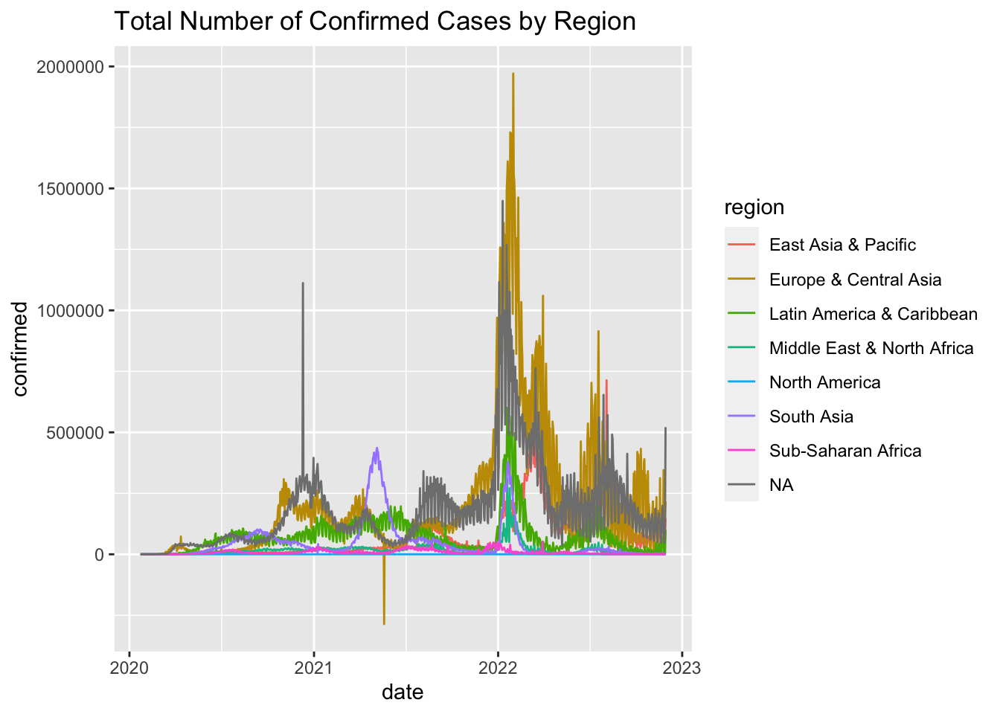
coronavirus_country %>% filter(cases == "death") %>%
group_by(region, date) %>% summarize(death = sum(value, na.rm = TRUE)) %>%
ggplot() +
geom_line(aes(x = date, y = death, color = region)) +
labs(title = "Total Number of Deaths by Region")## `summarise()` has grouped output by 'region'. You can override using the `.groups`
## argument.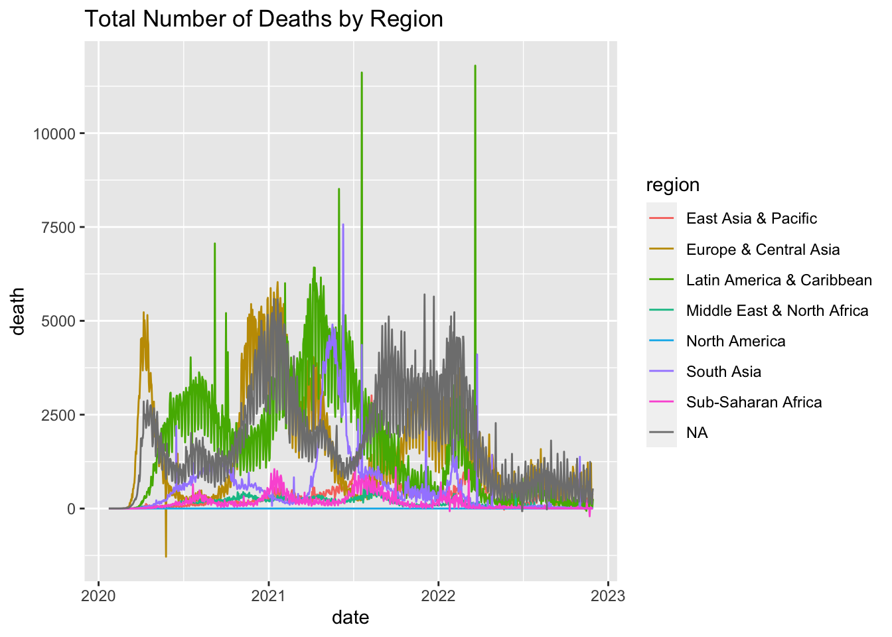
D.5.4.2 Income
coronavirus_country %>% group_by(income) %>%
summarize(n = n_distinct(country))## # A tibble: 5 × 2
## income n
## <chr> <int>
## 1 High income 52
## 2 Low income 23
## 3 Lower middle income 47
## 4 Upper middle income 48
## 5 <NA> 31coronavirus_country %>% filter(is.na(income)) %>% pull(country) %>% unique()## [1] "Antarctica" "Bahamas"
## [3] "Brunei" "Burma"
## [5] "Congo (Brazzaville)" "Congo (Kinshasa)"
## [7] "Czechia" "Diamond Princess"
## [9] "Egypt" "Gambia"
## [11] "Holy See" "Iran"
## [13] "Korea, North" "Korea, South"
## [15] "Kyrgyzstan" "Laos"
## [17] "MS Zaandam" "Micronesia"
## [19] "Russia" "Saint Kitts and Nevis"
## [21] "Saint Lucia" "Saint Vincent and the Grenadines"
## [23] "Slovakia" "Summer Olympics 2020"
## [25] "Syria" "Taiwan*"
## [27] "Turkey" "US"
## [29] "Venezuela" "Winter Olympics 2022"
## [31] "Yemen"coronavirus_country %>% drop_na() %>% group_by(income) %>%
summarize(n = n_distinct(country)) %>%
arrange(n) %>%
ggplot() +
geom_col(aes(y = reorder(income, n), x = n))
coronavirus_country %>% filter(cases == "confirmed") %>%
group_by(income, date) %>% summarize(confirmed = sum(value, na.rm = TRUE)) %>%
ggplot() +
geom_line(aes(x = date, y = confirmed, color = income)) +
labs(title = "Total Number of Confirmed Cases by Income Level")## `summarise()` has grouped output by 'income'. You can override using the `.groups`
## argument.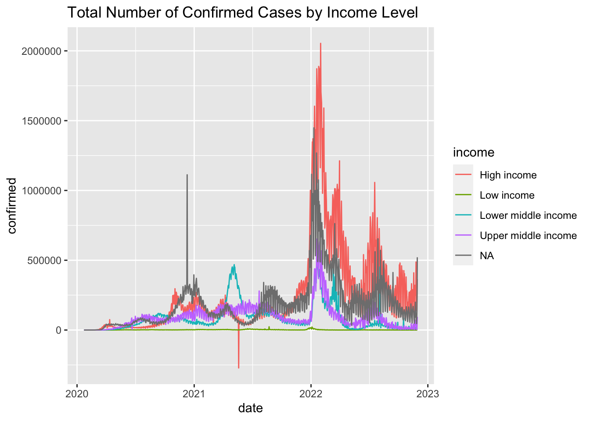
coronavirus_country %>% filter(cases == "death") %>%
group_by(income, date) %>% summarize(death = sum(value, na.rm = TRUE)) %>%
ggplot() +
geom_line(aes(x = date, y = death, color = income)) +
labs(title = "Total Number of Deaths by Income Level")## `summarise()` has grouped output by 'income'. You can override using the `.groups`
## argument.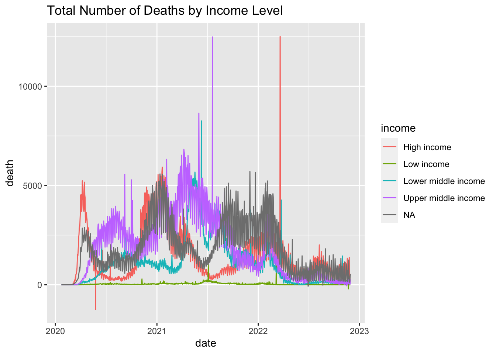 ### Analysis Suggested by Rami Krispin
See https://github.com/RamiKrispin/coronavirus/
- Rami Krispin is the author of an R package
coronavirus
D.5.4.3 Summary of the total confrimed cases by country
coronavirus_country %>%
filter(cases == "confirmed") %>%
group_by(country) %>%
summarize(total_cases = sum(value)) %>%
arrange(desc(total_cases))## # A tibble: 201 × 2
## country total_cases
## <chr> <dbl>
## 1 US 96772267
## 2 India 44616235
## 3 France 36187658
## 4 Brazil 34731539
## 5 Germany 34257916
## 6 Korea, South 25025748
## 7 United Kingdom 23957457
## 8 Italy 22896742
## 9 Japan 21593702
## 10 Russia 20929929
## # … with 191 more rowsD.5.4.4 Summary of new cases during the past 24 hours by country and type
Date = 2022-10-10
coronavirus_country %>%
filter(date == Sys.Date() -2) %>%
select(country, cases, value) %>%
group_by(country, cases) %>%
summarize(total_cases = sum(value)) %>%
pivot_wider(names_from = cases,
values_from = total_cases) %>%
arrange(desc(confirmed))## Adding missing grouping variables: `date`
## `summarise()` has grouped output by 'country'. You can override using the `.groups`
## argument.## # A tibble: 201 × 4
## # Groups: country [201]
## country confirmed death recovered
## <chr> <dbl> <dbl> <dbl>
## 1 Germany 172536 185 0
## 2 France 109269 113 0
## 3 Taiwan* 32072 57 0
## 4 Turkey 23116 24 0
## 5 US 21876 117 0
## 6 Brazil 16956 171 0
## 7 Russia 15501 95 0
## 8 Korea, South 15476 10 0
## 9 Italy 15089 51 0
## 10 Japan 13038 50 0
## # … with 191 more rows